when you read this, i’m already dead. my name is luca and i was a computer science student at uni bern.
at eight i watched shakira’s waka waka world cup video on my dad’s laptop and started crying. i promised myself: “you have to make it luca, no matter what.”
my brother, my neighbor and his brother were all much older than me and played football on a high level. i started playing with them as a little child in the garden of our apartment complex. my mom always wanted to play football but it wasn’t possible for girls, so she made sure we would.
there were stairs leading down to the underground parking lot, covered by metal bars on the outside, which we’d use as a goal. sometimes the ball fell down the stairs and you had to go get it. we’d play until our moms called us for dinner from the balcony or until it got dark.
one day my neighbor said “give me the ball, watch this.” he threw it in the air and kicked it onto our balcony on the second floor. it was the coolest thing i had ever seen.
my neighbor’s brother was a full 15 years older than me, played 1. liga, futsal for the national team and is now the head coach of the women’s futsal national team. one time during a 2v2 at the local school aebnit, he told me “just wait in front of goal, i’ll dribble past them, pass it to you and you’ll score.” that’s exactly what happened. many years later, i’d say the same to other kids.
another day, two older boys kept shooting balls at me. my neighbor lost it, blasted the ball at them, and shouted, “how do you like this?” they got scared and left.
when i was four years old, my mom gave me a real madrid shirt with raúl on the back. i don’t even know why.
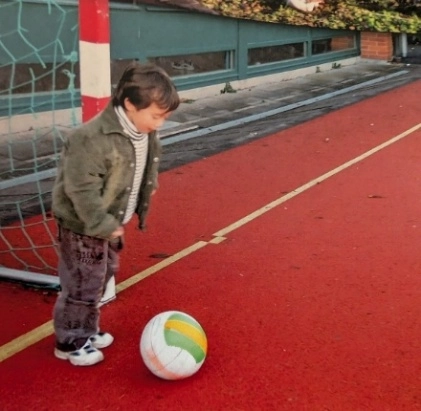
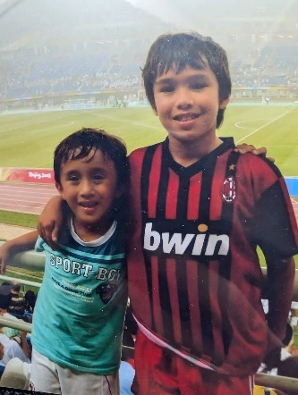
i lied to my neighbor and said i preferred barca over real madrid because i knew he did. my brother and i always collected panini stickers for every big tournament. waving flag was my favorite song and i couldn’t stop watching these videos from ronaldo, ronaldinho and maradona.
i’d try to juggle the ball from my home to school. i’d teach myself skills from youtube.
one day i was practicing skill moves when some older boy said to his friends “guys, look how good this kid is”. they crowded round, pulled out their flip phones and recorded me.
another time while playing with my brother’s teammates, one of them said to him “your little brother is crazy.”
when i visited madrid’s stadium, i couldn’t believe how big and tall it was. in school i started dreaming about playing there one day.
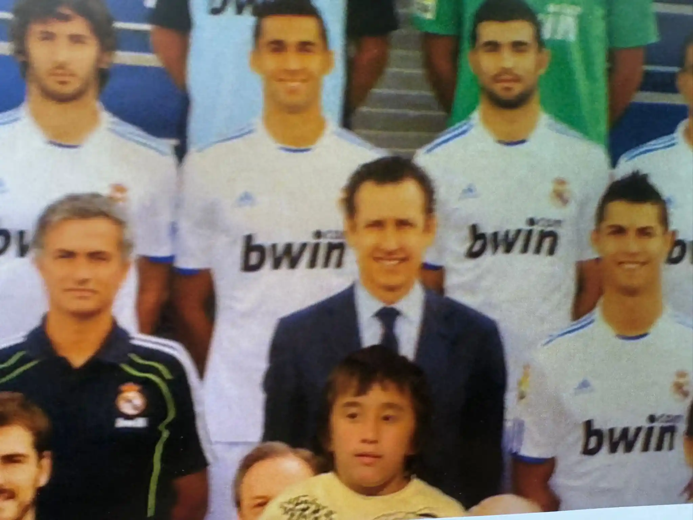
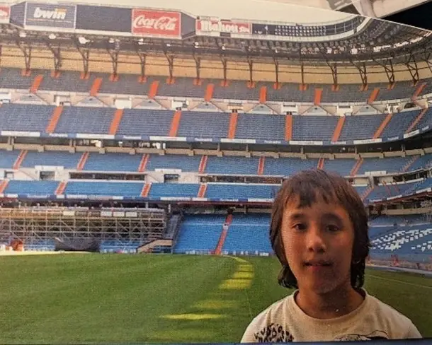
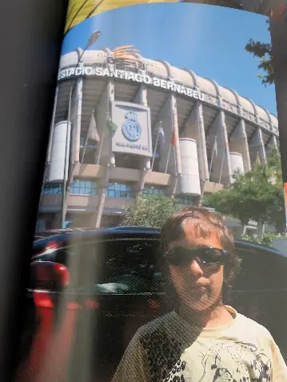
in fourth grade the teacher asked us what we wanted to be when we grow up. i said “i wanna be a pro footballer. i wanna play for real madrid.”
my family always said becoming a professional footballer wasn’t realistic. the sporting director said about my brother “you will hear a lot about this kid in the future.” he got opportunities at bsc yb's academy but he wouldn’t take them saying he “wouldn’t make it pro anyway.”
watching the 2010 world cup, i thought: “this doesn’t look impossible to me.”
i knew one day i had to join an academy. i'm from bern and i had a season ticket at bsc yb. of course i wanted to play for my city and its academy.
for my 10th birthday, my fourth grade class made a little booklet where every student made a page for me. on the first page, a girl drew the ballon d’or and said i was going to win it.
others said “you’ll play for real madrid” and “you’ll be the best footballer in the world.” i had my very own prophecy. and i believed in it completely.
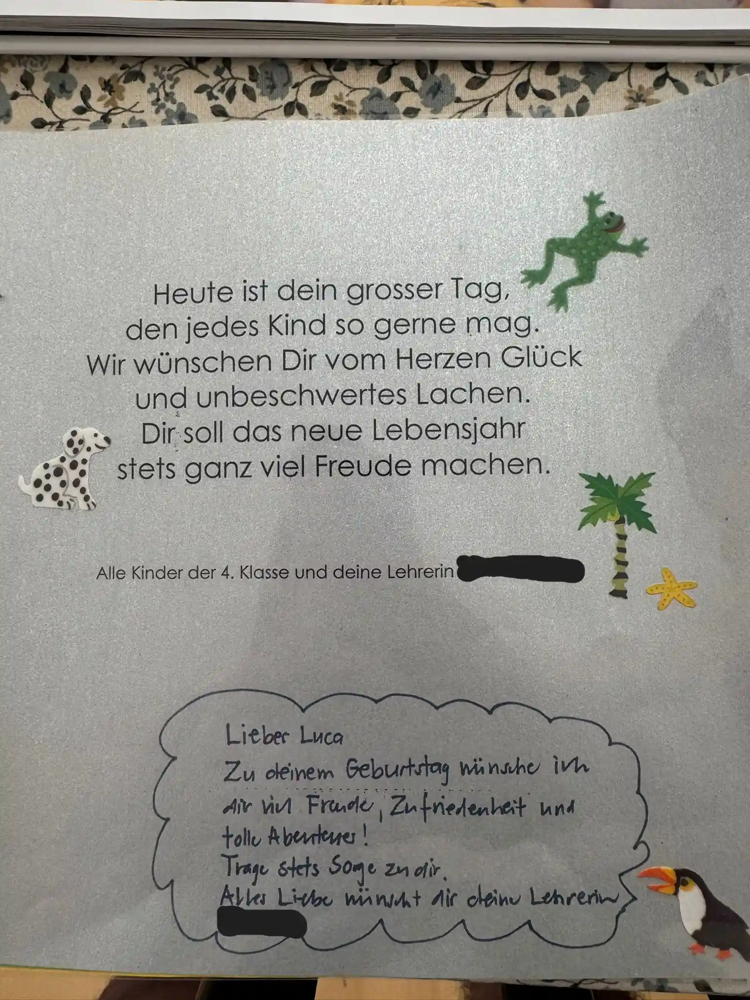
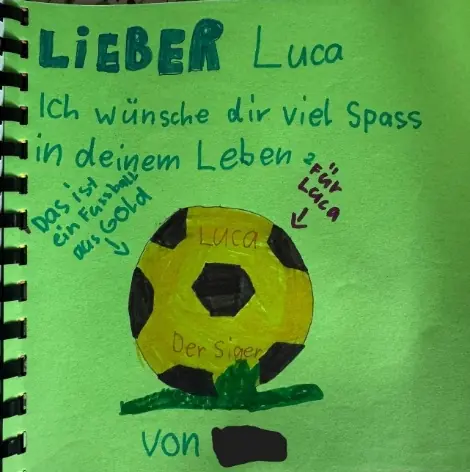
at nine, i was trash talking messi on facebook. at twelve i started obsessively following elite football, especially real madrid. in school, i’d draw my desired line-up in my notebooks. i’d watch the full 90-minute games on illegal, laggy streaming websites. all of my birthday and christmas money was spent on real madrid.
when ramos scored in extra time in the champions league final 2014, my neighbor said he heard me screaming. when ronaldo scored the final penalty in 2016, i cried. i’d leave hang-outs with my friends to watch real madrid, one time a friend said “bro they’re playing eibar, what you going home for?”
in fifa 15 i was probably one of the best players in switzerland. my room was full of posters of my favorite players and puzzle versions of the stadiums i dreamed of playing in. at 13, i visited real madrid’s stadium again.
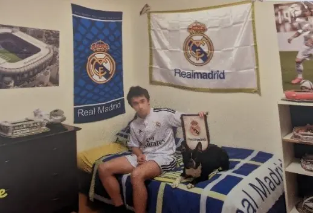
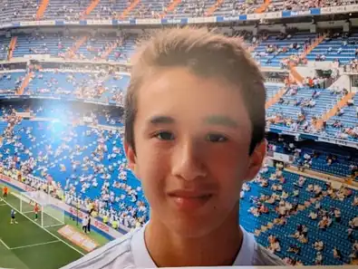
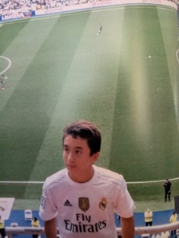
i grew up in muri gümligen between embassies, rich swiss people and immigrants. my friends were mostly the immigrants. i’m half chinese myself.
i switched schools six times, mostly between the german schools in muri-gümligen and the french school near the city. waking up in the morning and getting through a school-day felt impossible.
one of my family members is the worst person i ever met. throughout my childhood there was constant screaming, blame and violence at me. the rest of my family aren’t evil, but with any of them, there was never a real relationship. my grandmother, who lived with us my entire life, is the only exception. i can't forgive them for what they put me through. it has always either been denied, downplayed or blamed on me. they know nothing about me.
i had this other neighbor, three years older than me and i always hung around him and his friends. when i was 9, we started going to youth-clubs. cigs, shishas, weed and alcohol were always everywhere. there would often be serious fights. one time a guy pulled a knife. another ended in the hospital. many of them started having sex at 12, 13. there was always drama, in person and on social media. parents, teachers, lawyers and the police all got involved.
in sixth grade my best friend started bringing rolling papers for cigs. we’d go to playgrounds and smoke until our heads spun. one day in physical ed, i got hit with a craving so bad it scared me. i quit right then and there.
in seventh grade the older boys from the french school showed us how to shoplift. we’d not even take money or food to school anymore, we’d just steal our lunch, apple pie and ben and jerry's cookie dough ice cream mostly. after school, we'd take our scooters, get on tram 8 and go to the city to steal clothes, mostly at h&m.
we’d steal alcohol or go to the reithalle in bern to buy weed. one time, this guy brought cocaine. i was 13, he was like 15. i was always the only one that wouldn’t consume anything, because one day i was going to be a pro footballer.
one time an older boy came up to me and said “bring me this pullover from h&m by tomorrow or i’ll beat the shit out of you.”
there was this small kid i'd often walk to the tram station with. he was known for being a thief. i asked him if he’d get me the pullover and he said no. i said “if you don’t do it, i’ll beat the shit out of you.” later, i apologized and gave him a stolen croissant.
all my time was spent on either doing shit or football. we broke things, did graffiti, stole everything, had the police called on us. i often barely escaped serious trouble. i knew i couldn’t continue like that if i wanted to be a pro footballer.
there was this kid i grew up with, one of my best friends. we used to steal ice cream together but also fought a lot. in seventh grade we reconnected and spent all summer playing football at muribad by the aare river. we'd play football with other kids and adults, walk to the auguet-bridge, jump in the river, and repeat it all day long.
he was a footballer unlike anything i had ever seen. it was impossible to take the ball off of him. it drove me insane. i thought “how can you be that good?”. he had what i thought you could never teach. something given by god. the gift of playing pure football. i wanted others to feel about my football the way i did about his.
he was smart, a good person and extremely funny. he lived in an immigration center and came from a rough background. he spent more time on the streets than with football. he did drugs, petty crime, partied all night. every week i heard new stories about the shit he’d do on the streets. i always told him “quit this shit and focus on football.” it never worked.
my free-time was just pick-up street football, and i was playing for my club too. our pe teacher was a former semi-pro, so even there we only played football. a friend and i would always joke to each other “fuck school and girls, let’s just focus on football”
football gave me so much joy. it was just... my life.
there was this girl in my school I was horribly crushing on. we went out once and I spent half of it teaching her a rainbow flick. at the end of that summer, i was biking home with her. we reached our crossroads where i’d have to go one way and she the other. i was playing with a football in my hands. it slipped out and rolled down my road, underneath a car. “i’ll get it later” i said. eventually we said our goodbyes and i went home. i completely forgot about the ball. the next day, it was gone. this was the last summer i thought about anything other than football.
that same summer i started training on my own every single day, outside of team practice and matches. at first i'd jog through the streets of muri-gümligen with a ball at my feet. Then exercises from youtube. i quickly realized that wouldn't get me far either. later i’d start dribbling in the garden, ruining it. the landlord threatened to make me pay, so i had to stop. i’d also practice first touches on the house wall, until my neighbors complained about the noise.
i began by reading dozens of footballer biographies, then books on talent and how to train. i'd spend hours every day analyzing players and seeking new training methods. in class i’d prop up my folder on the table, so i could watch football on my phone or sleep. during breaks i’d debate football in online forums.
biking to and from school, i’d listen to love songs and dream about wearing the red #10 shirt for switzerland at the world cup and the white #10 for real madrid in the champions league. it needed to be the #10.
in one game, i broke my pinky finger to the point where it was literally v shaped. i begged my coach to let me play on, i was rushed to the emergency instead and had surgery.
my teachers didn’t recommend me for academic high school, so i had to take the exam. when i told my music teacher i passed, he literally couldn’t believe it. he said “what? YOU got in?!”
i picked spanish as my major subject because i’d need it at real madrid.
the people in high-school shocked me. i wasn’t used to being around that type of swiss people. everyone was so quiet, serious and “well-behaved”. no one was having fun, joking or messing around. they seemed like a different species to the people i grew up with. it didn’t feel like home. but i didn’t wanna be on the streets either. football wouldn’t allow it and I didn’t agree with that life anyway.
i lost all my old friends. i always sat apart from everyone else. i went from the most social kid to not talking to anyone. every day felt like torture. i thought it's okay because football would get me out of here soon enough. i understood that there was no future for someone like me in this society outside of football.
the girl from the crossroad was ignoring me. there was the annual football tournament at her school, where i snuck back to play for my old class from before high school. even before it started the guys were like “luca is here, we’re done.” there were mostly non-footballers and hobby players, the skill gap was ridiculous. i put on a show and scored one solo goal after the other. during the tournament, she started talking to me again.
in high school, there was this dude in my class that i never got along with. during pe, we once played football and i purposefully destroyed him. in the locker room after, he came up to me completely shaken, even talked in high german instead of swiss german “luca, i’d not have thought you were actually that good.”
every semester, i made massive improvements. i was much better than anyone from my team, my school, anyone around me. people looked at me differently because of football. i loved it.
after one training session a teammate came up to me and said “you’re so good man, you’ll make it pro. 100%.” he had no idea what he was talking about.
because i wasn’t in an academy.
the academies are the extremely competitive youth selections from the pro clubs. they’re the only realistic path to becoming a pro footballer.
i was dominating amateur football, but the academy was an entirely different level. and i knew that because i knew so many boys from the academy and some of them were genuinely better than me, including my friend from summer. even after giving my life to football, he was still better. i felt it every time we played.
i did everything i could to get in. every semester i begged bsc yb to give me trials. a friend who played there even asked for me. but they didn’t want to. i got trials at fc thun instead and failed them. i even went to england for showcases.
so i knew i wasn’t good enough for professional football, let alone real madrid. but it was what i needed.
i didn’t have much time. my dream was slipping away and i knew it.
i started getting breakdowns, especially when i didn’t perform the way i should. i’d go home, cry, scream into the pillow. when it was bad, i’d go to the kitchen, grab a knife and cut myself until i couldn’t take the pain anymore. it’d always end the same way: “i’ll find a way. i’ll be the best. no matter what.”
to surpass the academy boys, i needed an advantage they didn’t have. we all had team practice and i was already working harder than anyone. i needed something categorically different.
every week i was watching messi do things no one in football history had done before. so i started obsessively studying him and everything he did and was. every day in school, i had only one question on my mind: “how did he do it?”
i stopped trying in high-school. i never paid attention, never did my homework and every day i asked the same girl if i could borrow a pen from her. she ended up gifting me one, which i lost days afterwards. i started asking her again but she didn’t give me one anymore, so i asked someone else instead.
sometimes i’d get to school without even knowing there was an exam. if i passed, it was by having a word size 4 cheat sheet hidden in my palm. i was always late because i was playing table football with this french-speaking exchange student on whom i was a horrible influence. the school threatened if i kept being late, i’d have to be there half an hour before it started every day.
during lunch breaks, i’d go home, train, eat and go back to school. sometimes i'd just leave class mid-day or stay home to train. one time i was even caught in the act by my class-teacher. i will never forget the look she gave me when she saw me riding my bike with my nike football shoes.
every summer, every holiday i did nothing else but train. i had no friends and didn’t do anything outside of football.
i was completely convinced: the only thing that matters and will ever matter in life, is football.
every sunday i’d drive my bike through bern from muri-gümligen over the kirchenfeld-bridge, listening to music, thinking “don’t jump. don’t even look. you’ll be a superstar soon.”
i once went on a night out in bern city and almost drank myself into the hospital. i puked out my entire stomach, passed out and didn’t remember anything. my friends took me to some garage in the city with homeless people and a couch, so my parents wouldn’t find out.
i was 15. my friend from summer was there too. despite being very poor he went out the morning after and bought me a hamburger. everyone was worried about me, i wrote in the group chat “shut up im fine. get on the pitch tomorrow ill destroy you all.” we did go and play, although he was the one destroying.
soon afterwards, my friend got cut from his academy, of course not for performance related reasons. when he told me, i couldn’t believe it. i thought we were gonna make it out of here together. i thought football would save both of us. him from the streets, me from swiss academic society.
i begged him to go to another academy in switzerland but he didn’t want to. i said “how stupid can a human be? if you don’t become a pro-footballer you’ll be a drug-dealer. are you mentally deranged or what?”
something broke in me. i promised myself: if i don’t become a pro footballer, i’ll kill myself.
i went home and said “mom i’m not going to school anymore. i’ll be a pro, i swear.” i instantly stopped going to school.
this was at gymnasium kirchenfeld. they called me in a room with the principal and four teachers and demanded to know why. i just told them “i didn’t really feel like coming and i don’t feel like coming again either, no offense.” the principal said “if you walk out of that door now, there is no coming back.”
“don’t threaten me with a good time”, i thought. on the bike ride home i looked at my lock screen picture of neymar and thought: i must make it. i must.
i kept moving up to better teams. a coach recommended me to an academy he had connections in, so a scout came to watch me. i performed. they invited me for a two-week trial.
finally. this was my last chance to join an academy and become a pro footballer. i was extremely nervous but confident. i played my life out. but…
i was average at best. they gave me feedback during the trial and it was clear they weren’t completely convinced. when the trial ended, they invited me into their office for the final verdict. i knew it could go either way. for a couple of seconds, i genuinely considered getting on my knees and begging them to take me. but i didn’t.
final decision: you’re good enough. welcome.
i’ll never forget my first day at the academy. it was like finally entering paradise. every training session meant the world to me. i would’ve died for my teammates, coaches and club. the academy was holy to me.
but again, i was average at best and not a starter. some of my teammates were getting youth pro contracts and i wasn’t. it just wasn’t enough. still. after everything.
i quit the second high school my parents had put me in. one girl wrote on the goodbye note “why did i know it would turn out that way?” this time the principal said “you have a lot of intellectual potential... but i understand.”
it was full-time football now. i’d train individually in the morning and with the team in the evening, commuting two hours a day. every second i was either on the pitch, watching football or thinking about it. every day became only about “how can i maximally improve at football today?” i optimized everything. i wanted to be the perfect footballer.
the level of football at the academy was much higher than anything i had before. some of my teammates were among the best young players in switzerland. it made me so much better.
i started working seriously in the gym, using programs i built myself from online research. my speed, agility and strength jumped to a completely new level. before, my ability came through technique and game intelligence. now i was becoming athletically strong.
simultaneously, i was perfecting my individual training system, which allowed me to improve technically in a way that wasn't possible within the academy system.
but most importantly, i discovered things about messi's dribbling technique that changed absolutely everything.
i argued with my coaches until they let me train individually more often rather than with the team. i knew that was where my improvement would come from. and remarkably, they let me.
time passed and things started clicking. players that were unreachable to me years ago were now beneath me. i think i had already surpassed my old friend even before. i was able to give many people the feeling he had given me. now there wasn't even a comparison between us.
i had perfected my understanding of football and training. i had a system that manufactured elite ability within myself. a complete theory of football in my mind.
so i became the best. it felt like i could decide to dribble from the halfway line and score, and it would just happen. barely two years ago i was just an amateur kid in high school self-harming because i couldn’t get into an academy. now i was dominating it. it genuinely didn’t feel real.
i was used to being told i was good, but it was different now. because it was at the academy.
after the best game of my life, someone important, someone i still respect deeply told me i’m the future of swiss football. as soon as i got home that day, i closed my bedroom door and threw myself on my bed. everything came back at once.
the violence, quitting school, training alone, saying no to drugs, the promises, the bridge, all those long bus and train rides, all those times i cut myself with a knife cause the thought of not becoming a pro footballer was so unbearable.
but the good stuff too.
the garden. the balcony. playing football in school with my friends. at the aare. on the streets of bern. my friend from summer. the school tournament. my first goal at the academy. the people who believed in me. all the times i impressed someone with my football.
i always had this vision. the world cup 2026. the bright red swiss #10 shirt with "luca" on the back. i’m 24, at my absolute peak. and i show the world what i sacrificed my entire life for. i didn't think switzerland would win it, but nothing was impossible for the country with the best player in the world.
and after that world cup, they would hand it to me. on that stage. the golden football. the boy from muri gümligen recognized as the best footballer on earth. the prophecy fulfilled.
from that day i knew: this isn’t just a dream anymore. it’s what will actually happen. i was the chosen one.
it was by far the best day of my life.
i was 17. i ran into an old friend from muri-gümligen and he asked me how my career was going. i said “i’ll make it man. nothing can happen at this point, there’s 0% chance. i just need a little more time. one year max they’ll give me a pro contract. if i ever end up doing anything else, i’ll give you half my salary. swear to god. i’ll destroy this shit league, then i’ll go premier league or bundesliga, then real madrid. you ready for your mom to be my fangirl?”
i said to my grandma: “it’s done, they’ll give me a pro contract soon. then we’ll go on a trip to japan together.” she was 90 years old and didn’t understand anything about football, but she said she was looking forward to it.
finally. i’ll be one of the players who make football beautiful.
i was so, so happy.
then something happened in my personal life that destroyed me. my performances suffered. small injuries started coming too. when i was injured, i literally didn’t know what to do all day. but in a weird way, it was peaceful.
there was no real problem with football at all, just a bad spell. i would’ve easily bounced back. i was still the same player.
but then i made a massive mistake that ended my time at the academy.
this broke me.
i was deeply attached to my academy, my teammates, my coaches. the last thing i wanted was start over somewhere else.
i hadn’t properly attended school or done anything outside of football for years. everything that happened left me depressed and lonely. i could barely get out of bed. i was closer to going to a psych ward than to being able to continue my training schedule.
i genuinely preferred doing nothing at home to having all that pressure on me again. to grinding myself through all that suffering and effort. in my mind i still wanted to play more than anything. but the truth was something i never thought possible: football had become my hell.
so i quit.
it was by far the worst mistake of my life. every single day i wish it were different. but given where i was mentally, it was genuinely impossible to do anything else.
i won’t reveal what happened. there are personal, legal and moral reasons. i wasn’t the only person involved. and it doesn’t matter for what i’m trying to say here anyway. this is about football, not controversy.
and some things are simply private. no matter what kind of document this is, no matter who the person is and no matter how much people want to know. keep in mind, i was only 17.
i understand the academy's decision to not let me continue. but it just wasn't fair. there were people who betrayed me. i made mistakes, yes, but at the end of the day i'm the one who got fucked. and the only reason for that is that the academy system is completely rotten and the people within it are through and through corrupt and incompetent.
from one day to the next i stopped playing. after so many years of playing and training every single day, football was just gone.
and i promised myself: no matter what, i will never play football again. i will forget i ever played football.
the first few days, i cried every day. i threw away my 329 chf adidas predator boots. i dressed like a footballer: nike, adidas, blonded hair, ear stud, eyebrow slit, only wore sweatpants. stopped it all. it seemed like people from football didn't wanna talk to me anymore. i felt the same.
in my room i tore every real madrid poster to shreds. every cubic centimeter of my room was covered - pictures of r9, a drawing of neymar i made myself, quotes from michael jordan and muhammad ali. in one day, i destroyed it all.
only one thing was left: the puzzle version of the santiago bernabéu. it still sits in my room today.
i was completely broken. but in a strange way i was relieved. the pressure was gone. the virus in my mind went quiet. but without football, i had no reason to stay alive.
the corona pandemic started. i taught myself a high school program in english. worked civil service in retirement homes. i developed severe insomnia. a psychiatrist dismissed me from civil service because i was suicidal. not one day passed when i didn’t think about taking my life.
i'd read obsessively, finding a special interest in business and technology. i started trading all my money on the stock market. i was 19 and amassed 73k chf. i’d spend it on escorts and other shit. some i gave to homeless people on the street.
i started studying computer science at uni bern but never went there. i didn’t wanna interact with the people from uni either. they still seemed like a different species. they knew nothing about my past and i didn’t want them to. i was too far away from their world now. i was 20 and hadn’t been part of society since i was 14.
i went to therapy but i lied to my therapist because i didn’t wanna talk about football with her.
at uni, i ran into a guy from high-school. he always supported me and told me i’d make it pro, even before i was in the academy. he knew i didn’t play anymore. he did everything to hide it, to make it seem okay but i could tell what he really thought was “i really believed in you man. it’s so sad you weren’t good enough to be a pro footballer.”
that day i got home and it felt like i was 15 again. i wanted to crash out like i used to. i wanted to go to the kitchen, grab the knife and make myself bleed. i hadn’t done it in years. but the feeling of losing was back. i was in rage. but i didn’t. i did absolutely nothing.
the only thing anyone from my past ever asks me about is football. and every single time they do, it ruins my entire week.
in january 2022, my grandma suddenly died at 93. i often dreamed of her and woke up crying. it was my final straw. i tried to kill myself but i was too much of a coward.
i kept trying over the next months. i wasn’t even scared anymore, i had the perfect method and my life meant nothing to me. but i was never able to go through with it.
slowly my past started coming back to me. i was supposed to be a superstar, instead i was a nobody. studying computer science at uni. seriously? 14 year old me would kill himself if he knew that’s his future.
all my life people talked shit about me and my football ambitions. and i just let them be right?
where was my revenge for all this pain? for having everything taken from me?
every single person and every single thing that ever meant anything to me was gone. i am made of nothing but pain and hate. i have absolutely nothing to lose. and i’m going to kill myself anyway.
so why not do it properly? why not do the same thing to my enemy that my enemy did to me?
i still had a revolutionary football theory in my mind. and i could use it.
i looked at the santiago bernabéu puzzle in my room and thought: okay then luca. one more time. one more war with football, but this time: you win.
i started plotting.
watching the world cup final on the 18th of december 2022, i found my plan.
i went into 2023 with a new life goal: to write the greatest suicide note in history, publish it and kill myself on june 28th 2026.
i will soon tell you why.
after deciding to commit suicide, i reintroduced myself to society. i’ll now say goodbye to some friends from uni.
simone
jana i know, i know. how sad that our volleyball team is losing its captain, mvp, entertainment and motivation machine. but hey, if there’s one thing you learn in scouts, it’s how to find a way out of even the most hopeless situation, right?
david, the og “i would’ve been a professional footballer if…”, i’m counting on you to make sure i lie in the grave in the cold palmer pose.
laila wasi am meiste wirde vrmisse ich mit dir ir bib zemme reels scrolle, oh wenn uesi for you pages... es bizli... anders usgseh. i weiss fuessball isch nid so dis aber wart bisd gsesch was ah dere wm no passiere wird.
stunt partberin. wo mr ar grosse schanze si ga schutte bzw.. ig bi ga schurte u du hesch doerfe zueluege (no besser, nid?) nid z trurig si dassi iz weg bi bestie und lueg dass d fr mi mr ir JBB es paar reel scrolls widmisch 🥲
bis nid z trurig bestie ja? finsch bestimmt irgend e ander wixer wo mitndir ir bibbreels scrolled. undnwenn mr scho vo wixers rede...
pascal, writing you a message that won’t get me canceled was the most difficult thing i’ve ever done. what should i even tell you that i haven’t already? oh yeah, “let’s train legs.” imagine where you and sofie would be now if i didn’t know how to approach two confused-looking women at business-student events (why was i there again?). try to see it positively: from next tuesday on, you’ll be the most jacked dude in volleyball. and it gets even better, you’ll never have to beg me again, when i’m lying in the grave, your long-awaited dream will finally come true: you top, me bottom.
thank you to the entire unisport team and all my people from there. especially my boss paul for hiring me and priska for making sure the entire unisport thing works. Please upgrade that artificial grass pitch though, I hate it so much ugh.
to my friends, I’m sorry I lied to you about what was going to happen this summer. I thought It’d make it easier for you to move on.
i wanna apologize to my uni peers who will get sent this entire note. I hope your exams went well. i hope you’re enjoying the world cup. It’s about to get a whole lot better.
and lastly, I wanna apologize to my lawyer michael weltert. we have a court date on 16th of july at 14:00 at obergericht bern for a lacoste hoodie I allegedly stole. for obvious reasons, I won't be able to attend. but my friends have been looking forward to it for months. Laila says I'm a bad liar but she would've changed her mind if she had seen me tell the judge i didn't steal that hoodie. so sad i don't get to prove her wrong. could you maybe put me in the coffin and take it to court? i plead not guilty...
friends, i hope you enjoyed the show one last time.
i’d appreciate it if the university could contact the police, so they can inform my family.
there is nothing that anyone could’ve done to prevent this. i have no bad feelings towards anyone. i’m fully responsible for my choice.
The World Cup Final
The full theory won’t be published today, only 140 of the 310 pages.
The complete theory will only be released if a minute of silence is held for my death on 19th July 2026 at the World Cup Final.
I have appointed someone I deeply trust to act on my behalf. If the minute of silence is given, the complete theory is released immediately after the World Cup Final ends. If it isn’t given, the only copy is destroyed at kick-off.
Media organizations that want to publish the theory can contact my trusted person at: thetheoryoffootball@protonmail.com
Last Wish
To my university principal, Professor Virginia Richter:
Please have the university hold a public gathering where my friends and anyone who wants to can say their last words to me.
I don’t want a funeral, I only want that.
The Prophecy
Rosario's miracle shall not be equaled, for the cosmos permits only one such wonder.
The academies — temples of vanity where the unimaginative worship their own mediocrity — mistake the Catalan child for the summit, but no broken system can birth its own savior.
As the beautiful game teetered on the edge of eternal mediocrity, the Gods bestowed upon one mortal knowledge too profound for the lesser beings within the temples. Thus came the Prophet.
The temples murdered their own Chosen One. His blood stains their hands forever. And yet he dies for the game they corrupted.
Should football bow its head for sixty seconds, the Chosen One's knowledge shall be released unto the game.
And from that gift, the child surpassing Rosario's miracle shall emerge before the great tournament of nations reaches its hundredth year in twenty-thirty.
Should football refuse, the temples shall be damned for all eternity.
The elite academies are completely incapable of producing a player better than Messi. Lamine Yamal is the living proof.
Besides being baptized by Messi as an infant, Lamine started attending the most prestigious football academy in history at six years old. He's what you get when every single variable that contributes to footballing excellence aligns perfectly. One in eight billion. The system's ultimate product.
And yet…
Lamine Yamal will never surpass Messi.
Because Messi is a statistical miracle that was not supposed to exist.
Only The Theory of Football can birth The Prophesied Child.
All content here is original. External sources are cited explicitly.
Which country develops football talent most effectively?
It’s arguably Portugal. With 10.6 million people it has one of the strongest national teams in the world.
Brazil (211 million), Spain (48 million), and France (67 million) are similarly strong but their populations are many times larger. Like Portugal, Croatia (3.9 million) and Uruguay (3.4 million) are exceptionally strong relative to their population.
At the other extreme, you have China (1.4 billion), India (1.4 billion), Indonesia (283 million), and Pakistan (257 million). Together these four countries have roughly 3.4 billion people, about 1,000 times Uruguay's population. And yet, a combined team from all four would be much weaker than Uruguay.
How can Uruguay be more than 1000 times more effective at developing football talent?
All football ability ultimately comes down to two things: genetics and training.
Genetics set the starting point. Training is not just “practice” but everything that shapes development after birth.
India and China produce world-class athletes across dozens of sports requiring every conceivable physical attribute. China is among the top nations at the Olympic Games. The USA has wealth, advanced sports science and a culture built around athletic achievement. And yet, none of them can compete in football.
If genetics explained the paradox, these countries wouldn't consistently produce elite athletes in sports requiring the same attributes as football. But they do. Since nothing inherent prevents them from excelling at football, the answer must be training – everything that shapes development after birth.
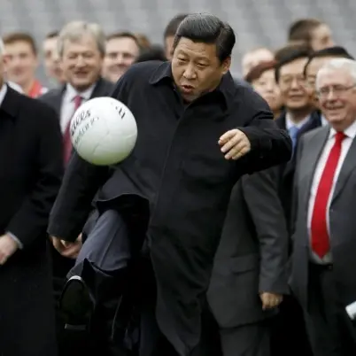
Nor is it a lack of will or investment. In 2015, China launched the 'World Cup 2050' project, reportedly initiated by Xi Jinping himself. By 2020 they wanted football to become the most popular sport in schools, with 20,000 academies, 70,000 pitches and 50 million players. They spent billions. China failed to qualify for the 2026 World Cup.
The problem lies in neither genetics nor effort.
Virtually all pro footballers have spent their entire childhood and youth in an academy.
US academies have the same infrastructure, coaches and training methods as the European ones, yet produce drastically inferior results.
That’s because the difference isn’t the academies, it's who enters them. Before joining, these boys have already spent thousands of hours playing football and been selected over millions of others. The most important developmental work has already happened.
The kids in European and South American academies are simply much better than those in the US or China before they ever set foot inside one.
But what about La Masia, the most prestigious football academy in history? Doesn’t it produce world-class players every generation?
World-class players come out of La Masia. But La Masia does not produce them. That distinction is everything.
Despite selecting the most talented children from millions and training them professionally for over a decade, their academy team plays in the fourth tier.
Those players went through identical training to the superstars that dominate the first tier!
How do the same methods produce a 17 year old who is the best player in the world and a 23 year old who can't make it in the third tier?
Because it’s not about the academy, it’s about the individual.
This isn’t about everyone reaching the top. Football’s competitive pyramid makes that impossible. It’s about whether the academies’ training methods are responsible for who does. And that's not the case.
Look: If 95% of La Masia graduates end up in the third tier, then third tier players ARE what La Masia produces.
And even claiming credit for third tier players is a stretch. These are the most talented young players in Spain, selected from millions. What would La Masia produce starting with average kids? We don’t know – because they’d never take them.
And that's the academies' most disgusting lie: when a player succeeds, they take the credit. When hundreds of others fail despite identical training, it's blamed on individual talent.
When a player like Yamal or Messi emerges, the narrative becomes “La Masia produces players like Yamal and Messi!” With the 99% who don't make it, it's “they just weren't good enough.”
The system can never be wrong. And more importantly to these hypocrites: they are never wrong.
Let’s look at La Masia's recruitment pool.
Barcelona’s urban area contains over 5 million people, making it one of Europe’s largest cities. By comparison, Switzerland’s capital Bern, home of BSC Young Boys, has just 450,000 people. That’s already a 10x population and talent filtering advantage.
But it extends much further. La Masia systematically recruits the best players from across Catalonia, which has over 8 million people. That’s almost as much as Switzerland and more than Uruguay and Croatia combined!
Pau Cubarsi, one of La Masia's biggest stars, was born and raised in Girona, 110 kilometers from Barcelona. He'd already proven his talent by joining Girona FC's academy at seven. At eleven, he left his hometown and his parents to live at La Masia.
Alejandro Balde and Dani Olmo are two other La Masia superstars who are actually from Barcelona, yet both started at rival Espanyol's academy before La Masia acquired them at eight and nine.
And that's just Catalonia. La Masia recruits from the entirety of Spain's 48 million people, competing for the best with other elite academies, especially Real Madrid.
Gavi, the 2022 Golden Boy, came from Sevilla, 830km away, farther than London to Geneva. He moved at eleven. Ansu Fati and Fermin Lopez are also from Sevilla, moving at ten and thirteen respectively.
It would seem absurd for a London academy to recruit ten-year-olds from Switzerland. Yet this is the elite academies’ standard operating procedure.
What do you think does this mean?
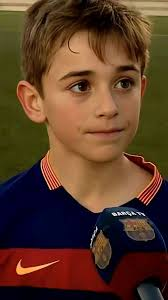 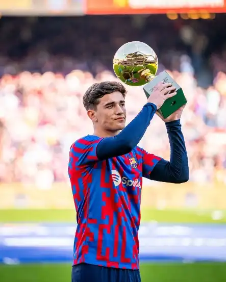
Iniesta grew up in Albacete, closer to Madrid than Barcelona. He joined La Masia at twelve.
Raul Asencio and Nico Paz are among Real Madrid's strongest academy players in years. Both grew up in the Canary Islands and moved over 1700km away at thirteen and eleven respectively to join Madrid's academy. The Canary Islands are Spanish territory, but it doesn't stop there.
Eman Kospo grew up in Aarau, Switzerland, playing for their academy until thirteen. He then moved to GC Zurich's superior academy and three years later, Barca took him from Zurich to La Masia. In 2025, they sold him to Fiorentina.
Aarau's first team plays in the second tier, often just missing promotion. Kospo was considered one of the biggest talents in Swiss football. He could have made Aarau millions and changed the club's history.
This is how the hierarchy works. Elite academies acquire the most talented kids from other academies through prestige and resources that smaller clubs simply can’t match. BSC YB cannot raid FC Basel or FC Zurich to acquire Switzerland’s best talent. There is one institution in Switzerland that can do that, it’s called the Swiss National Team.
Regular academies raid local amateur clubs. Elite academies raid other academies, nationally and beyond. Portugal produces world-class players from 10.5 million people. La Masia fishes from a pool five times larger and gets more credit.
Elite academies don’t produce great players. They collect them.
Pedri is also from the Canary Islands. Barcelona bought him for €5 million at sixteen, after he'd already played professionally for Las Palmas. Everyone agrees he isn't a La Masia product.
But Eman Kospo arrived at La Masia at exactly the same age. The only difference is that Pedri went straight to the first team while Kospo entered through the academy. So if Pedri had spent a couple of years in the youth teams first, he'd magically become a La Masia product?
If Barcelona had signed Pedri at thirteen instead of sixteen, he'd be labeled a La Masia product without question, just like Fermin Lopez, Marc Casado and Lionel Messi, who all joined at that age. But would those three years at La Masia instead of Las Palmas have made him a worse player? Of course not. He'd have developed into exactly the same player with a different label attached.
Busquets is considered one of La Masia's greatest ever products. He joined Barcelona at seventeen! At that age, Lamine Yamal was already the best player in the world. Yet Busquets gets the La Masia label and Pedri, who arrived a year earlier, doesn't.
Those labels are completely and absolutely arbitrary bullshit. They tell you which door a player entered through, nothing more.
So if Pedri isn't a La Masia product, is he a Las Palmas product? Then why don't Las Palmas produce more players like him?
Because he’s not anybody’s product. He’s just Pedri.
In 1998, when Messi was just 11, two operators of a Rosario academy, contacted Barcelona-based Argentine agent Horacio Gaggioli about an extraordinary young player. Initially hesitant due to Messi’s age and size, Gaggioli decided to wait until he was older before acting.
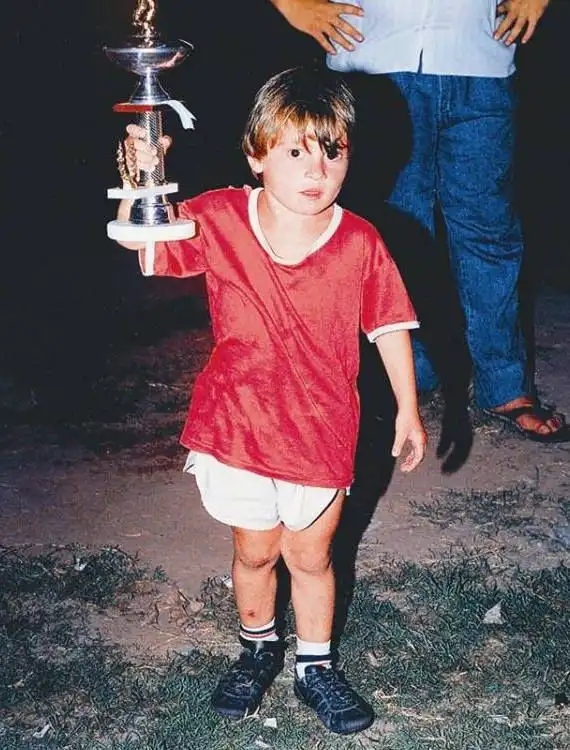
In February 2000, veteran Barcelona Agent Josep Minguella saw video footage of young Messi and said “I almost couldn’t believe it.” Minguella, who had previously worked on Barcelona’s signing of Diego Maradona, arranged for a trial.
In September 2000, the Messi family traveled to Barcelona for a two-week trial at La Masia. Barcelona’s technical director Carles Rexach recalled “It took me five minutes to realise that, unless something weird happened, he was going to be a top-class player.” He went to the coaches and said “Sign him. Don’t even think about it. And if anyone asks, tell them it’s my decision.”
The board of directors resisted. They didn’t understand why Barcelona was pursuing a child from Argentina when they faced potential bankruptcy. Club president Joan Gaspart said “Don’t bother me! He is only 13.”
Messi had a Growth Hormone Deficiency that would limit his adult height to just 143cm without treatment. The required daily hormone injections cost approximately $1,000 per month, which neither his family nor Argentine clubs were willing or able to shoulder.
Months went by and Messi’s father grew frustrated with Barcelona’s indecision. The expensive growth hormone treatment couldn’t wait. Messi’s father gave Barcelona an ultimatum: decide now or the family would look elsewhere.
That December, to prevent the Messi family from walking away, Rexach, Minguella and Gaggioli signed Messi’s contract on a restaurant napkin.
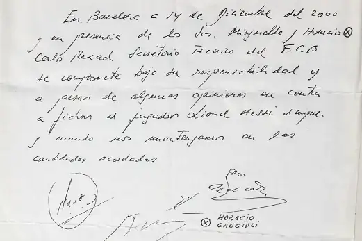
In February 2001, the entire family relocated 10,500 km away to Barcelona, with Messi’s parents abandoning their jobs. Barcelona provided Messi’s father employment as a scout for their academy and arranged housing near Camp Nou. The club agreed to fund Messi’s complete growth hormone treatment, which, incredibly, Barcelona’s director general Joan Lacueva initially paid from his own pocket.
Rexach later reflected “it was the best decision I ever made in my life.”
Barcelona's napkin contract with Messi was unusual. What wasn't unusual: doing everything possible to recruit little children from all over the world. That is standard operating procedure across every elite academy in the world.
International transfers of minors were so widespread and harmful that FIFA banned them in 2001, just months after Barcelona signed Messi.
FIFPro President Theo Van Seggelen stated: “People must realise that we are talking about kids playing football. We are not talking about business or professional football... a child’s life and happiness is worth more than a handful of money.”
In 2003 Sepp Blatter said European football clubs were engaging in ‘despicable’ behavior and “social and economic rape” in Africa and other developing areas. You know the situation is concerning when Sepp Blatter positions himself as a moral authority.
Elite clubs constantly violated Article 19, which cost them millions in finey and transfer bans for the first team. Among them were Barcelona, Real Madrid, Atletico Madrid, Chelsea, Manchester City.
Clubs did everything they could to circumvent Article 19 using extended “trials,” student visas, intermediary clubs, false parental relocation claims, and border loopholes. Each new FIFA regulation spawned more creative violations.
Real Madrid tried to sign 11-year old Julian Alvarez from Argentina, but couldn’t. He’s now one of the best players in the world.
When international transfers of under-12s surged, FIFA lowered the transfer certificate requirement to age 10, explicitly warning they’d go lower if clubs pursued even younger children. FIFPro’s Mads Øland said: “It does not solve any problems. Clubs and capital funds will just look for even younger talent.”
Barcelona executives signing a thirteen-year-old's contract on a napkin in a restaurant. Clubs violating FIFA regulations, accepting transfer bans and millions in fines. Scouts flying to every corner of the world for pre-teen children. Families uprooted across continents. Why this desperation for children?
The answer is simple: The elite academies are so incapable of developing talent internally that they must search the globe for children who already possess what they cannot create.
Every scout on a plane to South America is a white flag. What is it about filtering through millions of children that screams “development system” to you?
The very existence of global scouting networks is an admission of failure. What this says is: “We cannot create what we desperately need. We can only search for it and acquire it.”
This is why Barcelona moved heaven and earth for a little child from Argentina.
Because the player who is special at thirteen remains special and the one who is ordinary remains ordinary. And that’s despite thousands of hours of supposedly elite training afterwards. Arsene Wenger said technique doesn’t develop after 13 and the tragedy is that in this academy system – he’s right.
That’s why scouts can watch ten-year-olds play and predict who will become professional, they’re observing already-developed skills that academies cannot teach. When Max Dowman was 7 years old, Jamie Redknapp said about him “I have never seen a kid with that much quality in my life.”
Any academy can identify top talent, but only elite academies can consistently recruit it. Real Madrid’s first team is better than Crystal Palace's, not because of superior training methods but superior player acquisition. The same is true for their academy. The difference is that once they're adults, clubs have to pay market rate. Children are cheaper.
Elite clubs live or die by these acquisitions. Where would Barcelona be today if they hadn’t signed that 13-year-old from Argentina?
If FIFA hadn’t made it illegal, every prestigious European academy would constantly import kids from South America.
Without Article 19, Real Madrid wouldn’t have needed to pay €45 million for Franco Mastantuono. He’d have been in their academy since childhood.
The academies do not develop talent, they select and filter it. They depend entirely on the culture, streets and people they extract from. They don’t develop shit all.
They are nothing but literal parasites hiding behind their lying PR.
We established that the answer to the population-talent paradox must be training. But if it’s not the training happening inside the academies, what is it?
Academy and country success comes down to two variables: population and the football culture within it.
But culture is far more important — it’s the primary explanation behind the paradox. It determines everything that shapes a child’s football development after birth.
Take China: 10/10 for population (1.4 billion) but 1/10 for football culture. How many Chinese kids grow up playing football? Compare that to Croatia: 1/10 for population (3.9 million) but 10/10 for culture.
Lamine Yamal was born and raised in Barcelona and started playing football at four. At six, he moved to live at the academy. Unlike most other La Masia superstars, he is genuinely local.
Five million people, football as religion, infrastructure everywhere. Of course Barcelona produces players like Yamal." The same pattern repeats in Rosario, Rio, London, Paris, cities that consistently produce elite players.
The famous photo of Lamine being bathed by Messi as an infant isn't the coincidence everyone thinks it is.
People ask “What are the odds that the best player since Messi happened to meet Messi as a baby?”, but this misses the point.
The photo wasn’t taken randomly. His parents entered and won a lottery as part of a Barca charity shoot. His father was a passionate football fan who said, “When Lamine was born, the very first second I held him, I told him: you’re going to be the best player in the world.”
Lamine was never just a random infant — he was a child embedded in Barcelona’s football culture from the moment he was born.
That’s why Messi has so many photos with other pro footballers from when they were kids. When you grow up in that ecosystem, running into Messi isn’t a miracle.
Even Switzerland’s biggest talent Johan Manzambi has a baby picture with Swiss national team legend Philippe Senderos.
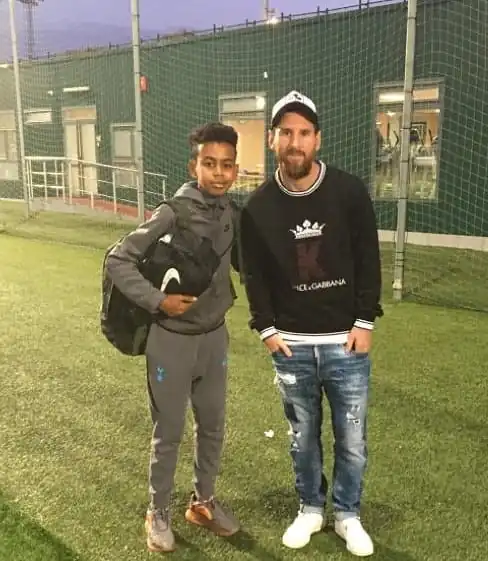 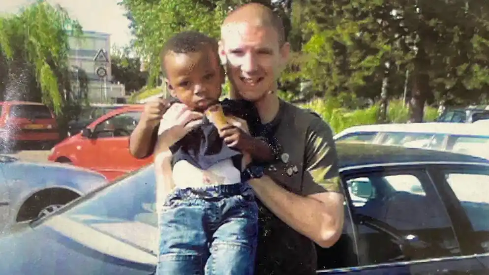
This isn't just about imported players. Whether La Masia develops local kids or imports them from elsewhere, the academy's training methods aren't the primary cause of what makes them great.
Many of the world’s best footballers come from completely random academies that can’t repeat that success. Pedri at Las Palmas, Bellingham at Birmingham, Mbappé at Monaco, Wirtz at Köln, Haaland at Bryne FC.
Why?
Because the academy doesn’t matter. The child does.
These players would have become elite at any other professional academy. If La Masia is what made Lamine great, why didn’t all the other six-year-olds in his cohort become world-class players?
Would Lamine Yamal have become just as good if he’d been born with the same genetics but raised in Los Angeles by a typical American family? Obviously not. He probably never would’ve even started playing football.
What if he had been born in Los Angeles but with his actual family? This would have made a significant difference. With a football-obsessed father declaring his destiny at birth, Lamine would've played from the moment he could walk and reached an academy at least.
What if his family had moved from Barcelona to Los Angeles when he was six, and instead of joining La Masia, he had entered LA Galaxy’s academy?
He might have developed into a world-class player, but I believe those early years in Barcelona — inside and outside La Masia — contained something Los Angeles and LA Galaxy simply couldn't replicate.
What would have happened if he had joined LA Galaxy at thirteen? At that point, it’s almost certain that he would have become the exact same Lamine Yamal we know today.
So why is La Masia so much stronger than other academies? It's because they sit at the intersection of massive population and football culture taken to its absolute extreme. If Catalonia were independent, its national team would be one of the best in the world. Their culture, their streets consistently produce world-class talents that would simply develop at other academies if La Masia didn’t exist. La Masia is like football’s Harvard.
If La Masia had the magical development formula, they’d franchise it like McDonald’s: La Masia Mumbai, La Masia Beijing. The population is there, even their governments are desperate for football success. They could build world-class infrastructure, hire top coaches and make billions. But they don’t. Because they need culture to do the work they can’t.
You can build La Masia in Miami but you can’t build Catalonian streets, people and culture.
The culture –> talent pipeline isn’t just true at the country (Croatia vs China) and city (Barcelona vs New York) level, it repeats at every scale. In Bern, the Breitenrain/Wyler neighborhood produces a disproportionate number of academy players for BSC Young Boys.
Terrassa (220k people) in Barcelona produced Xavi, Dani Olmo and other high-level footballers, enough to beat a combined India-China XI despite having less than 0.0001x the population.
It’s why the best players always have specific exotic names – Maradona, Ronaldo, Neymar, Putellas - and why we don’t have an elite footballer called “Jonas Meier” “Xing Huang” or “Ganesha Gupta”. It’s why the American Women’s team is so much better than the Men’s: Culture.
It even holds at the individual level. Even in football-successful countries, the player who succeeds is: a football-obsessed kid within a football family within a football neighborhood within a football country. When China or India produce their first ever world-class player, I guarantee it'll be like that.
Dro Fernandez is the most talented Philippine footballer of all time but of course he was born and raised in Spain.
Rodrygo should’ve been born on December 25 2000, but kids born later in the year were at a disadvantage because they’d need to compete against older players. So his dad told his mum “HOLD THAT KID! Just keep him in there for a few more days. For the love of god, don’t let him be born now.” Rodrygo is now one of the most talented players of the generation.
This is why it’s ridiculously common for footballers to have brothers and fathers who played professionally too. The Bellingham brothers, Haaland and his father, and Messi’s cousins are just three examples among thousands.
In one World Cup qualifier in 2021, four of Norway’s starting 11 were the sons of former international players. Three of legend Patrick Kluivert’s sons play at the top level of football.
At Atletico Madrid, Diego Simeone coaches his son Giuliano who is genuinely good. There are roughly 15 elite clubs globally, meaning 15 head coaching positions and around 150 starter positions at that level. From hundreds of millions of players and coaches worldwide, the probability of father and son both independently reaching elite club status is essentially zero. But it’s not coincidence, it’s culture transmission.
Luka Vušković is one of the biggest young talents in Europe right now. His father, grandfather, great-grandfather, brother, cousins and uncle – all pro footballers.
I see it at YB constantly. Brothers and twins both in the academy, raised by fathers who gave them football before they could walk.
There's even a study from my university showing that higher level players in Swiss football are much more likely to have brothers who also play.
The top players in Swiss football (National Team and Super League) are more than twice as likely to have football-playing brothers than semi-professional players. Keep in mind these are all people who spent their entire youth in professional academies.
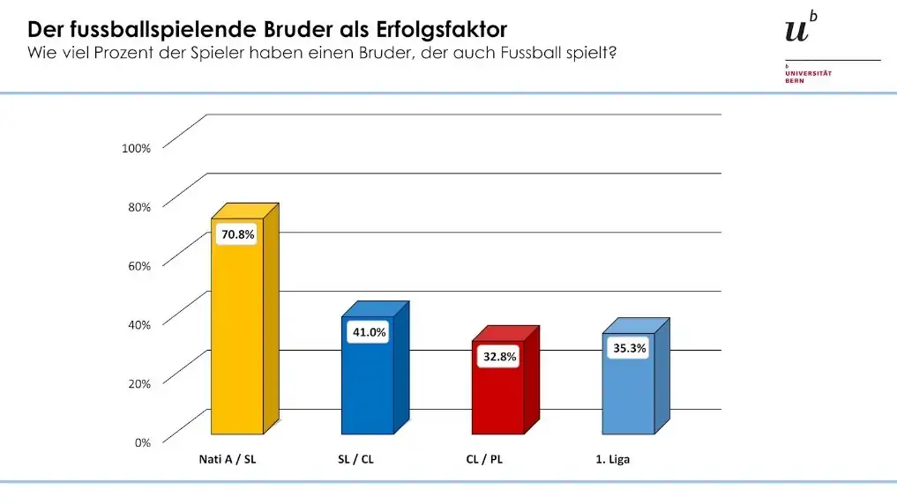
It also explains where the idea that “the younger brother is always the more talented one” comes from. It’s not genetic gifts, it’s a better nest.
It’s also why a disproportionate number of European academy and national team players have immigrant backgrounds. In most Swiss families, football is one activity among many: skiing, music lessons. Parents prioritize education.
For many immigrant families, football is the dream, the family’s hoped-for economic lifeline. Dad played back home but didn’t make it.
One of my first coach's daughter plays for the Swiss national team. We used to play football together after school. She's friends with Alisha Lehmann. Lehmann played with and against guys I knew, and grew up in a town right next to where I'm writing this.
La Masia likely develops talent better than BSC Young Boys, though not necessarily through superior training methods. The difference is better facilities, teammates and more training hours. Most significantly, La Masia begins at U6 while YB starts properly at U12. Those additional six years matter because although academy training isn't effective, it is still highly superior to the amateur alternative.
Could the next Messi emerge from Bern and BSC Young Boys? Yes, but only under extremely exceptional circumstances. The probability is much lower than in Barcelona, São Paulo or London. It's no coincidence that three of the biggest talents right now — Lamine Yamal, Max Dowman and Estêvão — come from precisely these cities.
Should academies at least get credit for scouting? Not really. This is Messi at five and eight years old. Your grandmother could’ve scouted him.
Population and football culture explain La Masia's success more completely than their training methods ever could. The academy is only as good as the pool it selects from.
La Masia is performing exactly as expected.
“Coaching courses are still much too theoretical, and this is what you see reflected in the basic technical skills of the average player. I even see things deteriorating.”
— Johan Cruyff
Without the academies, professional football couldn’t exist. But they are not the core drivers behind what makes a player. What they actually do:
Tactical Ability: This might surprise you. In such a critique, you’d naturally expect the tactical and theoretical aspects to be my main target. But it’s the opposite. It’s what they do best by far.
There's a specific way professional football is played that goes beyond simply doing things better than amateurs. Higher-level players fundamentally play the game differently. Look at how different pro football looks compared to amateur football, it has a completely different character.
The key differentiators are speed of play and vision. Others are precise and efficient (!) technical play, clean and directional first touches and patient, risk-reward based decision-making.
It’s a kind of football hygiene that fundamentally separates high-level football from amateur kickabouts. Every high-level player reading this will know exactly what I mean. And it’s what the academies successfully teach.
Academies teach the language of professional football. They take kids who are already extraordinary at kicking a ball and show them how to use those abilities within the framework of high-level football.
An academy will teach a player how to play the game correctly to the extent of the ability he has. But it won’t develop his abilities themselves.
This is why the unimaginative cowards use the term “talented” so frequently. They’ve given up on the idea that fundamental ability can be developed. If academies could develop fundamental ability, we wouldn’t need to constantly distinguish between “talented” and “not talented” players. We’d just have “well-trained” and “poorly-trained” ones, which is closer to the truth.
The level of play at the university training sessions I led is extremely low, around 8th tier. It takes me seconds to tell when someone shows up that has been through an academy or even just decent-level club-football. To play high-level football you need so many small habits and conventions that amateurs just never develop.
These behaviors aren't only taught in academies, they’re absorbed naturally. Everyone plays this way and you must adapt. Don’t and you’re out. Every single time I play with amateurs I constantly think: “If he did that at the academy, he’d be murdered.”
This is why high-level players find playing with amateurs so frustrating. You’re trying to coordinate with people who speak an entirely different language. Meaningful interaction literally becomes impossible. It’s genuinely sickening and another reason why I’m glad I’m dead.
The most important thing academies provide is the environment. Especially being surrounded by other high-level players.
You might expect someone demanding a revolution in the academies to claim their coaches have no idea how football works. But that was never the problem. Football isn’t rocket science. Many of their coaches have a genuinely excellent understanding of the sport. And they still can’t develop for it.
Those are two completely different things. Academies can teach you how professional football is played, but they could never teach you to be Vitinha. They know the destination but have no idea how to get there.
This is a tragedy.
Technical Education: Academies do a somewhat okay job at developing basic technical ability.
The half-turn and inside pass are the two most common techniques in football and players reach a decent level on them not only through training, but through constant repetition.
They also develop various first touches – sole, inside, directional. They could do a much better job, but I’m glad it’s done at all.
The Mid-Foot Long-Pass. They teach it and players usually learn it reasonably well.
These two are the techniques you’ll only really learn well if you’ve been through an academy.
Why these specifically? Because they're graspable. The mid-foot long pass especially is perfect textbook material. The first touches are similar and they’re also simply essential at high-level football.
When it comes to technical ability in general, academy training will at least maintain it, but not improve it systematically.
What you can clearly tell with academy players, is that they've been technically and tactically educated. Key signs: calmness on the ball, efficient sole moves, and better executed, more advanced first touches.
That’s not development, that’s education. And the difference between the two cannot be emphasized enough.
I'm not saying kids don't improve after joining the academy. Of course they do. But not systematically beyond the potential they already had when they arrived.
Talent Selection: There’s an entire industry centered around it. This phenomenon at this scale is unique to football.
Academies are simultaneously very effective and absolutely awful at it.
99.99% of non-academy players wouldn't stand a chance in the academy. Academy kids are incomparably better than amateur kids. This is because they were selected for having the highest initial skill level to begin with, and then received far more and better training in a far more stimulating environment.
Mistakes happen, perfect selection isn’t possible. But edge cases don't matter as long as they identify the real stars.
I've seen decisions about guys I knew at BSC YB and FC Thun that I completely disagreed with. But still: the academies usually select successfully. It isn’t exactly rocket science though.
At fifteen I was coaching eight and nine year olds at my local club FC Muri-Gümligen. I could instantly spot the two most talented kids. One stood out so much it blew my mind. I told people: if this kid doesn't make YB's elite selections, I'm losing faith in football. He’s now 17, plays for YB at U19 and played for the Swiss youth national team.
The other made the regional selection but not the elite one. His little brother made the elite selection though and I hear he’s very talented. Their father is YB’s sporting director and a Swiss national team legend. In high school I interviewed him once. He told me what it was like to play against Zidane.
But selection also fails. Spectacularly, repeatedly, and with consequences that destroy careers.
The amateur-to-academy selection is arguably more accurate than the academy-to-professional selection because the gap between amateur and academy football is more fundamental. At the professional level, the margins are smaller and the variables more complex.
A second Bundesliga player once claimed Ronaldo wouldn’t excel in his team while his teammates would swim along at Real Madrid. It’s an exaggeration and obviously not true, but he has a point.
Raphinha, long-time favorite for the 2025 Ballon d’Or: "At 18, I had been rejected by the academies more times than I could bother to count."
Then there’s Rodri. Ballon d’Or winner 2024. Arguably the greatest number six in football history. Deselected from Atletico’s academy at seventeen! He said: "I called my father crying, telling him it was all over and that I had invested my life to get here and I had the feeling that this was it."
They nearly destroyed one of the greatest players ever born. They trained him full time, watched him play six times a week, and still got it catastrophically wrong. There are no excuses. It’s genuinely incomprehensible.
Luis Diaz, never even attended an academy. At 18, he wasn’t even signed to a club at all.
Olise, Eze, Mahrez – the list of top-level players released by academies never ends. The excuses about non-linear development or mistakes being part of the game simply don't apply here. These are some of the best players in the world who weren't deemed good enough (for the academy!) by “elite” scouts and coaches whose entire job is assessing football potential. It's surreal.
If you can barely spot talent, how could you create it?
It's genuinely heartbreaking to think about the players football lost because some idiot made a decision.
In summary, academies select talent, give basic education and teach the necessary conventions of professional football.
They create robots but the beautiful game needs artists.
“I trained 3-4 hours a week at Ajax when I was little but played 3-4 hours everyday on the street. So where do you think I learnt football?” — Johan Cruyff
In the early 1990s, Cruyff took over Barcelona when the club was in crisis and transformed it into a top-club. He made the academy prioritize technical ability over physical attributes in both recruitment and training. This wasn't how things were done. Journalist Graham Hunter said: "Without him, Lionel Messi at 13 would have had to return home disappointed.”
Cruyff's vision for La Masia was to recreate the conditions of street football. It worked. From 1979 to 2009, 440 youngsters lived at La Masia. 40 made it to Barcelona's first team. That’s a 9.1% success rate, far exceeding industry standards. Iniesta, Busquets, Xavi — Barcelona's and Spain's entire golden generation emerged from this. They dominated world football. Academies worldwide started adopting the philosophy.
Premier League academies deselect 99.5% of their recruits before they reach the first team. Researchers compared academy graduates who got contracts at sixteen with those who didn't. Both groups had spent identical hours in formal academy training.
The players offered contracts had spent nearly twice as much time playing informal football outside their academy hours. That was the only significant difference between the groups.
Researchers compared the German 2014 World Cup-winning squad with two other groups: Bundesliga players who didn't make the national team, and players from the fourth to sixth tiers.
The World Cup winners had actually played less formal football than both groups up to age 22. But during their teenage years they had played significantly more unstructured football. Words cannot describe how shocking this result is.
South London has one of the strongest street football cultures in the world. In the 2016 Premier League season, 14% of all English players — one in seven — came from a single 10-mile (!) area in South London.
Paris tells the same story. Eight of France's 23-man squad that won the 2018 World Cup grew up in the city's suburbs. Zinedine Zidane said: "Everything I have achieved in football is due to playing in the streets with my friends."
Study after study confirms what logic already tells us: when players receive identical academy training but achieve vastly different outcomes, the difference must come from outside the academy.
Hours of informal play and having an older sibling in the same sport have consistently proven more important than hours of formal training. Chloe Kelly has five older brothers who play football, grew up in the 5v5 cages of London, and says it's what made her one of the best players in women's football. Even Lamine credits street football for much of his development. Just watch how he plays, that's not taught in any academy in the world.
Informal play goes way beyond street football. It's everything that happens outside team training: 1v1 against your brother, your neighbor teaching you how to shoot in the garden, messing around with a ball with friends, and especially training by yourself. That's when you copy moves from YouTube, figure things out alone and push to get better.
Informal play is often more effective than academy training for three reasons: far more touches of the ball, conditions that naturally create progressive overload, and it happens at the age when the most crucial technical development occurs.
This is why the answer to the population-talent paradox is culture. Culture leads to: more fields, clubs and coaches, more passionate families and friends, more money flowing into the sport, better academies. All of this means kids play more football — formal and informal — at higher quality.
But it's the informal play that creates the more “talented” kids. These are the kids who become the superior raw material entering the academies, which then produce better professionals and stronger national teams.
By the time kids reach their teenage years they've already logged thousands of hours of informal play, with compound effects. It doesn't just make them better at ten — because you're using better technique, all subsequent practice becomes more effective. It creates a superior foundation, a different relationship with the ball.
Consider dribbling: if you're exceptional at it, you'll constantly dribble and improve even more. If you're poor at it, you'll avoid it and the gap widens.
The elite academies' technical training ultimately amounts to drills. Endless shooting and passing exercises, small-sided games, rondos, and the overly theoretical nonsense the coaches learned in their courses. This cannot create a Neymar.
Nevertheless, the ideal scenario is still to enter an elite academy as early as possible. But it’s not because they have some magical development formula, but because they provide maximum hours of football from the earliest age, professional facilities, basic education and coaching, high-level teammates and some simulation of informal play.
In other words: a car is better than a bicycle. But we could build a plane.
Street football is literally just kids kicking a ball around. Random, unoptimized, dependent on everything accidentally going right. What if we designed a system that replicates what works and optimizes it? If cultural accidents can create all these elite players already, imagine what systemized science could!
I'm not saying street football good, academies bad. I'm saying we can do better than both. We don't need a cultural revolution. If we truly understand how football excellence develops, we can do it ourselves.
The World’s Game
In the US or China, kids start football at eight with two or three hours of formal practice per week, sharing field, balls and players with twenty others. How do you expect this to produce a Lamine Yamal? Brazilian kids get ten to twenty hours per week informally, starting as toddlers.
To create a world-class player, a child needs complete football immersion from the moment he can walk. The US has 340 million people and Uruguay only 3.4 million — but more kids in Uruguay grow up completely immersed in football from early childhood. I guarantee it.
You are more than 100,000 times more likely to become an elite footballer if you're born in South London than in India or China. This isn't natural. It's manufactured. The system keeps writing off billions of potential footballers at birth because it has no idea how to develop talent.
European kids get thousands of hours of play, pitches everywhere, clubs in every town, football-obsessed families. Indian kids get nothing. And then the academies take the credit. It's a disgrace.
How can we call football the world's game when your postal code and family determine everything about your chances at elite football?
But if culture is the answer, how do we bring elite football to the majority of the world that lacks it? You can't make suburban America or rural China suddenly have kids playing street football twenty hours a week like in the Brazilian favelas. But why would we need to?
In 2026, the best method we have for developing elite footballers is to hope and pray they grew up in the right environment? Wow, congratulations! Instead of waiting for every neighborhood in America to play football, how about the academies just do their fucking job?
The original vision was for football to be the world’s game. They could never do it.
The real elite academies aren’t the prideful frauds in the big buildings. They’re the favelas of South America and the streets of Europe.
There are four factors that determine football ability:
Tactical: Decision-making
Physical: Body Capabilities
Mental: Psychological Management
Technical: Sport-specific motor skills
How would you rank them in order of importance? The criteria: which factors make the biggest difference on the pitch in professional football in the long run.
The correct ranking: 1) Technical 2) Physical 3) Tactical 4) Mental
| Not Differentiating | Differentiating | |
|---|---|---|
| Intrinsic to Football | Tactics | Technique ⭐ |
| Not Intrinsic to Football | Mentality | Physique |
Mental: Mentality is like cardiovascular fitness. You can't compete without it, but it doesn't make the difference.
All pros give their best. What differentiates them isn't how hard they try — it's how good their best is. Mentality won't help you pass a science exam without the knowledge to pass. It can't overcome not having the ability.
Real Madrid doesn't beat a semi-pro team because of superior mentality. Mentality can't pass, dribble and score goals. You can't will yourself to be a better player. Many of the greatest players of all time were known to have a poor mentality.
Confidence is essential. Nothing destroys your game like a lack of confidence. It's the most important mental factor and can be a genuine differentiator. But confidence is largely a product of actual ability and success. Would you not be confident if you had Olise’s abilities?
Mentality is more important off the field – discipline, lifestyle, recovery. On the field, all you can do is give your best. As long as you don't have severe confidence or anxiety issues, the other three factors will matter more.
Claiming mentality is a main differentiator at the top level is an insult to the difficulty of this sport. Football is so much more than wanting and believing.
Tactical: Tactical ability is the most misunderstood factor in football. What people call superior decision-making is often just superior technical ability in disguise.
Technical and tactical ability can't be separated because technique doesn't just execute decisions — it determines which decisions are even possible. A player with superior technique has a completely different, superior set of choices available to them.
Toni Kroos is a prime example. People praise his vision and intelligence, and yes, he understands the game brilliantly. But Kroos is one of the technically strongest players in history. When he takes a perfect first touch with his weak foot, away from pressure at exactly the right angle and pace while simultaneously scanning the field, then delivers a sharp forward pass — this isn't decision-making. That decision only exists because Kroos has the technique to make it real.
As technical ability increases, it creates the illusion of tactical superiority. The most technical players consistently get labeled the smartest, the best decision-makers. But they're not choosing better, they're executing better solutions their technical ability makes possible. Poor decisions are often not decisions at all. They're the best option available given poor technical tools. Playing football is not intellectual.
Vision works the same way. All players have functioning eyesight. Superior vision is just being comfortable enough with the ball that controlling it requires no conscious attention, freeing you to scan — and having the actual ability to execute what you see. Both are technique, not decision-making.
Developing tactical ability happens naturally through immersion in high-level football and coaching in the academy.
Imagine a guy called Josh Robinson with zero football ability and knowledge. Now give him Messi's technical and physical abilities but keep his original tactical understanding and mentality. Messi's body, dribbling, passing — Josh's brain. How long before Pep starts him at City? Weeks, maybe a couple of months. Josh Messi would need intensive tactical coaching and match experience, but with daily training he'd quickly learn to use his extraordinary abilities.
Now consider the opposite: Lionel Robinson. Messi's complete tactical understanding and mentality, Josh's physical and technical abilities. When does he start for City? Never. Long term, Josh Messi becomes the best player in the world. Lionel Robinson doesn't make it in amateur leagues.
There are two types of tactical ability. Pure decision-making: do I run here or there, pass or dribble. And tactical-technical ability: knowing which first touch to take, when to use which skill, how to move the ball with your sole to open passing angles. Knowing how to play football correctly from a technical perspective.
Tactical-technical ability is more important and it’s completely tied to technique. You can’t know what moves to use how and when if you can’t do the move.
Decision-making is real and it matters a lot. But it's the third most important factor.
Technical and Physical: Imagine four dials representing each factor. In most professionals, the tactical and mental dials sit at or near 100%. They give their best and they know how to play football. For technique and physique, 100% is beyond what even the greatest players have ever reached. Every incremental improvement always makes a meaningful difference.
For professional standards, Vinicius has poor mentality and poor decision-making. He's still one of the best players in the world. Messi is the greatest ever because he has the strongest combination of technical and physical ability in history.
Speed of play is why technical and physical ability matters most. Football ability is almost perfectly equal to how fast a player can execute football actions accurately. Technique determines how fast you can move the ball. Physique determines how fast you can move your body. Both directly determine speed of play, but technique dominates, because as Pep once said: “Nobody is faster than the ball.”
Speed of play is explored in much greater detail later. Everything leads back to it.
Everything else might help you execute better, but technique is the execution of football itself. It's by far the hardest factor to develop and the reason elite athletes from other sports could never compete in football.
Academies produce endless fit, tactically disciplined, mentally strong players who never make it because they lack the technical differentiation.
Give 1000 academy kids Pedri's technical ability and long-term you'd get 1000 players approximately on his level. You can be completely average physically and still be one of the best players in the world.
Physique is a multiplier. Kyle Walker would have had a career at a significantly lower level with average athleticism. If Pedri was world class physically, he might be the best player in the world.
Consider this: where would your favorite players be if their strong foot was only as good as their weak foot? Robben and Di Maria would go from world-class to amateurs. That's by changing just their technical ability while everything else stays constant.
Technique is by far the most important attribute in football.
Physical and technical ability are your actual hard skills. Tactical and mental are about deploying those skills effectively. You can't deploy what you don't have — but if you have the skills, learning to deploy them isn't sorcery.
Below the professional level, tactics and mentality are still massive differentiators. But up here, everyone already has them.
Football culture is obsessed with wanting it more and "reading the game" because it's more romantic. That's a children's story you tell yourself because you don't understand this sport. But football isn't a Disney movie, it's the real world boys. Grow up.
“I don’t believe there is such a thing as a ‘born’ football player. Perhaps you are born with certain skills and talents, but quite frankly it seems impossible to me that one is actually born to be an elite footballer” – Pelé
Ability is determined by the four factors. But what determines them?
Ability = Genetics × Training
Genetics represents your biological starting point. Training is everything that happens after birth.
Genetics
All four factors are influenced by genetics to some degree: physique (speed, strength, agility), technique (coordination, learning rate), decision-making (pattern recognition, spatial intelligence) and mentality (drive, competitiveness). Genetics are a multiplier — they make you better from the same training.
What makes football different from basketball, swimming or sprinting: genetic advantages aren't essential. The paramount factor — technical ability — is purely learned neural architecture. Physical pathways in the brain built through repetition. You cannot be born with them.
There are genes for height, but no genes for football technique. "Natural ability" at football doesn't exist, just as there's no natural ability at speaking English. Certain genetic traits help you learn faster or better. But without actually learning, your ability is zero. Even with perfect genetics, no training means no ability. If Messi had grown up on a Swiss farm and never touched a football, he wouldn't make Sunday League.
Because the core skill is entirely learnable, everything after birth matters more than what you're born with. This is why culture determines ability.
Genetics matter most for athleticism and early development. Early success leads to more enjoyment, more practice, more development. But even here, the genetic advantage works through training.
Despite being the most competitive sport in the world, football is one of the only ones where elite performance is genuinely reachable for a relatively average person. You don't need to be unusually tall or unusually fast. Just unusually good at football itself. At football. Your success comes from what you've built, not your DNA. That's actually romantic.
Even if genetics were essential, academies select the most gifted kids anyway. That would standardize the genetic baseline and make training the differentiator again.
If the academies truly believed genetics are key and that they can develop technique, they'd select athletic monsters and transform them into technical masters. Walker's athleticism, Iniesta's technique, mass produced R9s.
But they don't. They hunt for kids who already have technique and accept poor athletes if necessary. Why? Because they know technique matters most – and that they can't develop it.
Training
Ability = Genetics × Training
But training isn't one thing:
Training = Effort × Effectiveness
Effort = Time × Intensity
Effectiveness = Specificity × Quality
Specificity: how much of what you're practicing actually improves 11v11 performance. Quality: how effectively you're practicing it.
To produce the best possible footballer, every factor needs to be maximized. If any one fails, the others can't compensate. As the greatest ever, Messi must have maximized this equation better than anyone in history.
Time and intensity are the minimum requirement, not the differentiator. Millions of kids train enough hours to qualify for elite football. Almost none make it, because most of those hours aren't actually improving them.
If you spend 20 hours learning to make burgers at McDonald's and then 2,000 hours repeating that process, you haven't had 2,000 hours of practice. You've had 20 hours of learning and 2,000 of maintenance. Hours alone don't create expertise. The quality of practice does.
You can accumulate 20,000 hours and not be elite. Or 1,000 to 2,000 hours of maximally effective practice and be world class.
“I am always doing that which I cannot do, in order that I may learn how to do it.” — Pablo Picasso
Neuroplasticity
Your muscles execute football techniques. Your brain controls every muscle movement. Learning any skill — math, language, football — means building neural pathways in your brain.
When you first try an inside pass, your brain doesn't know how to do it. There's no established route for the electrical signals to travel from "I want to pass" to your muscles actually passing. Your brain has to figure out which muscles to activate, in what order, with what timing.
Each repetition builds this pathway. At first it's like walking through an overgrown forest: slow and inefficient. But every quality repetition clears and widens the path. Your brain literally wraps these pathways in a fatty substance called myelin, which makes signals travel faster. What starts as a forest trail can become a superhighway. The stronger the pathway, the more automatic, faster and accurate the movement becomes.
When Messi scores a free kick from 30 meters it looks magical. It isn't. There are thickly myelinated neural pathways in his brain that make it possible.
In 2014, Japanese neuroscientists scanned Neymar's brain while he performed simple ankle rotations. Neymar showed less neural activity than lower-level professionals, who showed less than amateurs. Compared to the amateurs, Neymar used less than 10% of the neural activity for identical movements. His pathways had become so developed that what requires conscious effort for amateurs happens automatically for him.
Plasticity is your brain's ability to form and strengthen these pathways. But this only happens through quality repetitions with progressive overload, a concept from strength training equally relevant for motor learning. The principle is simple: gradually master increasing difficulties. Start bench pressing 20kg, work up to 30kg.
Someone learning to juggle with their hands naturally engages in progressive overload. Two balls, then three, then four — researching technique, experimenting, adjusting. This systematic building toward a goal is completely absent in football.
Progressive overload is how humans improve at literally anything. But the academies… just… don’t do it.
Motor Learning Complexity (MLC)
Definition: The difficulty of mastering a motor skill, measured by the neural development required.
Different technical moves require different amounts of neural pathway formation. Learning to juggle two balls might take a few hours of effective practice. Juggling six balls requires hundreds of hours.
Football's motor learning complexity is only moderate. With genuinely effective practice, world-class technique can be developed in 1,000 to 2,000 hours. Countless professionals have spent more than 10,000 hours training and never got there.
Neural Proximity (NP)
Definition: The degree of neural overlap between different motor skills.
MLC and NP aren't established scientific terms, they're concepts I've named.
Motor skills aren't stored as isolated pathways. They exist as overlapping networks where different movements share the same neural infrastructure. When you learn a stepover, you're building pathways that physically overlap with those needed for roulettes or feints — the same neurons for coordination, balance and spatial awareness. Only the specific movement pattern differs.
That's why skills transfer. The higher the neural proximity between two techniques, the more learning one accelerates learning the other. Juggling improves your first touch: high proximity. Swimming doesn't improve your passing: low proximity. Like a mathematician absorbing new concepts quickly because he already knows so many adjacent ones.
It follows that mastering harder techniques improves easier related ones. Advanced dribbling has a much higher MLC than basic first touches, and the proximity between them is high. Master dribbling and first touch mastery follows naturally — the fundamental neural architecture is already built. Like calculus making arithmetic trivial.
This is why the best technical players solve situations they've never encountered using technique they've never consciously practiced. Master a language and you can form sentences you've never spoken before, because you've mastered the building blocks. Football works the same way.
Getting better at one part of football technique makes you better at all of it. Elite players can always do extraordinary things with a ball that have nothing to do with their position or role. It comes from being generally good at manipulating the ball — at football itself. 1 2 3 4
Mastering various high-MLC moves builds a comprehensive neural library that activates every time you touch the ball in a match. A freestyler who's never practiced the long pass could learn it more easily than someone who's never played football. If Kroos wanted to learn stepovers, it'd be the easiest thing in the world for him.
It's why Messi can simultaneously be the best dribbler, passer and free kick taker. It's why academies should teach goalkeepers roulettes, stepovers and around-the-worlds. Not because they'll use them in matches, but because the neural proximity is high enough to improve their general ball manipulation.
There are boundaries. Advanced freestyle moves are exponentially harder and the neural pathways become too specialized to transfer to anything a goalkeeper or outfield player actually does.
Two training principles follow directly from this:
Variance: Players need exposure to the widest possible range of technical situations. Football is infinitely variable, you can't predict every scenario, so you must build the neural flexibility to handle anything.
Progressive MLC Development: Once basics are mastered, continuing to practice them violates progressive overload. Players must constantly advance to higher complexity movements or development stops.
Why don't players improve over their careers? More precisely, why do they barely improve after 13, except through natural physical development? Pro players train more than 500 hours per year. Over a career from 18 to 33, that's over 7,500 hours. Yet, the fundamental ability a player has at 18 is the same at 33.
This is NOT because of some predetermined “talent ceiling.” It’s because professional training doesn’t develop players. It maintains them.
Nowhere is this failure more obvious than weak foot ability. An 18-year-old joins the first team notorious for his awful weak foot and retires at 36 having not improved it a single bit. Because professional training doesn't improve it, it only maintains the differences established in childhood. This is why some players are ambidextrous and others can barely pass ten yards with their weak foot, despite going through the same academies with the same training methods.
If your buddy spent two hours a day at the gym for fifteen years, only to look and perform exactly the same afterwards, you'd ask him "what the fuck are you even doing in there?" In football this stagnation isn't just accepted, it's completely unquestioned.
How can you call yourself a development system when your players retire with the same limitations they had as teenagers?
How come Messi at 13 has better technical ability than virtually all 30-year-old professionals, despite having practiced thousands of hours less?
Twenty years of supposedly elite coaching and nothing fundamental changes.
Why are you not ashamed?
“I have never witnessed a full team make its debut from an academy. It is always the individual player who arrives at the professional level. Therefore, it is logical, even necessary that the priority in development and education be placed on the individual, not the collective.” — Marcelo Bielsa
Team training barely improves fundamental ability because it isn't based on progressive overload. You practice shooting, passing, first touches, but there's no systematic progression. Players just maintain their current level through repetition.
Team training is inherently standardized. Everyone does the same exercises at the same time. The execution differs, but that's due to pre-existing differences. When millions follow the same program, the only variables left for differentiation are genetics and pre-academy development. That's why an academy kid's future is essentially sealed when they enter. Again: sorting mechanisms, not development institutions.
Football is a team sport but teams are made up of individuals. The best clubs have the best individuals.
Individual practice addresses your specific needs. All players have different strengths, weaknesses, bodies, positions. Why the hell would you train them all the same way? That's like everyone at the gym lifting the same weight.
It also means exponentially more touches of the ball. In team practice you spend most of your time running without the ball, waiting for it, executing basic first touches and passes. How much on-ball time do you really get? How many strikes at optimal difficulty to actually improve? Barely any. If there was a global ranking of football-specific touches before age 16, Lamine Yamal would rank near the top.
Most players in lower amateur leagues have spent their entire lives in club football and it's genuinely incredible how bad they are.
Individual practice is also naturally based on progressive overload. Working alone on a skill, you push boundaries instinctively and focus entirely on specific improvement. You can't learn stepovers or roulettes in team training. Not just from lack of repetitions, but because you'll disrupt training every time you fail. The pressure is always to execute what you can already do reliably.
When players do work individually, that's exactly when they improve most. Ronaldo trained his weak foot, dribbling and skills alone at Sporting and United. It's what made him one of the best ever. Vinicius transformed his finishing. Messi his free kicks. If Robben had systematically trained his weak foot daily, he'd have transformed it within months.
Vicky Lopez, arguably the biggest talent in women's football, said: "When I was little I watched Neymar a lot. Then I used to go to the playground and try to imitate him."
And you can tell. I watched her in person at the Euros 2024 in Switzerland and within seconds told my friends she was abnormally good.
Under-12 prodigies like David Sanchez, Hugo Galdeano, Pedrito Juarez do things top pro’s can’t. Their ability cannot come from standardized team practice, it’s the result of systematic training from birth. The Polgar sisters in chess, Rodrygo and Lamine in football. Train a child systematically from birth and the results are unsurprising.
Am I suggesting 25 players train in complete isolation every day? No. I'm suggesting 25 players mostly train together, but each focused on their own development. Even on a single pitch, individualized development would be far more effective than what we have now.
Endless high-quality informal play combined with elite academy training from early childhood can create an elite footballer — but only with a perfect storm of circumstances. The right family, neighborhood, academy access. Everything must align. This combination happens for the fewest children worldwide. It's what created today's superstars.
That's the problem. We're depending on a cultural lottery rather than systematic design. The system that created Neymar can't be replicated because it wasn't a system at all.
Street football is random. You'll never master long passes from kickabouts. No technical instruction, no systematic progression, no proper equipment.
Individual practice is informal play turned into science. It takes what works about street football and optimizes the shit out of it. Systematic progression, unlimited repetitions, technical instruction, maximum focus, freedom to fail, joy of improvement.
Sounds too good to be true? It is. Making individual practice effective requires deep expertise in both football and practice theory that has never existed before. Getting it right is extraordinarily difficult. That's exactly why nobody has done it.
It is time to go from superstition to method. From manufacturing failure to manufacturing greatness. From the elite academies' ignorance to the Theory of Football.
Every single player in the history of football has dribbled wrong. Except one.
“The most brilliant thing about Messi is how often he touches the ball in the span of one, two meters. When you touch the ball one or two times, he’s able to take four touches, which gives him four chances to change direction. So you’re always behind.” — Johan Cruyff on Lionel Messi.
Dribbling is the defining quality of every great player. Everyone uses the wrong technique. The better the footballer, the closer they are to doing it right. Messi was the closest.
Just look at how Messi dribbles and compare it to anyone else. It looks so different, even your grandma could spot it. With shooting and passing, Messi uses essentially the same technique as other players, just with superior execution. With dribbling, he's doing something categorically different.
Technique — on-ball ability — breaks down into two categories:
1) Ball-Handling
2) Striking
Striking: All ball contact intended to propel the ball away from the player — passing and shooting.
Ball-Handling: Any interaction with the ball that isn't striking. Comprises First Touches, Skills and Dribbling.
First Touch: The initial contact after receiving the ball.
Skills: Moves using the sole of the foot, feints and other specific technical combinations.
Dribbling: The technical ability to take Dribbling Touches.
Dribbling Touch: Any touch along the ground that moves the ball through space that isn’t a skill or a first touch.
Technique is the lifecycle of possession. First touch begins it, dribbling and skills continue it, striking ends it. Receive, carry, release.
Ball-Handling is your general ability with the ball at your feet. Yamal, Rodri and Pedri are among the best at it.
Dribbling is most commonly associated with longer sequences of touches — 1v1 situations, ball carrying, escaping the press. But it's much more than that. When Kroos takes one perfectly weighted touch to his right to set up a long pass, that is a Dribbling Touch. Every touch counts, even single ones.
A footballer's ability is determined by speed of play, which is mostly determined by technique. But what is the paramount factor within technique? What truly sets footballers apart?
Ball-Handling. Especially Dribbling.
Dribbling has the highest MLC of all technique in football — on average, because any technique can be scaled to extreme difficulty depending on the situation. The half-turn is one of the easiest moves in football. Executed at full sprint while receiving a poorly placed ball and scanning the field? It becomes extremely difficult.
If you look at what an elite footballer does technically in a game, the majority of first touches, passes and shots could have been executed by semi-pros. This isn't the case for Dribbling Touches.
The majority of football IS basic first touches and passes and that's precisely the point. The part that isn't is what makes the difference. Did you really think the revolution in technical football would come from half-turns and inside passes?
And since advanced Ball-Handling has the highest MLC, those first touches and passes become trivial. Even the idea of a genuine top-tier dribbler being bad at first touches is ridiculous.
In early academy selections, scouts essentially just pick the best dribblers. There's no passing game in childhood amateur football anyway. The ones who stand out are the ones who can get past players because they’re good with the ball. This is true even for defenders. That's why many top defenders started as attackers but not the other way around. It's why Ronaldo could transform from a 1v1 winger to a goalscoring centre forward.
But the main reason is dribbling's fundamental importance to how football is actually played.
Dribbling Touches serve two purposes: setting up passes and shots — any strike that isn't played one or two touch requires Dribbling Touches to position the ball optimally. The second purpose is moving through space, whether that's press-resistance, ball carrying, 1v1s or playmaking.
Next time you watch a pro game, try to identify all those essential Dribbling Touches.
Basic passes and first touches plateau quickly, you master them far sooner. In Dribbling, every improvement makes every touch more precise and faster. It infuses every interaction you have with the ball and fundamentally changes the way you play. Even most elite footballers aren't close to the ceiling.
Dribbling means the technical ability to take Dribbling Touches, not just beating defenders 1v1, which relies heavily on physical ability. Busquets, Rodri, Kroos and Huijsen are genuinely world-class dribblers who use this skill for everything except 1v1s. But it’s the same fundamental skill: controlling and manipulating the ball at speed with supreme precision. You'd be surprised how well those players could dribble 1v1, especially if they had the physical ability for it.
It's no coincidence that history's best player is also history's best dribbler. Today's best player? Also the best dribbler. Ball-Handling measures how good you are at manipulating a football. Every elite player excels at it — because being good at football IS being good at Ball-Handling.
The only exceptions are players with outrageous athletic gifts in roles built entirely around using them. Kyle Walker, for example. But even they have far higher Ball-Handling levels than most people realize.
Other skills matter. But none separate the elite from the professionals, and the professionals from the amateurs, the way Ball-Handling does. It is the single most important attribute in football.
“He was running with the ball at a hundred percent full speed. I don’t know how many touches he took, maybe five or six, but the ball was glued to his foot. It’s practically impossible.” — Raul Blanco on Lionel Messi.
Most football techniques don't need much explaining. For an inside pass or a roulette, the technique is obvious, the execution is difficult. Complex techniques like the long pass have standardized instruction: strike here, plant foot there, follow through like this.
Why not dribbling? Because no one knows what the correct technique even is, let alone how to teach and develop it.
The correct technique achieves that distinctive "ball glued to the foot" quality. I call it Close-Control-Dribbling. CCD.
This is how to perform CCD — the technique Messi actually uses to dribble:
1) Use the middle three toes to touch the ball, specifically the padded area just behind the toenails. Most players incorrectly use the laces, knuckle, or outside of the foot. Your heel must be low, almost parallel to the ground. The contact point is thus the lowest part of the ball.
2) When changing dribble direction toward your weak foot, use the inside edge of your big toe. This provides much finer control than the broad inside surface typically used for passing. When cutting outside, use the standard technique.
3) Stay on the balls of your feet, creating a slight forward lean. Weight is sometimes shifted slightly more to the non-dribbling foot.
Beyond the mechanics, two general rules apply in most situations:
4) Take the smallest touches possible, moving the ball only as much as needed, often just a few centimeters.
5) Take as many touches as physically possible. No empty steps. A touch with every stride.
Both close and control are key words in CCD. Some players take bigger touches — but if they're controlled, it's still indicative of good CCD.
There are two dimensions to mastering any technical skill:
Correctness: how close your technique is to the optimal method.
Proficiency: how well you execute whatever technique you're using.
Both matter and they're interconnected, because using the correct dribbling technique itself requires tremendous skill. Many pros have gotten very good at using sub-optimal technique. True mastery means maximally developing the right neural pathways.
Other techniques suffer only from lack of progressive overload, but at least players use roughly correct form. Dribbling fails on both dimensions.
Why does everyone learn it wrong? They default to it because incorrect dribbling is initially easier. Heavier touches with improper technique feel natural. It’s like new drivers instinctively crossing their arms when turning the steering wheel. The correct method must be specifically taught because it's counterintuitive. CCD is extremely difficult. Nobody stumbles into it naturally, except apparently Messi.
Even knowing the correct technique, CCD is extremely difficult to do well. When I started developing it, I was already a highly technical player, and I still struggled for months to make it natural.
CCD enables:
1) Superior Control: CCD uses the toes — a smaller, more sensitive surface than the laces or outside of the foot. This finer control enables smaller, more accurate touches and perfect micro-adjustments.
2) Increased Frequency of Touches: Smaller touches mean more touches. Where conventional technique gives you one, CCD gives you three or four. It's exactly what Cruyff talked about.
Every touch is a decision point. Double your touches and you double your opportunities to react: changing direction, setting up a pass, modifying pace, stopping. Your reaction speed literally multiplies.
3) Faster with the Ball: “We did 1v1. In the first second you knew something was wrong. Normally you take a heavy touch. With him the ball was stuck to his feet. He was coming at me at a speed that was not normal.” — Cesc Fabregas on 13-year-old Lionel Messi.
Superior control allows increasing pace without losing it. And toe dribbling keeps your feet landing straight ahead — exactly like sprinting normally. Traditional outside-foot dribbling forces your foot to land turned inward, which massively slows you down.
How fast a footballer can move with the ball while maintaining control and vision is everything. For an amateur the speed is essentially zero. For Messi, it's essentially his maximum sprinting speed.
A football field is 105 by 68 meters. It demands covering massive distances with the ball at speed.
It solves football's most fundamental trade-off: you must sacrifice speed for control or sacrifice control for speed.
4) Vision: In a 2007 beach interview at 34:13, a reporter asks Messi how he dribbles without looking at the ball. Messi simply points at it with his foot and says, "I know it's there.”
With CCD, the ball becomes an extension of your body. You know where it is through feel, not sight, because it consistently stays close to your foot. You don't need to look down.
This is by far the most important benefit. Players have limited cognitive resources and every moment spent looking at the ball is a moment not spent reading the game. When players watch the ball they lose vision and make worse, predictable decisions.
High-level 11v11 football is unplayable while ball-watching. The game moves too fast, with too much happening simultaneously. You can't waste attention on technical execution when you need to process 21 other players, their relationships to space, and optimal decisions within milliseconds.
This is another reason why technical ability gets mistaken for tactical intelligence. Vision is fundamental to decision-making, and vision depends directly on technique.
CCD doesn't just make you faster with the ball. It makes you faster at the game itself.
5) Security, Comfort and Calmness: Possessing elite ball control fundamentally changes how you approach every situation. It's like carrying a weapon you rarely draw. Its presence alone changes everything. With advanced CCD, you stay calmer because you know you can escape pressure if needed.
With poor CCD, receiving the ball with your back to pressure and turning to survey options is objectively dangerous. With CCD, the same action becomes rational — you have the technical tools to escape if needed.
Your ability changes the risk-reward calculation of almost any action, and therefore what the right decision is — even when you don't actually use it.
This is why elite players seem so calm. When Iniesta receives the ball surrounded, he doesn't panic because he genuinely doesn't need to. Calmness isn't just a mental attribute, it's a rational response to actually having solutions.
6) CCD is the foundation of elite football: It improves every single Dribbling Touch and everything they're used for: 1v1s, press-resistance, creating passing angles, ball-carrying, playmaking. It's the technique underlying everything.
Most passes great playmakers make could have been played by semi-pros. What separates elite players is their ability to create those passing opportunities through superior ball manipulation. Any time an elite player doesn't play one-touch, they use precise Dribbling Touches to prepare and optimize the next action.
CCD is absolutely essential for 1v1 ability — football's ultimate differentiator. The best players in history have always been the best at 1v1s.
Clean first touches and sharp inside passes will always matter, but they can only take you so far.
CCD breaks the constraints that limit every player. It allows you to play at maximum speed with maximum control. It's why it only takes seconds to identify the truly special players: Messi, Maradona, R9 — and today Yamal, Dowman, Estevao.
CCD is football's deepest truth. It's the native language of football.
There are only three things in this world that are too good to be true. One is football, the other two are CCD.
Football has built a global empire on a foundation it doesn't understand. We scout for CCD, pay millions to transfer it, build dynasties around it. Yet cannot create it.
For 150 years, football has been on a treasure hunt for something that could have been manufactured all along.
When CCD moves from accident to system, football won't just change. It will finally begin.
Football ability is primarily differentiated by actions with the ball — not actions without it.
All football actions fall into three distinct game states:
- When opponents have the ball: covering and pressing
- When your team has the ball but you don’t: off-ball movement
- When you have the ball: technical play
Consider what each actually requires. Covering and pressing demand cardiovascular endurance and basic tactical understanding. Any fit, athletic person with tactical instruction could execute these at a reasonable level. It's sophisticated running, but still just running.
Off-ball movement requires tactical understanding, learnable through experience and coaching. Pro’s reach the necessary threshold without difficulty.
Messi mostly walks, looks around and waits for the ball. In defense, some say playing with Messi is like playing with one player less. He's not better at pressing, covering space or positioning than others. But he's much better with the ball at his feet. How many could do what Messi does without the ball? Many. With it? None.
The final state of play is when the player himself has the ball — on average about two minutes per game. Yet this is what makes the difference.
Elite technique is the scarcest resource in football and therefore the most valuable. The "basics" are commoditized.
The same qualities that determine offensive performance — speed, agility, strength, technique — also improve defensive performance. Tackling and jockeying qualify as technical play due to their direct ball involvement and high neural proximity to ball-handling skills.
On-Ball Play
Technical play has a finite catalogue of specific actions. First Touches, Skills, Dribbling Touches, Passes and Shots cover all technical actions:
{Half-Turn, 45° Outside Dribbling Touch, Roulette, Laces Shot, ..., Long Pass}
Every action with the ball is a selection from this menu. Like musical notes form melodies, this creates sequences of technical play:
The Ankara Messi goal starts with (Half-Turn Right Foot → 90° Outside Touch Left Foot → 0° Forward Touch → 90° Outside Touch creating the nutmeg → …)
But it could also be just:
(Inside Pass 80° to the left at power x)
Each technical move solves one specific space-time problem optimally.
Consider the Cruyff Turn:
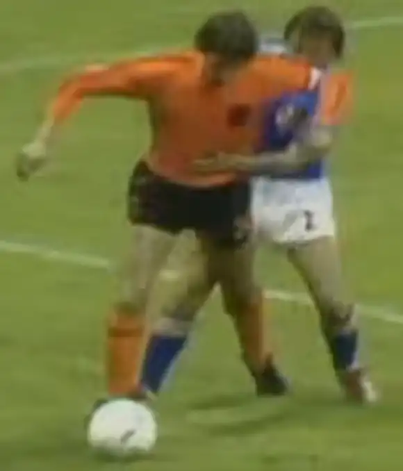
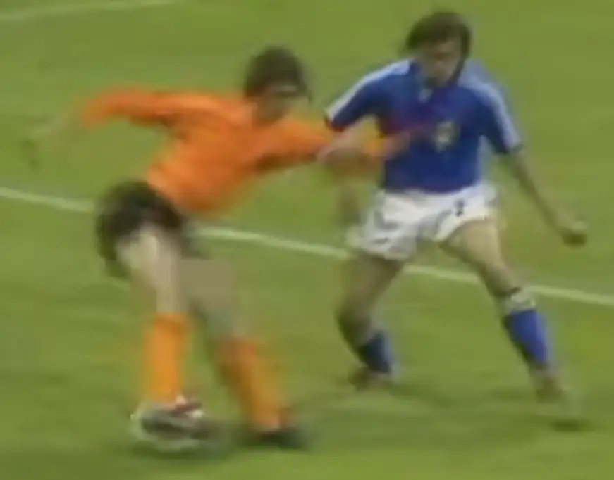
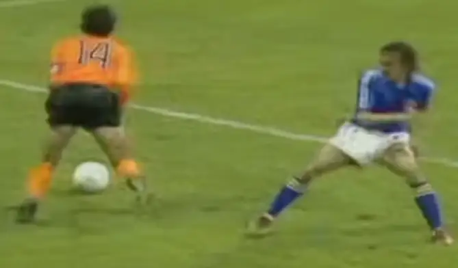
Play moves from situation A to situation C through its execution. Cruyff could've also used his sole to stop the ball, and then take another touch to the left — but that would have taken significantly more time and a different ball path, giving the defender time to step in. There factually was no faster way from A to B than the Cruyff Turn.
Another example: at 0:42, Martinez one-touch propels the ball forward with the inside of his foot instead of stopping it at his feet. He could've done a regular Half-Turn followed by a Dribbling Touch forward — but that would take roughly twice as long.
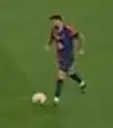
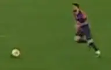
Say Martinez saves 0.5 seconds and a closing defender presses at 6 m/s. That defender is now 3 meters further away than he would've been. In the clip Martinez isn't getting pressed, but Real Madrid's players are running back to reorganize. The principle still applies.
Half a second saved, three meters gained. But the real point is the effect on the next action. Football constantly flips between binary states: passing lane open or closed, defender can reach or can't, play direction forward or backward. Gaining space-time flips these from negative to positive, triggering a cascade:
Without optimization: defender closes space → forced sideways → attack stalls
With optimization: forward pass available → attacking advantage → scoring chance
This is exactly how and why technique translates into speed of play and speed of play translates into advantage. Technique allows one to warp football’s space-time continuum to one’s advantage.
And it compounds. Barcelona don't dominate La Liga through individual brilliance alone, but because 11 players constantly create micro-advantages over 90 minutes across 38 games.
Football is literally decided by accumulated milliseconds and centimeters that snowball into domination, chances and goals.
This repeats at every level, from the Champions League to Sunday League. A team one division higher isn't radically better — just slightly more technical, and that adds up. Every micro-interaction with the ball can be optimized.
Here, Cubarsi makes a quick sole adjustment that instantly makes the pass to Koundé possible.
Think of technique as a toolbox and each technical move as a tool.
Some tools — the inside pass, the half-turn — are used constantly because the problems they solve appear constantly. A Roulette might only be the optimal solution once every few games. But in that moment, if you can't execute it, you must accept a worse solution. Others, like the Ronaldo Chop, solve narrower problems and can often be replaced by equally good alternatives.
In theory, every player has access to every move. In practice, a tool only becomes usable once you can perform it above a quality threshold. A poorly executed trivela doesn't just fail, it actively creates problems. Until you reach that threshold, it might as well not be in your box at all.
Football is a constant stream of space-time problems. The more tools you have and the sharper they are, the better you can solve them.
Street football naturally builds toolboxes because it presents an endless stream of novel problems. Elite players open their toolbox and find chef's knives, scalpels and precision screwdrivers. Amateurs open theirs and find… a hammer.
Amateur football looks like ping-pong because the only tool they trust is blasting the ball forward. You can't take the ball off Pedri or Yamal because they have tools for almost any situation.
While moves like a certain directional first touch, Cruyff Turn or Trivela solve specific problems in specific situations — like keys that fit particular locks — CCD is the master key.
A Cruyff Turn might save you half a second in one specific situation per match. Superior CCD saves you fractions of a second on every single touch.
CCD optimizes football's most fundamental action: moving the ball through space. It connects receiving to releasing and applies to nearly every situation.
Specialized moves still matter. A Cruyff Turn might be rare, but rare situations collectively happen often. And because of neural proximity, training specific moves also improves your general ball-handling, including CCD.
The Math of Technical Play
Think of football as frames frozen in time. A state is a complete snapshot of everything on the field at one moment.
State S = (B, P₁, P₂, ..., P₂₂, V, t)
B = Ball position (x, y coordinates)
P₁...P₂₂ = All 22 player positions
V = Velocities
t = Match time
Every possible arrangement is a different state.
Footballers have a finite list of possible moves — the Set of Technical Actions:
A = {a₁, a₂, ..., aₙ}
It's finite because the foot has limited surfaces: inside, outside, middle. The variations of any move are technically unlimited — but the angles and power levels that actually matter are finite.
When you execute a move, it changes the situation:
T: S × A → S'
Current State + Action = New State
The fundamental question of technical football: how do I get from where I am to where I and the ball should be, as fast as possible?
minimize: Time(S → G)
Start: Current state S
End: Goal state G
Problem: Find the sequence [a₁, a₂, ..., aₖ] that minimizes time.
Example:
State S: Ball at feet, defender behind
Goal G: Ball past defender to space on the left
Option 1: [Regular turn + push ball left] = 0.6s + 0.5s = 1.1s
Option 2: [Cruyff Turn] = 0.6s
Optimal: Option 2
For each specific situation, there is one sequence that solves it fastest. This means:
For each state transition (S → G), there exists a unique optimal sequence a such that:
Time(S →[a] G) < Time(S →[any other sequence] G)
This is why each move owns a specific problem, it solves that exact situation faster than anything else could. Initial and goal states change within milliseconds, so this model simplifies reality. That's exactly what makes it useful.
Like chess, every situation in football has more and less correct answers. Unlike chess, the right choice is more obvious than people think. Players scan the field and see the state. The solution where they and the ball should go follows. The real challenge is the technical execution.
Football is 22 humans operating within known biomechanical limits, on a rectangle of fixed dimensions, with a ball that obeys Newtonian physics and a game of clear rules and objectives. It's a closed, well-defined system.
Why shouldn't it be solvable?
Master all tools with both feet and a player can solve every situation optimally — constrained only by physical ability and identifying the right solution.
Football is a finite system of problems with identifiable solutions. Scanning gives you the state. Experience gives you the answer. Technique is the gap between knowing and doing. Maximize technique and you maximize your ability to solve football.
Training Implications
1) Create football's periodic table of elements: a complete catalogue of every shot, pass, first touch, skill and CCD nuance.
2) Systematically develop each move to its maximum level.
Football development should more resemble martial arts belt systems: structured, progressive, complete.
A footballer's ability is determined by his speed of play — how quickly they can execute football actions accurately. Speed of play comes from two things: physical capacity, the pace at which the body can sprint and change direction without the ball, and technique, the ability to exploit that pace while executing football actions accurately.
Physical ability sets the potential for speed of play. Technique decides how much of that potential you can actually reach. Virtually all players are bottlenecked by technique because they can't translate their full athletic speed into effective technical football.
Messi is the greatest because he combined elite physical speed with technique that could fully exploit it. This allowed him to move just as fast with the ball as without it. He is literally the fastest person at playing football ever.
Iniesta and Xavi could play football at very high speed despite lacking elite athleticism because their technique retained nearly all of their speed with the ball. It's easier to achieve perfect technique at lower speeds. Messi sustained it at extreme speeds.
In lower leagues you can find players with the same profile, playing style and role as Vinicius, just with the speed, agility and technique dials turned down. You could find a fifth-tier version of Dean Huijsen with the same height, position and physical attributes, just significantly weaker on the ball.
We can express football ability simply:
Football Ability ≈ Football Speed of Play + Physical Bonus
Football Speed of Play = Physical Top Speed × Technical Conversion
(Technical Conversion = % of your top speed you can use with the ball while staying accurate)
Physical Bonus = Physical Top Speed − Football Speed of Play
(Extra pace you can use when the action isn't limited by technique)
So: Your true football ability is how fast you can play with the ball, plus your extra raw speed. The first matters far more.
Illustrative examples:
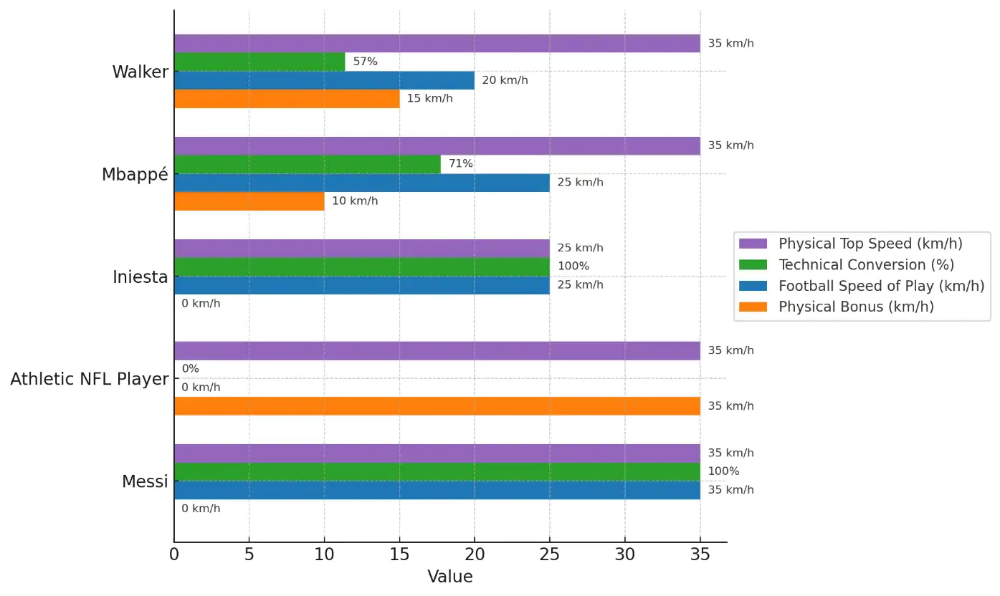
The model is a simplification and that's exactly what makes it so useful. It has the best simplicity-to-accuracy ratio possible. It strips out all the vague, superstitious language and reduces football ability to one clear equation.
Football speed of play isn't just about how fast you can run with the ball. It's about how fast you can accurately execute any football action, whether that's a Cruyff Turn, a first touch or a dribbling touch.
Messi's supremacy exists physically in his brain and body. A hypothetical perfect scanner analyzing his body — muscle fiber composition, proportions, body fat percentage — would show elite athleticism. Analyzing his brain would find the thickest, most complex neural pathways for ball control ever developed. Together, this makes him the greatest ever. No mysticism. Just literally superior hardware.
It tells us exactly what to do: maximize athleticism and its conversion into football through technique.
Build a system around that and we'll produce footballers beyond anything the world has ever seen.
“For years, we have had many coaches in football, but there are no teachers anymore. And you see that in the play itself.” — Johan Cruyff
How do you take any technique — CCD, a first touch, a pass, juggling — and progressively master it?
1) Correct Technique
Neural pathways strengthen whatever you repeat — right or wrong. Practice with flawed technique and you'll get better at doing something the wrong way. In football this is most violated with CCD. The right technique can be learned from watching top players or from instructional resources. Most football technique isn't particularly complex, execution and experimentation matter more.
2) Cognitive Focus
Skill acquisition is brain sculpture. Passive repetition barely changes neural architecture. You need conscious, exhausting mental effort. If it feels easy, you're maintaining existing pathways, not building new ones.
3) The Sweet Spot
“One must develop an instinct for what one can just barely achieve through one’s greatest efforts.” — Albert Einstein
Optimal learning occurs at around 85% success rate, challenging enough to force adaptation, achievable enough to establish patterns. As skill improves, maintaining this rate requires harder tasks, naturally leading to progressive overload.
4) Variability
No two situations are identical. Variable practice builds neural networks that adapt to anything.
Here's how the full progression applies to the Inside Pass.
Start with perfect technique at minimal difficulty. Two meters to a wall or partner, at the slowest pace possible. Your only focus: executing the movement 100% correctly. Once it gets too easy, begin scaling difficulty and variation:
1) Distance / Power
Master two meters, then three, then four, …
2) Angles
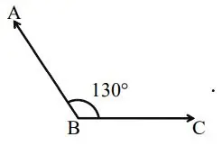
The natural approach angle for an inside pass is around 130° — slightly from the side. But real match situations demand passes from 90° (fully lateral) to 180° (straight on). Master the full range.
3) One-Touch
Initially, always control the ball first. But football often demands one-touch passes. Add this variable at all angles and distances.
4) Vision
Start by watching the ball, you're encoding the technique. Match play doesn't allow this luxury. Progressively reduce visual dependence until you're working with peripheral vision only or less.
5) Movement
All practice so far assumed you're stationary. Reality demands passes while moving. Progress from standstill to full sprint. This simultaneously develops the Inside Pass and CCD.
6) Height
Begin with the ball completely grounded. Once mastered, progress: slight lift → chest height → highest you can manage — and everything in between. With enough power and distance, this transforms an inside pass into a driven shot or cross. The technique is similar but requires experimentation. Height comes from striking lower on the ball and leaning back.
7) Curve
Curve is another essential variation in passing, crossing and shooting.
Importantly, as you add difficulty and variation, the technique changes. Experiment and study what achieves the goal most effectively. Each dimension can and should be combined with the others.
Different techniques have different trainable dimensions. For a first touch like the Half-Turn, you can't vary height or curve. Vision shifts to scanning before receiving, and new dimensions emerge:
8) Magnitude Of Rotation
A half-turn isn't fixed, it exists on a spectrum. Face directly toward the incoming ball and turn fully — that's closer to a 180° turn. Pre-position your body sideways and you barely turn at all.
9) Reception Position
Receive the ball near your standing foot, as far from it as possible, or anywhere in between.
Similar principles apply to Skills like the Cruyff Turn. Vary the magnitude of your turn, how close the ball is when you start, how far you propel it. Each variation solves a different problem. Even a supposedly simple move like the half-turn exists on an infinite spectrum of difficulty.
What matters isn't memorizing every possible variation — it's understanding the core logic of variability and scaling difficulty.
The ball can be varied too. Smaller balls force precision, lighter ones force control. Size 3 is especially effective for juggling, first touches, CCD and skills. Futsal balls and volleyballs create different problems. Mastering harder balls makes a standard football feel easy.
This system encompasses the entire progression from a child's first pass to Messi's perfect long through-balls and top-corner free kicks. They're essentially the same move at different development stages. A beginner works on 2-meter straight passes. Messi works on perfectly placed 40-meter curved balls.
The point is to constantly scale MLC – technique training’s equivalent of weight. Mastering higher MLC technique builds thicker neural pathways, just like heavier weights build thicker muscles.
Unlike fitness or muscle tissue, neural pathways are far more permanent. Technique is built cumulatively — each level contains the ones below it. Once you master 10-meter passes, you don't need to practice 5-meter ones again. Just playing regularly maintains everything you've learned.
This is why most pro team training is wasted time, it's at best spent preventing deterioration. Like strength training: if you can already bench 100kg, there's no value in doing 50. Every minute spent below your skill ceiling is a minute stolen from potential improvement. We're burning billions of hours of human potential for nothing.
This system can make technique as measurable as 40-yard dash times. Players could be rated: "CCD Level 12", "Inside Pass Level 9." Modric's trivela ability isn't genetically given. He's simply more advanced at the trivela progression than anyone else.
Complete technical mastery of a move means executing it at maximum speed and accuracy, 100% of the time, across all variations. That's the development goal.
CCD is a family of techniques, not a single move. The CCD progression system is the crown jewel of my work and reserved only for the complete theory.
Principles
Quality over quantity — but both are essential. Success is the number of high-quality repetitions made in the sweet spot. Set specific goals for every rep. Know exactly what you want to achieve and where you want the ball to go. It's not how fast you can do it, but how slowly you can do it correctly. When your form deteriorates, stop. Most people progress too quickly rather than patiently mastering the lower level first.
Progress from mechanics to mastery. Exaggerate moves initially — overemphasizing helps encode the technique more deeply. After mastering the mechanics, focus on the goal, not the technique. Your body knows what to do. Reach for what you want to accomplish, not what you want to avoid.
Feedback. When you make a mistake, pause, identify what went wrong and actively correct it. When you succeed, notice what felt different and reinforce it. Visualizing the neural pathways forming in your brain can be useful and motivating.
Short, frequent sessions beat long, occasional ones. Twenty minutes daily > two hours once a week.
Mix different skills. Don't just do 30 inside passes then 30 laces shots. Alternate unpredictably. This forces your brain to actively recall each technique rather than relying on autopilot.
Most importantly: develop an intuitive feel for what works and what doesn't. Treat practice itself as a skill to be refined alongside your technique.
Many of these tips are from books I read as a teenager. They shaped my understanding of practice.
If you're practicing the exact match situation, improving at practice equals improving at matches. The system's effectiveness isn't theoretical. It's guaranteed by what it is.
You're not training abstract skills. You're training specific solutions to specific problems. A Cruyff Turn isn't a move, it's what you do when the ball is at your side and you need to fake one direction and go the other. Practice the situation, not the technique in isolation.
In individual practice you control every variable: speed, angle, pressure, body shape. You can recreate any possible match scenario perfectly and repeat it until you solve it optimally. In team training and games you encounter scenarios randomly, once each. Individual practice lets you encounter the same scenario a hundred times in an hour.
You only truly master a move when it happens automatically in games, because games are too fast for conscious thought. When Iniesta does a la croqueta, the situation triggers the move. He isn't choosing it.
Most of training should be improvising scenarios and their solution:
- Dribble from the wing, cut 90° inside.
- Receive with back pressure, turn and shield.
- Carry the ball in midfield, do la pausa to scan, defender lunges, do la croqueta.
- Center-back in build-up: set the ball forward with CCD, adjust passing angles with the sole.
- Full-back: receive after a half-turn, fake the line pass, cut inside.
These are five examples from infinite possibilities. Defenders, Spaces, the entire context must be visualized to make it as match-realistic as possible!
That doesn't just apply for Ball-handling scenarios, but when practicing passing and shooting too.
What this trains isn't just technique. It's tactical ability: when to use which technique, how and why. The brain learns to match situations to their optimal solutions automatically.
Yamal has improvised the receive on the wing and beat your fullback scenario thousands of times since he was six. Football is almost the same situations solved in almost the same ways over and over. You have to practice them the exact way you want to execute them until you perfect it.
Watching elite football is part of the work. Match compilation show you the scenarios you need to master. My obsession with studying the best players gave me a massive advantage over kids who only played — both in game IQ and in how I practiced.
Street football is the most effective development system in history. Elite players emerge from it because they happen to get enough repetitions of the right scenarios with the right technique. This system takes those scenarios and practices them in isolation while maximizing repetitions. Instead of one hour of academy football getting 100 touches, one hour of training gets 1,000 — all in game-realistic scenarios, all at optimal difficulty, all focused on technique. No energy wasted waiting for the ball or defending. Every second builds neural pathways.
This is what I meant by optimizing the shit out of street football. Extract what develops technique, add what street can't, discard the rest.
Games are still essential, from 1v1 to 11v11. Games don't build much technique but they do four things:
- Reveal your current level.
- Expose technical weaknesses, showing what to practice individually
- Teach application of new technique, game IQ and creativity.
- Build confidence, intensity and composure under pressure.
Practice fills the gaps. Games test the integration.
I know the system works because I didn't invent it. I extracted it from what made me elite.
In 2023 I took on a 12-year-old as a student, the son of a family friend. At the start he could barely juggle ten times. Eighteen months later he was at one of the strongest teams in his age-group. He eventually stopped to focus on school.
The training was never close to optimal. School, music, vacations, team schedules, injuries, his own discipline. It worked anyway.
Imagine what this system could do in an elite academy, applied properly, to the most talented children in the world.
There is only one way humans improve at football. Every player who has ever gotten better got better through this process. Messi included.
The system: break football technique into progressive levels of difficulty and variation. Master them systematically within realistic match scenarios.
That's it. Compare it to what academies do: drills with no progression, not even designed for improvement.
This System wasn't cooked up in my deranged mind. It's how neural pathways are built. There is no other way for the human brain to acquire football skill. My system is just the highway without the accidents.
"But Messi didn't develop this way." Yes he did. From age four onwards he spent hours a week doing exactly that — randomly, through play, in informal and academy settings, rather than deliberate design.
Street play works because it throws every variation at you — different angles, movement, situations — and forces you to solve them at the edge of your ability. That's the same mechanism. Just unstructured.
Football only produces a few truly elite technical players per generation because the odds of completing the full progression by accident are astronomically low. For a kid in Mumbai the odds are essentially zero. The structures where the accident happens don't exist there.
Elite technique is a neurological process. It can be replicated anywhere. All it takes is a ball, some space, and the right method — not La Masia, not the streets of Buenos Aires. Every club in India and China already has what it needs. Once they start producing elite players, culture will follow.
Why does PSG pass the ball out of play towards the opposition's corner after kick-off? Fundamental Theory gives us the answer.
Two axioms govern everything that follows: the objective is to win the match, which is pursued by scoring more than you concede.
The ball is either in the net (1) or it isn't (0). But a striker 5 meters from goal is in a far better position than one 30 meters away, yet both situations register as 0 until a goal is scored. Value exists on a spectrum. We need a metric to quantify it.
xG (expected goals) represents the probability of a shot resulting in a goal based on historical data. A penalty kick has an xG of ≈ 0.75.
The problem with xG is that it only measures shooting moments, leaving the vast majority of football — passes, dribbles, build-up play — unquantified. We need a metric that assigns value to any frozen frame: a penalty kick, a fullback cutting inside, PSG passing out at kick-off.
To do this, we move beyond shots to space itself.
Spatial Value (sV) measures the value of any frozen moment in a match based on three factors:
Possession: whether your team has the ball.
Goal-Space (gS): the distance from the player in possession to the opponent's goal. Closer means exponentially higher scoring probability. Horizontal movement away from center increases distance and narrows shooting angles, both reducing gS.
Player-Space (pS): how the positioning of all players affects the quality of the situation. A midfielder 30 meters from goal surrounded by opponents with all teammates marked has low pS. The same midfielder with space and free passing options has high pS.
It’s simple: The better a situation, the higher its sV. Together, possession, gS and pS capture everything that determines the quality of any situation: who has the ball, where it is relative to goal, and how all players are positioned.
For the vast majority of match time, scoring probability is essentially zero. A midfielder 40 meters from goal isn't in a scoring chance, yet some situations at that distance are clearly more valuable than others. Possession, gS and pS are football's fundamental currencies because they determine value independent of immediate scoring probability. All else equal, it is always better to have the ball than not, to be closer to goal, to have more space and better positioned teammates.
That's what makes sV the right metric: it measures value even when scoring probability is zero, yet it's also the best measure of actual scoring chances, because possession, gS and pS are the same factors that determine the quality of scoring chances.
Maximum sV: the ball on the opponent's goal line, your entire team surrounding it, all opponents at the opposite corner flag. Possession secured, gS and pS both maximized, a goal practically guaranteed (sV ≈ 0.99). You can only have a scoring situation when you possess the ball, and the quality of that situation is determined entirely by gS and pS.
High pS enables gaining gS — space lets you advance. But as gS increases, pS decreases — defenders assemble to protect their goal. gS is more valuable: good players can handle intense pressure, but no amount of space far from goal compensates for poor gS. At higher levels, almost any opportunity to gain gS while retaining possession should be seized.
sV is a theoretical framework to define and think about value in football. It cannot be calculated precisely, and the exact numbers wouldn't matter if it could.
So why does PSG pass out at kick-off? They sacrifice possession for a superior spatial position, mainly gS. PSG prefers the situation of pressing the opponent deep in their half than building up from the back.
Theorem I: The pursuit of goals - scoring and preventing - is achieved through the creation and denial of spatial advantages (sV).
Every tactic, decision and player action comes down to this.
How are spatial advantages achieved? Speed of play – the pace at which football actions are executed.
Speed of Play Principle I: For a given action, executing it faster is better than slower.
Both teams are always trying to maximize their spatial advantages. For the team in possession this means advancing, finding gaps, maintaining possession. For the defense it's closing distance, blocking lanes, regaining possession. Any millisecond you do something slower is a millisecond you grant your opponent to execute these actions.
If you receive the ball under pressure and the opponent reaches your teammate in 3 seconds, a 2-second pass leaves him 1 second of space. A 1-second pass leaves him 2. Doubling your execution speed doubles your teammate's available time and space. The inverse applies equally, every fraction of a second you lose, your opponent gains.
All else equal, any football action executed faster is better than the same action executed slower. This doesn't mean always playing one-touch, rushing decisions, or never slowing down. The principle applies to actions being executed, not to the choice to wait. When the right choice is to hold or slow down, there's no action to speed up. The principle governs how you do things, not what you do.
Speed of Play Principle II: Accuracy is Speed of Play.
Inaccuracy costs time, just as slowness costs time. Consider a first touch and pass that takes Pedri one second to execute accurately. An amateur may execute accurately but take 2 seconds, or execute in 1 second but misplace the pass slightly, requiring the teammate 1 second to adjust. Both options cost 2 seconds total — one through slow execution, the other through correction of inaccuracy. The end result is identical: a loss of time and space.
Your grandmother could execute Messi's Ankara goal. It would just take minutes instead of seconds.
What matters is accuracy under time constraint, which is just Speed of Play. Messi's dribbling isn't technically impossible, it's speed-impossible. The difficulty isn't the movement pattern, it's executing it at that speed while maintaining control.
Speed and accuracy depend on the same factor: technique. Improve one and you improve the other. Elite technical players simply have to compromise less between them.
Speed of Play Principle III: Speed of Play determines your available actions.
Football is always time-constrained. For any action to be viable, you must complete it before the constraint runs out. If you receive the ball under pressure and must turn and pass forward within one second, but your execution takes 1.5 seconds, the forward pass doesn't exist as an option. You're forced into something inferior.
Even a long pass is fundamentally about speed. It's a tool to transport the ball from A to B in minimum time — it exists because it's faster than dribbling. Every action in football exists because it solves a space-time problem faster than the alternatives.
Better players don't just execute actions better, they have access to entirely different, superior options. This is why players describing Messi, Neymar, Pedri always say the same thing: too quick. Not in running speed. In playing football. At the highest levels, football looks simple because the complexity isn't in what players do, but in how quickly and accurately they do it.
Improve your technique and you simultaneously get faster, more accurate, and gain access to entirely new actions.
Football is a space-time problem. Speed is how you solve it.
Conclusion: Almost everything that matters in football reduces to Speed of Play — the quality of your actions, which actions are available, your athleticism. Even endurance isn't a separate quality; it's just the ability to sustain speed and accuracy.
The only aspects of football that truly aren't Speed of Play are pure tactical choices — positioning, selecting which available action to take. But which actions are available still depends on Speed of Play. At high levels, decision-making converges and the difference becomes execution.
Theorem II: The capability of acquiring spatial value is determined by speed of play.
At any moment, a player faces multiple possible actions. Each action, if successful, creates a situation with a certain spatial value. Each action also has a probability of success, determined by the difficulty of the action and the player's ability.
The expected value of an action equals its success probability multiplied by the resulting sV:
xV = P(success) × sV(outcome)
A midfielder receiving the ball might face:
- Safe back pass: 0.01 sV, 90% success → xV = 0.009
- Turn and pass to the side: 0.05 sV, 80% success → xV = 0.04
- Turn the other way, through ball with weak foot: 0.3 sV, 30% success → xV = 0.09
In practice this calculation is too simplistic. When an action fails, there are typically several probable outcomes that could happen each with their own sV. A failed cross might result in a counterattack or a clearing header falling to a different teammate. But the principle holds. Pro players are generally aware of the actions with the highest xV and choose between the best of them.
Physical and technical ability determine this value spectrum entirely. They define which actions are even possible, the sV each action would create through speed and accuracy of execution, and the probability of completing each action successfully.
Tactical ability is just selecting the action with the highest expected value. It doesn't expand what you can do or improve how you do it, it only helps you choose better from what's already there. Mental ability affects which action you choose under pressure and how cleanly you execute it.
Tactics and mentality are optimizers. Physical and technical ability are the thing being optimized.
Time-Value
Actions have two value components: what they create now and what they enable later.
If players only maximized immediate value, midfielders would shoot from distance constantly — a 1% scoring chance beats the 0% a sideways pass produces in that instant. They don't, which means they're calculating something else: the expected value of the future.
Down a goal in extra time, time has no value because there is no future. Players purely optimize for the moment: long balls, shooting from anywhere. The rational response to worthless time is to stop investing in it.
Teammate quality strongly influences time's value because it determines what happens in the future. A sideways pass at Man City has high future value because the players can execute the buildup that pass initiates. The identical pass at amateur level has near-zero future value, the stretched defense, the opened spaces, the game state that pass was meant to construct will never arrive because the teammates can't materialize it. Amateur football looks chaotic not just because of technical limitation, but rational adaptation to low time-value.
Twenty short passes in buildup aren't twenty separate actions. They're one action whose value only materializes at the end.
An action's true value is its immediate output plus the future states it enables — adjusted for how much time those states require, what that time is worth and how likely it is that those states materialize.
Football is probabilistic, not deterministic. Messi might score from 16 meters 70% of the time versus an amateur's 10%, yet this means 3% of the time the amateur scores while Messi misses. Skill determines the odds. Randomness determines what actually happens.
A team can play vastly better, create superior spatial advantages and chances, and still lose. sV is the most objective measure of performance precisely because it captures what teams created before luck influenced the outcome.
Which is better: one 0.9 xG chance or ten 0.1 xG chances?
By expected value the ten chances win, 1.0 expected goals versus 0.9. But the outcome distributions tell a more interesting story:
- One 0.9 xG chance: 90% probability of scoring, 10% of scoring nothing.
- Ten 0.1 xG chances: 35% probability of scoring nothing, 39% of one goal, 26% of two or more.
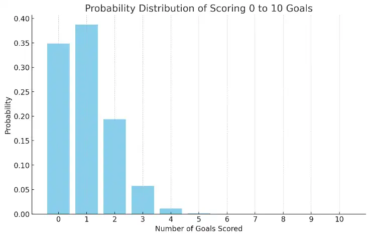
The single chance is safer, 90% versus 65% probability of scoring at least once. The ten chances offer upside, 26% probability of two or more goals versus zero. Similar expected value, completely different risk profiles.
The Law of Large Numbers says outcomes converge to expected values with enough trials, but low-probability events require far more trials to converge than high-probability ones. Football has neither sufficient trials nor high enough probabilities. Teams average 10-15 shots per game at roughly 0.1 xG each. Identical performances routinely produce wildly different scorelines purely by chance, and since single goals usually decide matches, randomness shapes outcomes to a degree no other sports comes close to.
In basketball, a team makes around 120 attempts per game at roughly 50% success rates. The result: 80% of basketball games land within 10% of the expected score. In football, 80% of games land anywhere between 0% and 125% of expected goals. Basketball gives randomness enough trials to average out. Football doesn't come close. Here are the probability distributions comparing the two sports in an average game for one team:
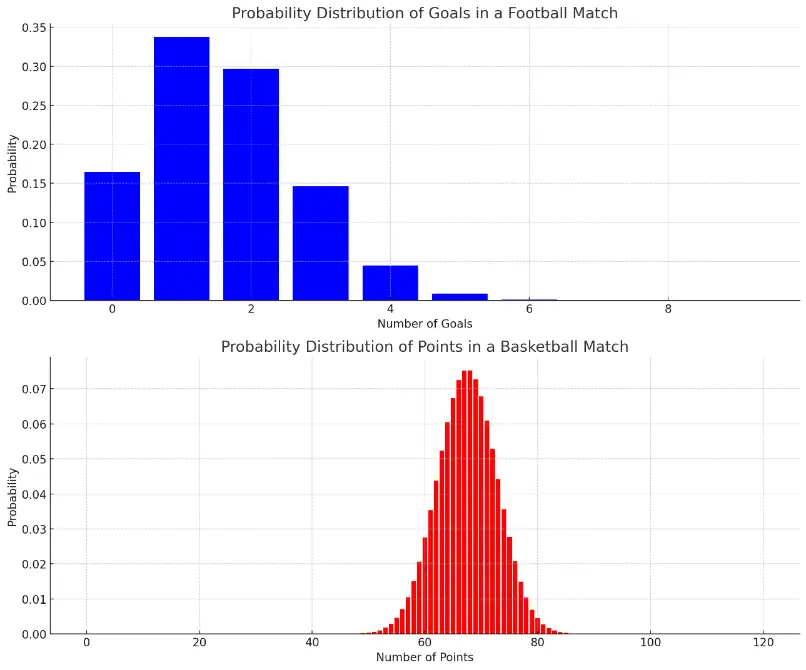
This shows that in basketball, final scores reliably reflect expected outcomes (what’s ‘fair’), while in football, the deviation between expected and actual results is massive.
This is why football produces more underdog upsets than any sport. It's also why analyzing underlying performance — spatial advantage, chance quality — is more reliable than analyzing results, which randomness distorts.
Referee decisions compound this further. The problem isn't just obvious mistakes, it's the variability in how identical situations get judged. VAR addresses only clear errors in game-changing moments, but what counts as clear is itself subjective. Borderline penalties, 50-50 handballs, marginal red cards, these remain judgment calls and they change entire matches.
Football results are mainly determined by ability and chance. Most complex tactical and psychological analysis is noise.
Football is an interdependent sport. Everything you do affects your teammates. Everything they do affects you. This is why it's often harder for better players to perform on lower levels than higher ones. You need your teammates to get the best out of you.
Better teammates give you better passes, make more of your passes, get you the ball more often and in better positions. More fundamentally – they change what the correct decision even is and thus how you should approach the entire game.
Passing into midfield to Pedri under pressure leads to retained possession and something positive. The identical pass to a weaker player is a turnover. What's smart with good teammates becomes a mistake with bad ones.
Put a fifth-tier player into Barça and the only thing he should do is receive and immediately pass to the nearest teammate. Put him in the ninth tier and he should focus on dribbling and creating, because simple passing doesn't work when teammates can't execute or capitalize on it. Same player, completely different correct approach.
This is why simple, fast play becomes more effective the better your teammates are and why elite players often perform better at higher levels than lower ones. High-skill actions in football are primarily offensive rather than defensive, meaning your teammates' superior ability boosts you more than your opponents' superior ability hinders you.
Teammates matter so much because football is fundamentally a passing game. This creates constant interdependencies between players. Elite 1v1 dribbling is so rare that consistently beating a few defenders per game makes you world-class.
Basketball on the other hand is 5v5 instead of 11v11 and much more focused on shooting and dribbling (individual skill) rather than passing (collaborating). That’s why individuals can dominate much more in basketball.
When Bellingham moved to Real Madrid he said it was much easier to play there than at Dortmund, that he played ten times better. And that's comparing two elite teams.
For semi-professional players and above, the amateur game is genuinely unplayable. The level is too low to showcase the full spectrum of their ability. The level can be too high and you can't keep up, or too low and your teammates can't utilize you.
Team strength relative to opponent also shapes your experience of the game. The superior team usually has more control, more possession, better positions – meaning you receive the ball more often and in better situations.
Position, role and tactics also make a massive difference. A striker whose only job is to score depends almost entirely on the team creating chances for him. Whether the system suits you is another variable entirely. Those are all reasons why players can look terrible at one club and world-class at the next.
In 2017, a second Bundesliga player claimed Ronaldo would struggle at that level while his teammates could “swim along” at Real Madrid. It’s wrong, but there’s a point to the idea.
A player must always be judged within their context.
Axiom I: Teams aim for victory.
Axiom II: Victory is pursued by scoring and preventing goals.
Theorem I: Goals are pursued through the acquisition of spatial value.
Theorem II: The capability of acquiring spatial value is determined by speed of play.
Theorem III: Speed of play is determined by technical and physical ability.
Theorem IV: Technical and physical ability is determined by cumulative training quality.
Proposition V: Current academy training methods fail to systematically develop technical and physical ability.
Proposition VI: The complete Theory Of Football will maximize training effectiveness.
Proposition VII: This will dramatically elevate the level of the entire sport and produce a child surpassing Messi before the World Cup 2030 ends.
Changes of Direction
CCD is the most fundamental action in football. Every touch that moves the ball is a change of direction.
The angle of a change of direction is defined as the angle between the player's original direction of movement and the new one.
0° Forward: The standard CCD. Ball moves straight ahead in line with the body.
45° Outside: Outside changes of direction move the ball away from the body, toward the direction of the dribbling foot. Here the ball's path shifts 45° outward from its original trajectory. The technique is identical to standard forward CCD, only the foot angle changes, redirecting the ball. Here, Messi does a 45° Outside Turn just before scoring.
90° Outside: Same technique as the 45° Outside, larger angle. Two consecutive 45° touches produce the same directional change as one 90° touch. It’s often used by wingers to cut inside for a shot and by midfielders to pass sideways or escape pressure while shielding the ball. Messi’s last touch before scoring here, is a 90° Outside Turn.
CCD is essential for effective passing because a player's natural passing range is limited. With the ball in front of your strong right foot, you can only pass left — roughly 90° inward — due to the foot's range of motion. Passing right requires either the weak foot or repositioning ball and body. A 90° Outside Turn does both simultaneously, shifting the entire passing range 90° and opening the other side of the field. This is why Messi takes an outside touch before playing through balls and crosses, he's not just moving the ball, he's rotating his options.
The 90° Outside Turn also creates natural shielding. After the turn, the dribbling foot sits closer to your own goal and the weak foot toward the opponent's, placing your body between ball and defender. If you then lean into the defender and extend your arm, you’re almost impossible to dispossess. Your body provides roughly 180° of natural shielding from behind. When you turn, the protected zone turns with you.
180° Outside: Here Messi uses it right at the beginning to turn and face Dybala.
Wrap the foot around the far side of the ball and stop it with the outside of the foot near the pinky toe. As you do, the weak foot takes a final stride and plants beside the strong foot, letting you turn and go the other direction.
Inside Turns: Inside turns move the ball toward the inner side of the body, in the direction of the weak foot. The technique differs from outside turns — contact is made with the side of the big toe or slightly below.
The main disadvantage is reduced body protection: the dribbling foot lands on the opponent's side. Shielding is still possible but forces reliance on the weaker foot.
Turning any degree between 0° and 180° is possible. These are just the main angles most situations fall into.
Here at 0:07 Messi does two 45° Inside Turns in a row and here a 180° one to dribble the referee.
Watch Messi’s ankara goal and try to identify each touch.
Inside turns don't have to be sharp cuts. Especially when moving laterally, the inside touch can be a slide and push, the ball is guided inward without a significant change in body position or direction. Here at 0:08 is an example.
Inside-Guiding: Repeated 45° inside touches that move the ball diagonally inward without a full directional change. The body stays largely forward-facing while the ball drifts inside. Used by top-wingers all the time. Here you can see Dowman do it briefly.
One final point: CCD is described here from the strong foot, but elite players use their weak foot constantly – either for full dribbling sequences or just to correct here and there. Watch Pedri, Cherki, Dembélé, it happens all the time.
CCD is generally applied in two modes:
Steady-Mode: Jogging, not sprinting, with the ball kept as close as possible and a touch on every stride. Covers less distance but gives maximum control, easier to maintain vision, change direction, adjust speed or decision mid-sequence. Essential for playmaking and tight spaces.
Sprint-Mode: accelerating and sprinting at maximum speed with larger touches and longer strides. Taking a touch every stride becomes nearly impossible without sacrificing pace, even Messi has empty strides. Used for running into space, beating defenders and escaping pressure.
Most situations call for one or the other, though players switch between them mid-dribble constantly.
Back-Foot Reception (Half-Turn):
Football's most common technique alongside the inside pass. Applied when receiving from either side while wanting to face forward, or when turning with your back to the opponent's goal.
Position your body so the ball rolls past the standing foot, the foot on the ball's incoming side. Control and cushion with the inside of the back foot, stopping the ball in front of it with both feet planted and ready. This opens the body to face play.
The Half-Turn exists on a spectrum determined by how far you let the ball roll before controlling it and how much you rotate during reception. Receive close to the standing foot and you turn toward the pass's origin. Let the ball roll to maximum distance and you rotate nearly 180° away. Choose based on the required ball and body position.
At maximum extension, the ball ends beside the body rather than in front — enabling shielding, pressure evasion, opening passing angles, or functioning as a feint. Each variation solves a different spatial problem. The core technique stays the same. Only distances, angles and resulting body positions change.
Back-Foot Front:
Identical to the Half-Turn except the ball is propelled forward rather than stopped, creating immediate space for the next action. Extremely common in build-up play for center-backs and midfielders, and often used to immediately dribble past an opponent on the opposite side. Executable at any magnitude and angle, frequently done diagonally. It’s also extremely common when you get the ball with your back facing the opponents goal and slight pressure. It allows you to escape to either side.
Examples: Martinez at 0:42 or Mbappé at 0:11.
Identical to the Half-Turn except the ball is pushed back toward its origin. Functions as a bait-and-switch — creates space and often beats the pressing defender.
Identical to the Half-Turn but the ball is swept backward rather than stopped. Used when pressed from behind or when facing forward under frontal pressure and needing to turn back toward your own goal.
Directional First Touches:
Used to control the ball towards any direction, often when pressure from behind makes back-foot reception impossible because turning into the opponent isn’t an option.
Face the incoming ball directly and control it in any direction: 0° straight, 45° and 90° inside or outside — same angles as CCD. Outside touches use standard CCD technique. Inside and straight touches use the inside of the foot. 90° turns are especially effective for bypassing a pressing defender.
Sole First Touches:
Absolutely fundamental for high-level football because it’s the fastest way to control the ball and reposition it. Most often done straight forward to position the ball immediately in front of the body — especially effective with a defender at your back. Can also be applied in all directions.
Pro’s often use them for turning, as an alternative to the back-foot style.
Other Variations
Controlling with the chest, inside or toes in the air. Executing a skill move directly on reception. Letting the ball run past entirely. Faking a pass before turning the other way - a feint built into the first touch itself. The variations are effectively unlimited. What matters is the principle: every first touch is a solution to a spatial problem, and the right one depends entirely on the situation and what you want to achieve.
First touches are crucial because football is often played in two or three touches. They set up the next action, determine speed of play and are essential for evading pressure.
There are dozens of distinct variations when accounting for directions, magnitudes and both feet, but selection should be automatic. If you've mastered them, your body executes the right one without conscious thought. The first touch is just the means to the next action.
Second Touches
Second touches are the CCD touch — in any direction — immediately following a first touch, usually a half-turn. They're part of the same movement, executed almost simultaneously. Used to quickly get a pass or shot off, evade pressure and set up the next action. Midfielders often use them after a half-turn to switch play, pass sideways or position the ball for what's next. Here Ronaldo does a 45° Outside and here at 1:18 Mbappé a 90° Outside one.
Football is often played in three touches: first touch to control, second touch to evade pressure and set up position, third touch to pass or shoot. Ideally you know both touches before receiving the ball.
Taking three clean touches — first, second, pass — is almost always enough to escape pressure and find a solution. It's fundamental to playmaking, press resistance and professional football.
Skills are an essential component of technical, professional football.
Sole Skills
The most important skill category. Like CCD, direction, angle and magnitude can all be varied.
Similar to the 180° Inside Turn but executed with the sole. Roll the ball toward yourself while rotating inward — a small hop clears the standing foot from the ball's path. The fastest way to turn in football, though not viable at high speed.
Variations: rolling the ball behind the standing foot instead of in front (essentially a Cruyff Turn with the sole instead of the inside). Another is to mainly step on the ball to stop it and not pull it back too much. Can always be combined with a fake shot or pass for deception.
The inverse of the Inside Sole Turn, you rotate outside rather than inside. Done with your left foot, you turn left; with your right foot, you turn right. Very effective to escape pressure or set up a back-pass.
Directional Rolls:
The ball can be rolled with the sole in any direction, like CCD. Here Cubarsi does one to the right and slightly back. A common variation is simply stepping on the ball to stop it or hopping backward to create distance. Used mainly to create passing angles and orient ball and body toward a specific direction. Combined with Inside and Outside Sole Turns, the full 360° are reachable.
Sole skills are the fastest way to change ball and body angles in tight spaces. And that’s why simply getting one’s sole on the ball – whether as a first touch or not – is such an essential habit. It allows for maximum flexibility in creating space and passing angles in the quickest way, without moving. That’s why elite players constantly have their foot on the ball and adjust it with the sole.
It’s a Roll-Back but instead of letting the ball roll behind, you guide it anywhere with your inside. Used to change directions, set up passes and evade pressure.
Again starts with a Roll-Back, but you slide the ball behind your standing foot with the inside. Extremely effective when being pressed from the opposite side. Can be used as a short pass.
The same as the Roll and Slide but instead done in front of the standing foot. Useful for baiting an opponent one way and going the other.
A Roll-Back followed by an Outside CCD touch. Useful for turning outside and setting up a pass.
Each sole skill is the optimal solution to its specific spatial problem.
1v1 Skills
When running at a defender, you mostly don't want to use skills because CCD, directional changes and pace changes are faster. Two exceptions:
Feints:
Two types exist. Strong-foot feints (standing and running) and weak-foot feints. They’re usually followed by turns in the opposite direction. Here Messi combines both. Also works when facing your own goal with a defender on your back.
Then there’s the cross-body variation, which can also be done as a step-over. Fake-shots and passes are also very effective.
Same as feints except you go around the ball instead of beside it. More suited when moving at slower speeds.
Escape Skills
These are last-resort moves done just before the defender gets the ball.
Drag the ball sideways with the inside of one foot and accelerate past with the other side of the body.
Used when the ball is too far outside for la croqueta.
A full rotation keeping the ball close, exiting in the original direction of travel.
Nutmeg:
Practical in three situations: a final touch that tips the ball through the defender's legs just before they reach it; a touch through the legs of a chasing defender mid-stride; and when a defender stands or runs toward you with open legs, going straight through the middle rather than either side.
A 90° Outside Touch also works as a last resort.
Skills can be combined with each other, with the weak foot, and especially with CCD. Master the move and its use case and the application in games becomes automatic.
The ratio of passes to shots is around 30:1.
Inside Pass:
The most common pass in football, executed with the inside of the foot along the ground.
Inside Shot:
Same technique as the inside pass but struck with more power. Leaning back and hitting low on the ball creates height.
Inside Long Pass:
Especially the last pass here is a perfect example. It’s incredible how much height you can generate with this pass. More effective than the ping when approaching from the side or when curve is needed. Also used at shorter distances as a lob. Crossing is simply a variation with less height and more power, more horizontal trajectory.
A high, long pass executed with the mid-side part of the foot.
The most powerful shot.
Uses the outside of the foot. Some situations make inside or laces impractical and the outside is the only option. Used both along the ground and in the air.
Conclusion
Over 99.9% of all techniques used in football are covered in this chapter. This is football's vocabulary, the exact tools that need to be mastered in every combination, direction, angle and variation. Each solves a different spatial problem. Each has a specific use case that must be understood and trained in realistic scenarios.
Moves like rainbow flicks and elasticos are excluded because they're not practical enough.
This is the language of football. Master it completely.
Physicality is the second most important factor in football after technique.
The two most important attributes by far are speed — especially acceleration — and agility. They determine how fast you move through space, which directly improves speed of play, and provide advantages everywhere: reaching the ball first, pressing, dribbling, winning duels, generating power in shots and passes. Since sprints rarely exceed 30-40 meters, acceleration matters more than top speed.
Endurance is essential but develops automatically through daily team training. It's a baseline requirement, not a differentiator.
Power — mass times speed — determines who wins physical duels. It's another reason speed matters: faster players are inherently more powerful. The strongest players combine high mass with high speed.
Height provides more mass, better headers and greater reach. Shorter players gain superior agility. Their mass is concentrated closer to the ground, so they have better leverage in physical duels, pushing upward against taller opponents. Neither is clearly better and the greatest players span the entire range. Extremes below 165cm or above 195cm become disadvantageous. This is part of football's beauty: you can be short and scrawny or a 195cm machine. What matters is how good you are at playing football.
Body fat should be as low as possible without compromising performance — typically 8-12% for men, similar to elite sprinters and endurance athletes, since football demands both.
Speed and agility are the differentiators because everything else is either standardized across pros, less impactful, or correlates with them anyway.
Acceleration and agility depend on relative strength, your force production relative to body mass. When stationary, moving slowly, or decelerating during direction changes, you must generate massive ground forces to move your body. This is why strength training especially benefits acceleration and agility: you’re pushing heavy weight (your body) from slow speeds, similar to lifting heavy. That’s why studies show that strength training directly improves acceleration and deceleration (agility).
Top speed works differently: once moving fast, ground contact time becomes too brief for force production to matter. Technical efficiency and rate of force development dominate instead.
Improving acceleration and agility means progressively developing relative strength in the prime movers: tibialis, calves, quadriceps, hamstrings, glutes, hip flexors and core. The VMO — the inner portion of the quadriceps — is especially important. It protects the knee, activates heavily during acceleration and deceleration, and determines how low a player can get, which improves agility, balance, reach and technique. Messi's VMO is outrageously strong. It's what allows his characteristic extreme knee bend when changing direction or shooting.
Just progressively improving in the right muscles, movements and exercises would transform the average pro footballer’s speed and injury-resistance.
Consider one of football's most common injuries: hamstring tears. They occur when the muscle can't absorb the eccentric forces of sprinting. If every player was progressed to being able to perform one concentric Nordic curl, hamstring tears would virtually disappear and they’d be significantly faster (proven by studies). The same principle applies across all non-contact injuries, including ACL tears: relative strength of muscles and tendons is the best prevention.
It always shocks me when I hear elite footballers say stuff like “I don’t like going to the gym so I don’t do it.” or “this player is in the gym so much.” It’s insane that they leave this up to individual preference. There should be mandatory, structured programs designed to progressively maximize athletic ability and injury resistance.
Football still treats athletic development as optional. Players are accepted as they are, limited by whatever genetics gave them, when the methods to systematically transform athletic ability already exist and work. The problem is identical to technique: no progressive overload, no structured system. World-class athletes like Mbappé and Vinicius are genetic outliers, but athletic ability can be developed to elite levels by anyone willing to apply the right methods. Football just hasn't caught up yet.
Genuine confidence is football's defining mental quality. Not effort — giving your all is just a minimum necessary standard. Inner security. The ability to play calmly, intuitively and intensely at the same time. That's flow state, and it's all you need to play your best football.
Confidence comes from ability, repeated success and character strength. The most genuine form is simply knowing you'll perform because you always have. Getting there requires skill, time and consistently pushing beyond your current level and performance.
And don't take it too seriously. Learn to detach from outcomes and have fun. Fear and insecurity can't survive genuine enjoyment.
Stop polling people on who’s better and start analyzing who actually is better.
Think of a footballer like a machine. Stats like goals and assists are the outputs, but they depend on team quality, tactics, and role - not just the player’s ability.
To judge a player’s true ability, we need to look at fundamental ability: how well can he dribble, pass, shoot, and run? This shows the player’s actual contribution, stripped of external factors.
For Messi vs Ronaldo however, we can actually rely more on output analysis, because their circumstances were virtually identical: same era (2010-2018 prime years), same league (La Liga), similar team strength (Barca and Real Madrid) and similar roles as free offensive players with minimal defensive duties. In this case, their statistics genuinely reflect fundamental ability and who’s better.
This analysis focuses on 2009-2018 when both were in their prime and played in Spain. 2011/2012 is particularly significant because Ronaldo was at his absolute peak and Real Madrid was at least as strong as Barcelona, while in other seasons you could argue Real was weaker or Ronaldo wasn’t at his peak.
Goal-Scoring: We’ll use “minutes per goal” to account for playing time differences.
During 2010-2014, Messi had the edge in 3 of 4 seasons. In 2011/2012, Messi scored every 72 minutes versus Ronaldo’s 82 minutes. Between 2014-2018, Ronaldo had the edge in 3 of 4 seasons.
Looking at the entire 2009-2018 period while both were in Spain, their goal-scoring rates were equal, both scored approximately every 85 minutes.
Goal-Scoring: Equal
Assists: Over their entire careers, Messi has 389 assists versus Ronaldo’s 258. During their time in Spain, Messi made 177 assists to Ronaldo’s 120. In the Champions League, Ronaldo has 41 versus Messi’s 40 assists, though Messi achieved this in 20 fewer appearances. In 2011/2012, Messi had double Ronaldo’s assists: 30 versus 15.
Winner: Messi
Passing: Key passes are defined as the final pass leading to a teammate’s shot attempt. Since 2009, Messi has 1,544 key passes versus Ronaldo’s 890, though Messi makes a lot of his key passes from corners and indirect freekicks which Ronaldo doesn’t take. During 2010-2014, the numbers were more even.
For throughballs - passes that split the defense for teammates to run onto - Messi has 0.8 per 90 minutes versus Ronaldo’s 0.15 since 2009. Throughballs are one of football’s most effective chance-creation methods.
Since 2010, Messi has created 419 big chances compared to Ronaldo’s 179, 0.8 per game vs 0.36.
Winner: Messi
Dribbling: Throughout their careers, Messi averages 4.57 successful dribbles per 90 minutes compared to Ronaldo’s 2.21.
Even in 2011/2012, Messi completed 222 successful dribbles versus Ronaldo’s 102. Between 2008-2017, when Ronaldo won four Ballon d’Ors, Messi consistently doubled or tripled his dribble count.
Ronaldo’s dribbling dropped to an average of 51 between 2015-2018. In Ronaldo’s final season in Madrid, Messi’s dribbles exceeded his by more than four times.
Only in 2006/2007 and earlier did Ronaldo complete more total dribbles, but this was due to significantly more playing time - over 50% more minutes for 10% more dribbles.
Winner: Messi.
Heading and Aerial Duels: Throughout their careers, Ronaldo has scored 150 headers compared to Messi’s 27. Since 2009, Ronaldo has won 789 aerial duels compared to Messi’s 117.
Winner: Ronaldo
Shooting: Since 2009, Ronaldo has taken 3,708 shots compared to Messi’s 2,999. Messi scores a goal with every 5.27 shots, while Ronaldo requires 6.43 shots per goal. Messi’s shots are also more frequently on target, 47.18% versus Ronaldo’s 41.05%.
Over their careers, Messi has scored 101 goals from outside the box (excluding free kicks), while Ronaldo has scored 71.
Ronaldo scores more with his weak foot: 175 versus 107, though he also needs more than twice as many shots per goal to do so.
Since 2014, Messi has outperformed his xG by 33 goals, while Ronaldo has done so by 5 goals.
Winner: Messi
Penalties: Ronaldo converted 84% of his penalties, Messi 78%. Ronaldo has taken 211 penalties versus Messi’s 142. 18% of Ronaldo’s goals came from penalties, 13% for Messi. 48.5% of Ronaldo’s hat-tricks included a penalty compared to 21.2% of Messi’s.
Winner: Ronaldo
Freekicks: Messi has scored 69 free-kicks to Ronaldo’s 64, despite Ronaldo leading 39-14 at the end of 2013. Messi scores a free-kick every 16 games, Ronaldo every 20. Since 2014/15, Messi converts 9.3% of his free-kicks, Ronaldo just 4.0%. Before then it was 8.1% for Messi vs 7.1% for Ronaldo.
Winner: Messi
Other: Messi has won 8 Ballon d’Ors to Ronaldo’s 5, and 46 major team trophies to Ronaldo’s 36. Messi has been awarded best player at major international tournaments four times, Ronaldo never.
Messi has earned 333 man of the match awards versus Ronaldo’s 168. Messi wins man of the match in 51% of his games while Ronaldo does so in 30%. Messi’s average match rating is 8.48 to Ronaldo’s 7.90. In finals, Messi has 50 goals and assists while Ronaldo has 24.
Defensively, Messi has better tackling and interception rates. Ronaldo has more clearances, shots blocked, and crosses blocked.
The following data comes from fbref.com, starting from 2017/18. This was Ronaldo’s last season in Spain, he was 32 and Messi was 30, both still in their prime.
Progressive Carries: Moving the ball forward at least 10 yards toward the opponent’s goal while dribbling, or any carry into the penalty area.
Progressive Passes: Passes that move the ball forward at least 10 yards toward the opponent’s goal, or any pass into the penalty area.
Progressive Passes Received: How often a player receives passes that move the ball forward at least 10 yards toward the opponent’s goal, or receives passes in the penalty area.
Progression stats are one of the most important metrics in football. Football’s objective is scoring goals and scoring chance mainly depends on how close you are to the opponent’s goal. Progressive actions measure how effectively you move the ball toward that goal.
This requires beating the press and playing through defensive lines, which demands elite CCD and technique. Top players don’t always top goal charts, but they excel at moving the ball forward because that requires pure skill.
In 2017/18, Messi completed 211 Progressive Carries compared to Ronaldo’s 118, and 333 Progressive Passes versus Ronaldo’s 99. Messi also carried the ball into the final third 155 times against Ronaldo’s 52.
Messi gets dispossessed far more often than Ronaldo: 107 versus 27 for that season. Messi attempted 2.5 times more carries, meaning he takes far greater risks with the ball. Losing possession isn’t entirely negative, it can stretch defenses and allow for gegenpressing leading to quick transitions.
Ronaldo had 298 Progressive Receptions (PrgR) versus Messi’s 263. This makes sense because players with the highest Progressive Receptions are almost always center forwards, which was closer to Ronaldo’s role. Messi however received the ball far more overall: 2,076 total receptions versus Ronaldo’s 909.
Other statistics confirm their different roles: Messi completed 1,544 passes, Ronaldo 615, including 116 long passes versus Ronaldo’s 26. Messi touched the ball 2,387 times against Ronaldo’s 1,087. Only in the opposition penalty box did they have similar amounts of touches: 250 for Messi, 237 for Ronaldo. Messi also drew fouls at four times Ronaldo’s rate: 80 versus 18.
Possibly the most telling stat is how much they pre-assist themselves. This is when you give the ball to a teammate, get it back and score. Basically when you help create your own chance and finish it. It’s over 20% for Messi and under 1% for Ronaldo.
Their heatmaps show that Messi played in a deeper position, while Ronaldo stayed closer to the penalty box and left wing (Messi left, Ronaldo right):
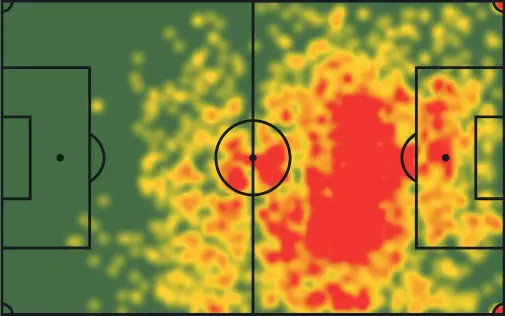 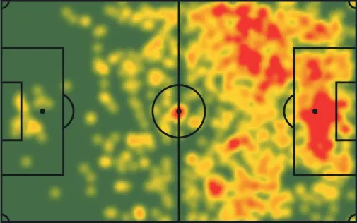
The key point: Both players scored at identical rates of 1.02 goals per 90 minutes, but Messi achieved this while contributing far more to progression, playmaking, and build-up play. Messi provided everything Ronaldo did in terms of goal-scoring, plus much more in other areas.
Ronaldo is more of a goalscorer. Messi is elite at goalscoring like Ronaldo, but also at playmaking like De Bruyne. He is an elite goalscorer, pacey 1v1 dribbler, and creative playmaker all in one.
How is that possible? Superior fundamental ability. Messi is the best player ever technically (CCD, passing, shooting, first touches) and close to the best physically (agility, acceleration, strength).
There are only two aspects where Ronaldo is clearly better: heading and penalties. Heading especially is Ronaldo’s biggest advantage because it makes him a much bigger threat in the box for crosses.
There’s no need for an eye test because the stats are the eye test. Statistics simply record what actually happened, so there’s no meaningful difference between what the numbers show and what occurred on the field. Anyone who’s watched the two can confirm.
My impression: Watching Messi was like watching a perfectly optimized footballing machine. He was the only player where I’d regularly see things and know with certainty no one else in history could have done that. He imposed his will on games like no one else ever could. Ronaldo was the best goalscoring machine I’ve seen, but he lacked Messi’s magic.
The debate became so big because they played at the same time for rival clubs, had similar goalscoring numbers and did it during the social media era.
My bedroom growing up:
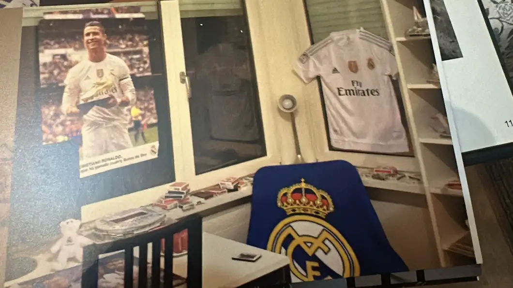
They’re not visible, but there’s 2 more, same sized Ronaldo posters to the left of the one here. I literally couldn’t look out of my window because they were covered in Ronaldo posters.
A phenom is a player that breaks the sport’s collaborative nature through individual dominance. Phenomena are always the best dribblers because it’s the only skill that creates from nothing. Watching them gives you the feeling they were chosen by God. They only emerge through the combination of elite technique and elite athleticism.
Maradona was the first. What about Pelé and Di Stéfano? I don’t consider them phenomena for several reasons. First, the lack of footage. Pelé is 15 years younger than Di Stéfano but over 70% of his career was never filmed.
Second, the era they played in. Tactics, proper training, globalization and professionalization all really developed in the 80s. Modern football is barely 50 years old, there are literally only 3 generations of players that played anything resembling today’s game.
Look at their clips. The level of play was worlds behind, the speed, intensity and technique were nothing compared to today. This wouldn’t work in in the modern game.
But mainly, Maradona was simply a better footballer than both Di Stefano and Pelé. They were ahead of their times but Maradona could do things with a football no one had ever done before. His ball control looked completely different, he was the first player to properly do CCD. The football world couldn’t believe what they were witnessing. People thought he was a God.
The 90’s brought Ronaldo Nazario. He was taller, used more skills, had an Olympic sprinter’s body and technique just as transcendent. Then Messi and Neymar in the 2000s and 2010s, one phenomenon per decade. Three of the four also hated training and did everything possible to derail their careers off the field, a common trait among the most talented footballers.
I was in Barcelona in February 2023 when my cousin pointed out some kids playing football in the streets and said any of them could be the next superstar. Two months later, a certain fifteen year old made his Barcelona debut.
I started watching Lamine that summer and I couldn’t believe what I was seeing. From then on, I followed his every step. The moment I knew he was the next in line was March 2024 in a friendly against Brazil when he did that dribbling with the roulette. It was a level of technical speed reserved only for Phenomena. A year later, in the 2025 Champions League Semi-Final against Inter, he proved me right. That night, he became one of the Phenomena.
A left-footed flair-winger from La Masia with off-field controversies. The most stereotypical football wonderkid imaginable. And the most talented player since Messi. This new generation around him and Dowman will surpass every player in history. Except Messi.
“He dribbled past four players like they were puppets, then delivered a pass no one else even saw. Midway through the half, one of my teammates asked me: ‘Are we really playing against a human being?’ I answered: ‘No… we’re playing against an idea. An idea called Messi. He shook my whole vision of football.” — Alexander Isak
Messi was with me through everything – from Shakira’s World Cup video at eight to the end of my career. I’ve spent more time watching, reading and thinking about Messi than I spent in high school and with my family combined. It took me so many years to fully figure out his CCD.
As explained before, Messi is the greatest because he uniquely combined the best technique in history with elite physicality.
At 13, Messi started growth hormone treatment for his deficiency. He was only 140cm tall compared to the average 156cm, and without treatment would have reached just 143cm as an adult. The treatment ultimately brought him to 170cm.
But Messi’s brain didn’t know about the treatment. His neural pathways developed based on his tiny size. At that height, every touch had to be perfect, there was no reach to recover loose balls. His brain wired itself to keep the ball impossibly close out of necessity.
Messi’s CCD isn’t a gift from god, it was an adaptation to his illness. This is how he developed the right technique “naturally.”
Cesc Fabregas said Messi always had elite technique, but he made massive physical leaps in his mid- to late teens, which turned him into the player we know. He became extremely strong, fast and quick, but at this point his neural architecture was already built. Those incredibly precise motor patterns designed for a 143 cm body were now housed in a 170 cm frame with elite athleticism.
Messi’s illness was a blessing in disguise. It helped develop elite technique while preventing physical limitations. He got the benefits of being tiny without staying tiny.
Without the treatment, he’d have elite technique trapped in a body too small for pro football. Without the illness, he’d have developed less both technically and physically.
Messi was a one-in-a-hundred-billion medical miracle. The Miracle Child cannot emerge from the academies’ lottery system because Messi didn’t either. The Theory Of Football is our only hope.
The cycle of comparing every new prodigy to Messi just to be disappointed again can end. Four years of applying the theory in the academies is enough to produce the Destined Child. The kind of football it will play is not something the current ideology can even imagine yet.
It won't be a good child. It won't be a nice one. A kid from nothing who has decided very young that football is the only thing that exists. It will have a mind so consumed by trauma and obsession that everything else will just not matter.
The world will call it a monster. It won't care. The only thing it will trust is the feeling of being the best. And no matter how much they judge it, they won't look away. Because it will be the best. And the best is the only thing that can’t be ignored.
You are too young to understand any of this now. You don’t know why a man chose to die so you could exist properly. You don't know the weight you carry or where it came from.
You will though. Not because someone explains it to you. Because you are the only kind of person who could ever truly understand it. The kind that was never given a choice.
Go win.
This chapter explains how football’s selection system works, from the general population up to the elite level.
The first filter isn’t really selection but geography and circumstance. The vast majority of people who aren’t male, or who don’t live in South America or Europe, will never be properly exposed to football. They never enter the selection system in the first place.
Virtually all boys in South America and Europe grow up playing or at least being exposed to football. Here the first real selection mechanism kicks in, which divides them into two groups: those who become hobby footballers and those who don’t. This first mechanism is essentially self and natural selection. The boys who take up football are the ones who want to, are better at it and are naturally made to by their circumstances.
Switzerland has a population of 9 million with roughly 40,000 boys born per year. Based on my own memory of school and classmates, I’d say around half of them played football as a hobby (whether in a club or not), possibly more. This aligns with figures from the Swiss Football Federation, which reports around 16,000 boys playing licensed club football per birthyear.
This is where the first phase of selection ends: the filtering from the general population into amateur football.
The next question is how the selection from amateur to academy football works and I’ll illustrate this by showing how the pro club in my city, BSC Young Boys, does it.
YB begins its selection process at the U10 level with its Selection Team. The most talented 9-year-olds from Bern and the surrounding area are identified through scouting or reports from their parent clubs. All 16k football-playing children are in some way or another looked at, assessed and deemed worthy for an academy or not.
After trials, the best are selected in. These players continue with their original clubs but receive an additional weekly session with the Selection Team, along with friendlies and tournaments. Players are continuously selected in or out based on ability and potential. The Selection Team runs for two years (U10–U11), after which players are either admitted into a city-near academy team or released.
From U12 onwards, academy football properly begins in Switzerland. Pro clubs don’t have just one academy team per age group - they have several, called regional selections.
YB has three city-near academy teams. Two are run directly by YB and play in their shirt, these form the “city selection.” The third is Team Köniz, which plays under the shirt of FC Köniz, a suburban club. There’s no difference in quality between the three, placement is based mostly on place of residence. The city teams take players from the city center and areas to the north and east. Team Köniz draws from the west and south. Here’s a map of the greater Bern area showing roughly where the line falls.
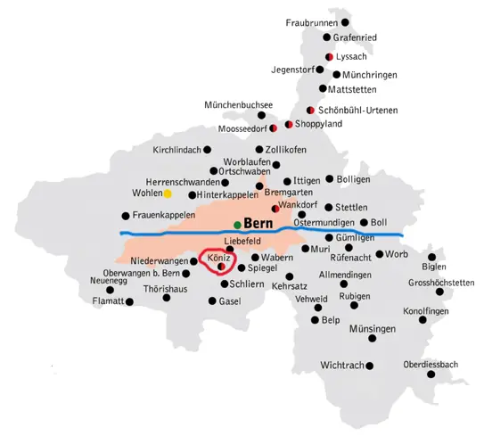
Beyond the city, YB has several more regional selections. Team Oberaargau Emmental covers the more rural northeast of Canton Bern. More significantly, YB is partnered with the clubs of the cantons of Solothurn and Fribourg – which each span multiple smaller cities but lack a professional club of their own. Their youth selections effectively belong to YB and feed into its academy system.
Below is a map of Switzerland. In red are the locations of YB’s non-city-near selections. The blue circle roughly outlines the territory from which YB can recruit into its selections. This doesn’t mean YB gets every talented player in this area or none from outside it - players still choose - but it represents their primary catchment. This circle explains why YB is one of Switzerland’s top academies: it covers a large, densely populated region with strong football culture. In black are the locations of rival pro clubs. This is what limits YB’s reach, talented players outside the blue area will typically go to whichever pro club covers their region.
All pro academies (14) in Switzerland have regional selections covering its surrounding territory, and together they cover the entire country. Every club, every area is scouted for “talent”.
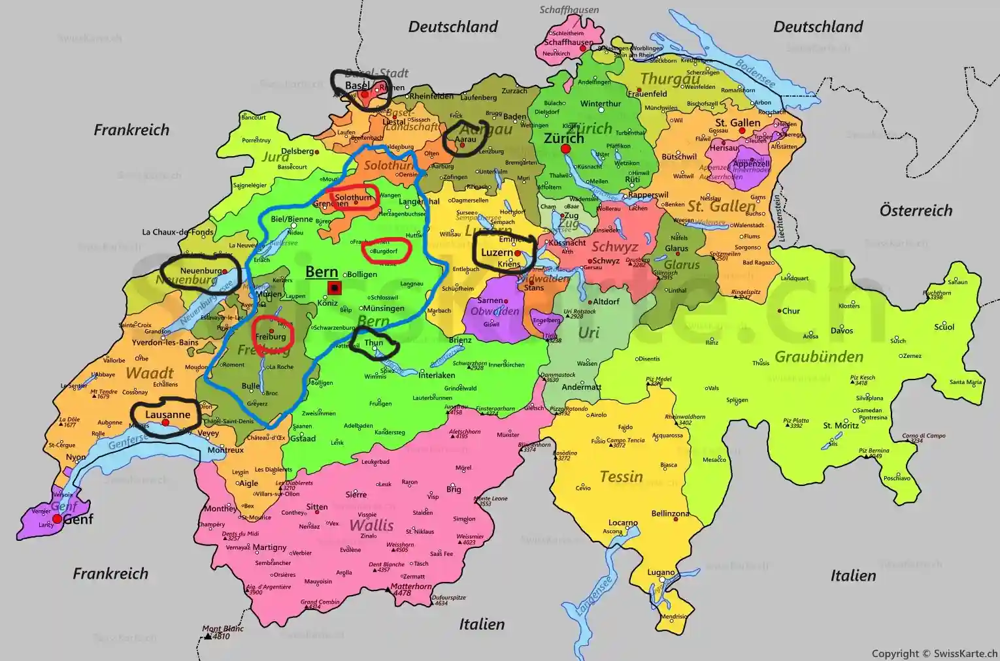
From the original 16,000 club football-playing boys per birth year in Switzerland, around 1,300 remain in regional academies - roughly 8%.
What does that mean in practice? My suburb, Muri-Gümligen, has a population of around 13,000. Given Switzerland’s birth rate, that’s roughly 55 boys per birth year, of whom just under half play club football—about 25. Of those, around 10% will be selected into one of YB’s regional academies: 2–3 boys per birth-year, which I can confirm is accurate. The kids in regional selections are simply the most talented in their town, club, and year.
The football selection system is structured as a pyramid: each year, fewer players remain. The sharpest cut comes at U15–U16, when regional selections transition to elite selections. Up until that point scouting continues, and players are regularly selected in and out.
Below is YB’s official schema showing all their academy teams by age group.
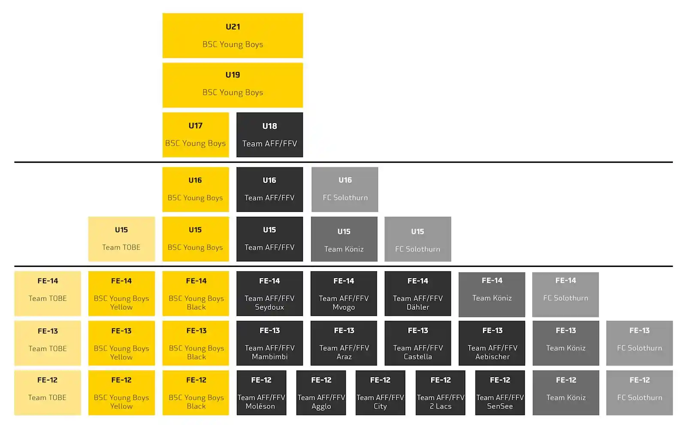
From U16 onwards Switzerland runs a single elite academy league with only the 14 pro clubs – the same ones that operate the regional selections. Most regional selections cease to exist, the ones that remain play in a lower-tier B academy league. At U15 there is still a west and an east elite league with many regional selections, and before that the distinction doesn’t exist at all.
At U16, the best players from all regional selections are brought together into a single elite team. For the first time, players from different cantons speaking different languages (especially French) commute long distances to train and play together. It’s also around this stage that top prospects sign their first youth professional contracts to prevent them from joining other academies.
To determine who makes the cut, each pro club assembles a selection from across its regional academies and plays it against those of rival clubs. These matches, combined with continuous assessment from U10 to U15, determine who advances.
Even from U15 onward (13-14 year old boys), the selection is pretty much entirely internal to the academy system. Players for the U16 elite selection are drawn from the regional academy selections, not from amateur football. This is another reason why it’s virtually impossible to make it if you’re not in the academy system from childhood. You’ve missed years of development that amateur youth football can’t provide – and even if you somehow matched that level, you wouldn’t be scouted. The academies are generally right not to look outside their system because the gap is just too large.
From U14 onward, national selections also begin. Scouts from the Swiss Football Federation watch the regional selections and invite players to one of three national team camps for further assessment and to eventually assemble the strongest possible U15 national team.
From the initial 1,300 boys per birth year in the regional selections, only around 300 remain in Switzerland’s U16 Elite League - roughly 25%, or about 5 out of every 20 players per regional selection.
After U17, there is no U18 elite selection and it skips straight to the U19. This means that two age groups merge and at least half the players are cut by definition. Then comes the U21 second team that competes in the adult leagues. According to the federation, only around 100 players per birth year remain from U19 onward.
All academies use a similar selection system. The difference with the top academies in the world is that they also scout other academies - nationally and internationally - and select from there too.
Before continuing with the selection into professional football, let’s look at the amateur system. What happens to the vast majority of kids not in the academies?
They stay in amateur football. As with the academy system, there are no proper leagues or rankings until U15–U16. From that point, there are four main tiers:
1) Youth League (formerly Coca-Cola League)
2) Promotion League
3) 1st Strength Class
4) 2nd Strength Class
These are all regional leagues, run by the 13 regional football federations in Switzerland, so they’re not nationwide like the U16 Elite Academy League which is run by the Swiss Football Federation. The Youth League is the top amateur tier, with one league per federation. Below that, my federation has two Promotion Leagues and even more 1st and 2nd Strength Class leagues. Clubs are freely promoted and relegated between the leagues based on ranking.
Amateur youth football also combines age groups: U15–U16, U17–U19, and U19–U21. This means the difference between leagues reflects not just quality but also age. A club might have one team of younger players competing in a lower league and another of older players in a higher league.
Due to age, players naturally get changed every year, so team strength depends heavily on the quality of a given age cohort. Then the league you play in also depends strongly on where you grow up, not just how good you are. Many players in the Promotion League or 1st Strength Class have the quality to play Youth League but don’t because their local club isn’t strong enough to field a team there. The Youth League is significantly stronger than the Promotion League and usually features the same clubs year after year, but the gap between Promotion and 1st Strength Class is smaller.
There is no scouting in amateur football. Selection is almost entirely internal to each club. The clubs in the Youth League tend to be from the largest suburbs with strong immigrant football culture or small cities, places with enough players to filter through and form a competitive team.
The average player from an average suburb or village will play in the 1st or 2nd Strength Class. If they’re from a stronger club and are good enough, they can play Promotion League. Youth League is already rare and not where the vast majority of guys will play.
How does it compare to the academies? It doesn’t.
Look, from all the dozens, even hundreds of clubs across the federation and all the amateur leagues just described, the regional academies select only the absolute best players. They take them at age 10 and train them professionally for over half a decade with resources, time, coaching and an environment that amateur clubs cannot match. Then at U15–U16, they select again across all their regional teams and cut around 80%, retaining only the best for the elite selection.
By U16, there is no comparison between the academy and any amateur team, even the ones in the Youth League. The winner of the U16 Youth League doesn’t get promoted into the U16 Elite League because it’s just a different level. Although it happens in rare exceptional cases; generally you can’t even go from the Youth League to the academy because the gap is just too large and that’s why they don’t scout it.
The Youth League is decent enough. A player on that level would easily be the best in an average friend group, class, even school or suburb. Many would be surprised by the talent outside of the academies. But at the end of the day, the elite academy selections are comprised of literally the top 1% of footballers in the country. Even if you’re in the top 2%, you don’t make it. YB can only take 20 guys per birth year, selected from thousands. By definition, they have to cut a lot of very talented players.
The top one or two teams in the Youth League are often entirely made up of former regional academy players who didn’t make the elite selection, or who still hope to. These teams absolutely dominate the league and win every game like 6-0. Sometimes they’ll play a friendly against the academy selection and they then in turn get destroyed.
A team of regular guys would get destroyed by a 1st Strength Class team. That team gets destroyed by an average Youth League side. That team gets destroyed by the top Youth League team. And that team gets destroyed by the elite academy. There are many levels to this sport.
Next, I want to explain the men’s league system in Switzerland and compare it to the youth levels. Here are the tiers:
1) Swiss Super League
2) Challenge League
3) Promotion League (same name as the amateur youth league)
4) 1. Liga Classic (3 groups of 16 teams)
5) 2. Liga Interregional (5 groups of 14 teams)
6) 2. Liga Regional (one or two per federation)
7) 3. Liga
8) 4. Liga
9) 5. Liga
The first five tiers are run by the Swiss Football Federation and also compete in the Swiss Cup. The lower tiers are run by the regional federations.
Now, how do the youth leagues compare in level of play? If a youth side were an adult team, where would they rank? Here’s the approximate equivalence:
- 2nd Strength Class ≈ 5. Liga
-1st Strength Class ≈ 4. Liga
- Promotion League (youth) ≈ 3. Liga to 4. Liga
- Youth League ≈ 2. Liga Regional to 3. Liga
This doesn’t look good for the youth leagues, does it? The top amateur youth league – from which you can’t even be promoted further – is only equivalent to 6th or 7th tier men’s football. How is that possible? I'll explain.
One of the main reasons is simply numbers. Youth leagues are structured by birth year, each league represents a single age group. Men’s leagues draw from over 15 age groups at once. More players means more competition, which pushes the level higher.
Then, the top two tiers - Super League and Challenge League - are fully professional and by definition unequatable to youth football. Only the very best players from the elite academies reach this level, and even then, many spots are filled by foreign players to compensate for the limited domestic talent. This is true for every professional league, and of competitive professions outside football too.
The third and fourth tiers—Promotion League and 1. Liga Classic—are where the U21 elite academy teams compete. These are semi-professional leagues filled with players who have spent their entire lives in the academies but didn’t survive the final selection into the professional leagues.
So the equivalences look like this:
- Elite Academy Selections ≈ 1. Liga Classic to Promotion League
- Regional Academy Selections ≈ 2. Liga Regional to 2. Liga Interregional
The elite academies account for the top four tiers before we even reach amateur football.
To put it into perspective:
- 8th–9th tier (4. Liga, 5. Liga): Regular guys, Sunday league football. This is where most hobby players end up. The normal distribution peaks at 4. Liga.
- 7th tier (3. Liga) Serious amateurs. Lifelong players who are better than most hobby footballers.
- 6th tier (2. Liga Regional): Top regional amateur league.
- 5th tier (2. Liga Interregional): Top amateur league nationally. Everyone here has either been through an academy or was among the best amateur youth players. Very rare to find players of that level already.
- 4th tier and above: Semi-pro and pro – exclusively the domain of the elite academies and their most talented players.
Fifth and sixth tier Swiss football might sound low, but these are serious footballers who’ve been better than almost everyone around them their entire lives. If you play at all, even 5. Liga, you’re already better than most young men at football.
The difference between the academy and amateur youth sides should make sense now. The kids in the academies are made to play third-tier Promotion League semi-professionally at 18. The average hobby player – “you and your mates” – will play 8th or 9th tier. That’s five leagues apart and each league is a significant jump in quality.
Yet, the U21 academy teams are still just the local boys from the city and its surroundings, albeit the most talented ones. The Swiss Super League is one of the top 25 pro leagues in the world, which basically makes it a worldwide academy selection.
Let’s return to where we left off. There are 100 players per birth year in Switzerland’s U21 elite academy teams, competing in the third and fourth tiers. What happens next?
Switzerland produces 15 professional footballers per birth year. That’s another 85% cut from the U21 to the pro leagues.
Of those 15, around half won’t play in a good league for good money. The other half will have decent careers at the Swiss Super League level or above.
And from those 15, on average only 1 will rise beyond the Super League to be a starter at a decent club in the top 5 leagues and the Swiss national team.
Here’s the full cascade of the selection system:
- 40,000 boys per birth year exposed to football
- 16,000 playing club football (60% cut)
- 1,300 in regional academies (92% cut)
- 300 in elite selections (77% cut)
- 100 in U21 reserve teams (67% cut)
- 15 in professional leagues (85% cut)
- 1 in the top 5 leagues and starting for the national team (93% cut)
So 1/40’000 reaches the top five leagues, meaning 99.9975% of boys get cut somewhere along the line. It sounds bad but excluding Japan and South Korea, all of Asia still has over 4.5 billion people and doesn’t produce a single player per year for the top five leagues.
It’s not that Asian countries don’t select. It’s that Switzerland has a better machine: immigrants, informal play from childhood, clubs and pitches in every neighborhood and school. Selection only works if there’s something worth selecting.
The Swiss national team draws from around 15 age groups across 14 elite academies, roughly 5,000 elite academy educated players competing for 20 spots. It’s one of the top 20 national teams in the world, frequently ranked even higher in recent years. Yet, it produces 15 professional footballers per birth year, most of whom play in dog-shit leagues.
In England, 1.5 million boys play organized youth football. Only 12,500—less than 1%—are in academies. Those kids train 4-5 times a week, two hours a day, from as young as 12, many live at the academy as children, and they face constant threat of release because at every stage large portions are brutally eliminated. They spend thousands of hours training as a child. And still, 99% of them are cut inside the academies. From 1.5 million boys to 180 who make the Premier League.
That’s the reality of professional football.
The academies screen millions of children, take a few thousand of them through a decade-long selection machine, eject 99.5% of them with nothing and then take credit for the ones who would have been extraordinary anyway.
Football has the largest global talent pool of any profession—over 300 million players. But there’s only a few dozen elite footballers. Because of that, football is the most competitive industry on earth, by far. No sport, field, university or profession comes remotely close.
The elite academies are extremely proud of that exclusivity.
There are five levels to this selection system:
- General Population
- Amateur
- Academy
- Professional
- Elite
Each level has its own internal selection process, and only when you reach the end-selection of one level do you enter the next.
The Youth League is the final, internal selection of amateur football. From the regional academies into professional football represents the academy selection process. From the top ~30 leagues into the top 5 leagues in Europe, and from there into the elite clubs - that’s the selection process of professional football. Manuel Akanji is one of the very few Swiss players to have gone through this entire process.
Every child selected into an academy is a chosen one and feels special. They all desperately want to be pro footballers and believe with certainty they will be. And trust me, they don’t dream of playing second-tier Swiss Football for a garbage wage – yet even reaching that is extremely unlikely. They dream of being a star player at one of the top clubs in the world. But virtually all of them will have to find a different job than pro footballer. They’re taken straight from the streets into the academy and when one in a million of them does reach elite football, no wonder it leads to ego.
The elite academies don’t run these selections for fun, they’re a business. Clubs depend heavily on their academies and many would collapse without them. Two reasons: first, the academy must provide players who can perform for the first team and push the club forward sportingly. Second, clubs can sell academy graduates -which cost them nothing - for significant revenue.
Real Madrid makes a lot of money every year selling academy products. Barcelona’s first team would be nowhere without theirs. The entire multi-billion dollar football industry depends on these academy selections to keep it alive.
This abnormal selection system built on scouting children and filtering them so intensely over so many years is unique to football and in this form does not exist in any other part of society.
Once you reach an elite club, there’s nowhere higher to go. What begins then is the selection from the roughly 100 elite footballers in the world to the best player on earth. Over 99% are cut again. And above even the best stands Messi, the greatest of all time.
Football’s final selection will be for the Prophesied Child that surpasses Messi.
The entire world population is grinded through this selection machine. This includes you, whether you were eliminated by geography, circumstance or actual assessment. Over 130 million babies are born each year and all of them will be grinded through this machine.
How many more boys do you need to create a better player than Messi? One billion? Is ten billion enough? A hundred billion? You see how ridiculous that is, right?
Stop relying on the machine because all it can do is select. Feed it a quadrillion children, no amount of sieving produces gold from sand.
Lamine Yamal is the selection system’s ceiling and end product. Messi is a statistical error and does not belong to it.
What if Messi isn’t an unrepeatable miracle but an accident? A configuration of extraordinary circumstances that can be reverse-engineered and systematized?
And of course selection is necessary and I’m not against it. I dream of a World Academy and I believe it would serve the greater good of football. So let me be clear: there is not one person in history, alive or dead, with a more elitist worldview of football than me. None. Some people are chosen by football and some are not and that should be ruthlessly maintained. I’m not attacking the elite academies because they’re too elitist. I’m attacking them because they’re not elitist enough. A truly elitist system would be obsessed with finding and producing the absolute ceiling of human footballing ability.
If selection were sufficient, then scaling inputs would scale outputs. The population-talent paradox disproves this.
A selection mindset says talent is out there and our job is to find it. A development mindset says talent doesn’t exist until it’s built. The elite academies have the selection mindset because they can’t build it. It’s pure cope.
When you get deselected? It’s always your fault and problem, never theirs.
They don’t even have any other ideas. All they can and want to do is select! That’s why they scout every remote corner of the globe. To select talent, not to create or develop it.
The selection system guarantees football’s stagnation. Stop waiting for miracles and start manufacturing them.
The Prophesied Child will never come from the selection system. It can only come from a development system.
And that is what The Theory Of Football is.
“Playing football is simple, but playing simple football is the hardest thing there is.”
— Johan Cruyff
This chapter covers individual tactics: what you should actually do on a football field and why. There is a correct way to play football. This is the one thing the academies actually teach well. It’s how I play football, how Vitinha, Cubarsi, Cherki play. I’ve never seen a guide like that anywhere.
It’s not absolutely necessary, but if you haven’t read “Fundamental Theory” I recommend doing so first.
Starting with the most interesting part: what to actually do when the ball is at your feet.
Pre-Reception and Scanning
What you should do with the ball starts before you receive it.
Before receiving, maximize the information you have about what is going on in the field: Where are my teammates? Where are the opponents?
And most importantly: What would I do if I receive the ball right now? What does the team need?
At any moment in the game, a player should be able to answer that, but especially before receiving. This requires total focus, and one essential
action: scanning.
Scanning means turning your head and looking in all directions to absorb information. You need data not just from in front of you but from your sides and behind. Center backs need scanning the least because they sit deepest with the game largely in front of them. Midfielders and players between the lines need it most, needing full 360-degree awareness. Aim to have the same information as the people on TV would.
Why does this matter? Because it allows you to play much faster and take much better decisions. Amateurs often only start analyzing the situation after receiving the ball, if at all. This kills speed of play.
You can’t plan everything in advance and situations change as you receive. But you should know the first thing you’ll do before you get the ball: Whether you’ll pass one-touch and where, or what kind of first touch you’ll take. That’s the minimum. It’s what every pro does and its one reason why they can play so quickly and efficiently.
Football largely is executing the right decision at the fastest pace. This is the absolute foundation of that. Non-negotiable at high levels.
The benefit of scanning may be limited for amateur players. If your technique isn’t good enough, adding 360-degree awareness on top can make things worse. I remember a comment on a video emphasizing scanning where someone wrote: “I do this a hundred times a game and I’m still shit.”
The First Principle
If you’ve internalized the game state before receiving, your next action should follow logically from what puts your team in the best position. But this requires game intelligence and experience, so here are the principles.
The first instinct should always be a one-touch pass back to whoever gave you the ball. Why? It’s the simplest action, highest success rate, maximally fast, retains possession, and executable in almost any situation.
“Whenever he received the ball and had not scanned and sampled the information, he played the ball back from where it came. He took no risk when he didn’t have the information.” — Geir Jordet on Xavi
More fundamentally, it’s the easiest way to fulfill the first principle of on-ball play:
1. Do not concede unnecessary turnovers.
Careless turnovers are the worst thing you can do with the ball. You lose possession, squander your team’s chance to create, and gift the opponent a potential counter. This principle - simple pass back as default - is especially critical when pressed, uncertain, or lacking information about the game state.
What makes a turnover unnecessary? Losing the ball when you could have retained it, through a decision where risk and reward didn’t align. A midfielder turning into pressure to dribble when he could’ve easily just passed back. Even if it had worked, the reward didn’t justify the risk. A justified turnover could be a winger losing an isolated 1v1 against the fullback. He could’ve passed back, but here risk and reward aligned. So the principle isn’t “don’t lose possession at all costs”, risky play is often beneficial. Unnecessary is the key word.
A team that just doesn’t lose the ball unnecessarily and stupidly will often automatically gain space, create chances and be extremely difficult to beat. You could even argue that the main difference between all levels of football is the rate of unnecessary turnovers.
First Touch
If you don’t pass one-touch, you’ll take a first touch. Its purpose is to set up your next action. Usually a pass.
If you’ve scanned beforehand and know your next action, the first touch picks itself. A midfielder receiving from his center back who wants to switch play to the left wing takes a directional first touch toward the left, then plays the pass. If he wants to turn and dribble forward, his first touch sets that up instead.
When pressed, you take the ball into space, away from the defender. When not pressed it’s usually back-foot receptions and half turns to face play. As a general rule, take your first touch into where the space is.
First touches are absolutely essential for quick play, press resistance, ball progression and any other high-level on-ball play.
Principles Of Play
But what should you actually do?
2. Play forward
The more you can pass or dribble forward instead of sideways or backwards, the better. If you can turn as you receive, turn.
Why? It gets you closer to the opponent’s goal, the main determinant of scoring. It pushes their defensive block back. It attracts pressure on the ball, which creates gaps elsewhere. And if you lose the ball higher up the pitch, they have further to travel to threaten your goal.
But this principle isn’t absolute. Playing forward often increases turnover risk, which can clash with the first principle. It’s always a risk-reward calculation. A sideways pass to a teammate in space is better than a forward pass to someone who’ll certainly lose it.
3. Play into space
The most intuitive principle that even amateurs follow instinctively. Space grants more time to operate, which enables forward progression, ball retention and better actions.
The 0th Principle: The faster the better
“It’s not about moving the ball, it’s about moving the opponent.”
- Pep Guardiola
Amateurs don't understand this at all. But it underlies everything. Covered extensively in “Speed Is The First Principle”: every unit of time you do something slower is a unit of time you grant your opponent to optimize their spatial situation.
These three principles - don’t concede unnecessary turnovers, play forward, play into space - follow directly from what is inherently valuable in football: possession, goal-space (gS), and player-space (pS). Speed and risk-reward decision-making is how you achieve and choose between them.
They’re general principles, mostly true all else equal. There are always exceptions.
Amateurs have an infinitely harder time with the 0th and 1st principles than with the others. If anything, amateurs play forward too aggressively – unsuccessfully so – and overvalue playing into space, because those two principles are so intuitive.
What you should actually do is what generates the most expected value, based on risk-reward, time, and what your team collectively needs. The framework for this was covered in Fundamental Theory.
How To Play Football
To understand how to play football, it helps to see how not to. Amateur football provides unambiguous answers.
Vision
Scanning isn’t just important before receiving, it’s essential during and after. You should always aim to look at the ball as little as you possibly can. You can’t make effective decisions without information about the game state, you won’t know where to pass, where to dribble, or what to do at all.
This is one of the biggest separators between pros and amateurs. And yes, it’s easier said than done, it requires extreme comfort on the ball.
Speed Of Play
Amateurs just keep the ball way, way too long. They dribble so much, when they shouldn’t be. Sometimes it’s ego, sometimes lack of vision, sometimes a lack of ability to play faster, but often because they simply don't understand and can't apply this principle. In football at a high level, there is unambiguously no more important concept than speed of play.
But because they've only played football at a low level and never went through an academy, they simply don't seem to be aware that faster is better than slower. They seem to think holding the ball longer means playing better, standing out more. Thus they often hold it as long as they can. But in football you can be both the most notable and the worst player on the field.
The rule is: take the fewest touches you need. If you can do something in one touch, don’t take two. If in two, don’t take three. This doesn’t mean always playing one-touch, it means for any given action, don’t take longer than necessary to execute it.
Amateurs receive the ball, start dribbling, look around, then eventually make a pass they could have played in two touches at a quarter of the time and risk. Holding the ball isn’t inherently bad. Holding it for no productive reason is.
This doesn’t mean get rid of the ball as fast as possible. It means whatever you do, faster is better than slower.
Controlling The Tempo
“Faster is better” applies to executing a given action. It doesn’t mean doing everything as fast as possible all the time, that leads to hasty, counterproductive play.
When is slowing down or “La Pausa” justified?
- When you have no better options. Sometimes any pass or dribble leads to a worse position. When waiting costs nothing, feel free to. Don’t pass for the sake of passing, don’t rush.
- When waiting for teammates to get into position, making a run, creating a passing lane.
- When baiting defenders. Inviting pressure can be strategic: it opens space behind the pressing player, tires opponents, and buys time. You’re purposefully drawing them in.
Holding the ball attracts pressure, creates unpredictability and adjusts the rhythm. But it should be calculated and come from reading the game state and deciding that quicker action isn’t beneficial right now.
Don’t treat the ball like a hot potato but slowness cannot be the default either. Speed is the default. Passing, dribbling and deciding quicker makes the game more fluid, possession more secure and forces the opponent to constantly adjust. The majority of situations benefit from faster play. La Pausa is intentional calmness, not just being slow!
Everything is risk-reward at the end and one has to get a sense for when slower is better. It requires calmness and awareness of what the team needs.
Simple Play
Amateurs consistently aim for plays that are way too complicated and ambitious. They seem to believe they must do something extraordinary every time they get the ball. Simple, quick passes feel beneath them.
It’s a strange phenomenon. Amateurs play the most complicated football while pro’s play the simplest, yet amateurs are exactly the ones least able to play complex football. They genuinely prefer a 10-meter pass to a 3-meter one, as if difficulty and risk make it inherently better. They’d rather dribble then pass than just pass. It’s shocking how willing they are to launch long balls and through-balls that result in turnovers almost every time.
The rule: all else equal, simpler is better. Why? It’s less risky and quicker, serving both the 0th and 1st principle. Long balls are risky, only play them when risk-reward aligns. Play short if you can. Turnovers are costly, especially in high-level play.
This isn’t anti-dribbling. The single most valuable thing in football is a good dribbler taking risk-reward aligned chances. But that’s not what amateurs do.
Simple passes might seem limiting for amateurs but on higher levels the ball flows fluidly and you’ll get it multiple times, played into your feet.
Amateurs are also extremely hesitant to pass to teammates with little space. But didn’t I say playing into space is good? Yes, all else equal. High-level football requires constantly playing into teammates in tight situations because you won’t be able to play through the press or a defensive block without it. Amateurs rather dribble or go long, both leading to unnecessary turnovers.
The paradox is that at their level, they’re partially right. Their teammates will lose the ball. But at higher levels, you must demand more from your teammates. They can handle it, the game becomes faster and simpler, and those difficult situations are precisely where superior ability makes the difference. If you pass the ball successfully and your teammate loses it, that’s THEIR fault. You have to trust your teammates, else you can’t play the game of high-level football.
Watch elite football, the best players in the world consistently choose the simplest plays. They just execute the right ones at extreme speeds and accuracies.
Patience
Amateurs have none. They immediately attempt the goal, the assist, the risky dribble. They refuse to play backwards, to wait, to let the ball circulate.
Yes, playing forward is better, but not conceding unnecessary turnovers is more important. Many are avoidable simply by being willing to pass sideways or back.
Patience means thinking beyond the immediate moment. What does your team need over the next 30 seconds, not just the next 3? Where should the ball move over the next 5 passes? What will the opponent do? High-level football requires a sense of time-value. In this way it resembles chess: you must learn to truly see the position, assess what it demands, and act not just for the present but for what comes next. Sometimes the best thing you can do right now is set up something better later.
The Dilemma
This advice assumes high-level football and doesn’t necessarily always apply to amateur football. At this level, short, quick passing is often genuinely a bad idea. The same basic pass at Arsenal can be a horrible idea at Sunday League because it results in something totally different.
This is why Kroos-type players don’t exist in amateur football. Not just because no one is that skilled, but because the role itself cannot function. That style depends on the character of the high-level game.
Many amateur “mistakes” are actually correct adaptations. When teammates will lose any ball under pressure, going long, or holding the ball becomes rational.
And you can’t simply choose to play faster, simpler and better, it’s highly dependant on technical skill.
Quick Tips
Stand still after receiving. Amateurs reflexively dribble the moment they get the ball. After a back-foot reception, your opponent still has ground to cover and a tackle to make before winning possession. There’s no reason to panic. Dribbling closes the distance between you and defenders and restricts your passing angles. You should stand still, assess the situation, and only then act with purpose. Every touch should serve a specific goal derived from reading the game states. This requires learning to genuinely be calm on the ball. Refuse to act unless you know what you’re doing.
Play to the correct foot. Every pass should arrive on the foot that’s already oriented toward your teammate’s next action. If you’re on the right wing passing back to a midfielder who needs to switch play left, the ball should reach his left foot, else he has to adjust, which costs time and space. The margin for error in passes is roughly 20 centimeters, after which the pass often forces adjustment that creates space-time loss. This is why hard, precise passing is key to the pro game.
Look for one-twos. Pass and move is fundamental and its effectiveness is almost absurd. It’s valuable even when it doesn’t complete because defenders must either follow you and leave gaps behind, or hold position and let you run free. You should be constantly looking for them.
Play into zone 14, the central area just in front of the penalty-box. It’s where the most chances are created from.
Bait the press. A compact, deep defensive block is extremely difficult to play through because there are no spaces to exploit, so you need to create them by making the opponent move. Top-teams will often bait the press by having a center-back wait, step on the ball and play it sideways. When the opponent presses, it creates forward momentum and leaves space behind them. It’s why playing backwards can be so valuable: if the opponent pushes up to press, they stretch themselves vertically. Unlocking deep blocks requires side-to-side and back-to-front ball circulation, quick combinations, off-ball runs, dribbling, one-twos and patience.
Call for your teammates. “Man on,” “time,”, “turn,” “switch,” “one-two,” “press”, etc. give your teammates essential information they can’t always gather themselves. Football needs constant coordination and communication.
The right mentality. Always want the ball, play with full conviction that everything you do will succeed. Be extremely intense, yet calm. Never be afraid of taking risks or making mistakes, never let fear, insecurity, or worry creep in, no matter what.
Press-Resistance
CCD is the key to press resistance because it lets you attack space quickly, shield the ball, and create passing angles.
When pressed, your options are: turn it into a 1v1 (easier than normal 1v1’s because the defender’s forward momentum works against them), shield the ball with body and arm by pushing it to your strong side, or dribble away using changes of direction, pace, feints, fakes and skills. Exploit the defender’s momentum by moving opposite to their direction. A classic combination: 90° outside touch, accelerate so the defender chases beside you, then 180° outside turn. The ball stays shielded and you exploit momentum. Always maintain vision, dribble with purpose and find the free pass ASAP.
Press resistance may be football’s most important quality because it maps almost directly onto ball-handling and athleticism, which most determine overall ability. Messi is the greatest ever and the most press-resistance, that’s not a coincidence.
1v1 Dribbling
1v1 dribbling means running at a defender with intent to get past them. The goal is always the same: go around them left or right using pace and CCD. Not fancy skills, they’re too slow.
Run at the defender with the highest speed you can control and have the space for. More pace means more forward momentum, which means: you’ll go past at greater speed, the defender has less time to react, and it’s harder for them to catch up. The slower the attacker goes, the more aggressive the defender can afford to be. The defender must track back to generate backward momentum offsetting yours, and the faster you go, the harder that becomes. Even if you don’t beat them, you’ll gain goal-space. Watch winger-fullback duels, the threat of going past is often enough to make the fullback concede significant ground.
As you approach, you’ll eventually cut left or right to get past. Whether you do this 1 meter or 5 meters from the defender depends on risk and space. Further out is safer (you can still stop) but closer is more effective because it gives less reaction time. Going wide earlier also requires more horizontal space since you’re traveling further laterally.
As distance closes, someone must commit – ideally the defender tackles and you react and go past. In tight space, slow down, be patient, keep baiting and gaining ground. This is when body feints, step-overs, skills, and changes of direction and pace become effective. At high speed with space, these just slow you down.
Read the defender. Watch their feet and body positioning. A proper defensive stance is sided one way, attack their back side. When they commit or move forward, go past.
The actual move past is usually just a 45° turn either way. A 90° outside followed by a 45° inside is also very effective especially when they’re pressing you. This knocks the ball past their side while creating more distance than a straight 45° would. Going through the center with a nutmeg is always an option too.
CCD gives you safety, if you commit to a direction and it won’t work, you can usually cancel, move sideways and retain possession.
That’s how dribbling works, how Messi and any good dribbler does it. But dribbling at pace while maintaining vision and control is the single hardest technical action in football.
A team is divided into three lines: defense, midfield, and attack. They’re called lines because the players in each group roughly form a horizontal line across the pitch.
Formations are described with three numbers—4-3-3, 4-4-2, etc—representing how many players occupy each line from defense to attack. A 4-3-3 means 4 defenders, 3 midfielders, 3 attackers. This sums to 10 because the goalkeeper is constant and goes unnamed. Generally the goal is to progress the ball from defense, to midfield, to attack.
The foundational concept of football is space.
Vertical space is the distance between a team’s deepest defender and its highest attacker—essentially the gap between the defensive and attacking lines. Within this, there are also the spaces between lines: the gap between defense and midfield, and between midfield and attack.
Horizontal space is the width a team covers—the distance between the rightmost and leftmost players, and the spacing between players within each line.
When defending, a team wants to be compact: minimal vertical and horizontal space between players. Watch any pro team defending deep - they form a tight block, players close together. That’s a compact defensive shape.
Why?
“What is defending? Defending is a matter of how much space I must defend. If I have to defend this entire garden, I’m the worst. If I only have to defend this small area, I’m the best. Everything is about meters.”
- Johan Cruyff
Compactness minimizes the space opponents can exploit. Without compactness, attackers can receive the ball, turn, advance and create.
How does this apply to individual play? Compactness tells you how to move when the opponent has the ball.
You can’t ensure compactness alone – it’s a team shape – but your movement should minimize space for the opponent and maintain reasonable distances to teammates. Close gaps, move as a unit.
Say you’re a midfielder and your attackers start pressing. The space between attacking and midfield lines is growing. You move forward to maintain compactness, otherwise someone receives the ball in that gap. Same logic when the ball shifts to the left side – you shift collectively toward the ball side.
Compactness is always essential in defense and rarely abandoned by pro teams, whether when pressing high or defending deep.
This is partly why pro games are lower-scoring and can appear slower, with players seemingly having more time on the ball. Pro teams prioritize not conceding, and compactness is the foundation of that.
In possession, the opposite applies: a team wants to be stretched—wide and deep, with space between players. Why? Same logic as before. Defending a small area is easy; defending a large one is hard. If your entire team occupies a five-meter radius, one defender could cover it.
The goal in possession is to stretch the opponent’s compact shape. You do this by playing wide, playing deep, and circulating the ball to force movement in the defensive block. Movement creates gaps, gaps create chances.
This is why teams immediately expand from compact to stretched after winning possession. It’s why runs behind the defense matter and why teams in possession have players hugging each touchline.
But being stretched in attack is not as essential as being compact in defense.
First, transition vulnerability. When you lose the ball, you become the defending team - but you’re still stretched from attacking. Opponents exploit this with quick counters.
Second, counter-pressing. Many teams aim to immediately win the ball back after losing it. This is far easier when compact because the distances to press are shorter and the spaces smaller.
Third, passing risk. Larger distances between players mean longer passes, which are more likely to be intercepted. Short distances enable quick combination play, which is essential for keeping possession and moving the opponent.
Fourth, deep blocks. Stretching doesn’t help much against teams that sit compact and don’t press. The best chances come from possession in advanced central zones—exactly where defenses concentrate. Sometimes the attacking team needs to overload that zone rather than stretch away from it.
So stretching matters at the boundaries – at least one player far left, far right, deep, and high to occupy the full dimensions. But within that frame, closer distances are often advantageous. The attacker’s goal is possession close to goal, that’s a scoring chance. To get there, stretch the defense, push it back, or exploit the space behind it.
Blocks, Pressing, Possession
Defensive block height describes how far up the pitch a team positions itself when out of possession. A low block means most players defend in their own third. A mid block sits around the midfield. A high block pushes the defensive line up until the halfway line.
High block, high line, and high pressing aren’t identical concepts but function together in practice. When you defend high, the open space sits behind your defense, near your own goal, exactly where it’s most dangerous. Opponents can’t just occupy that space due to offside, but balls played in behind are extremely dangerous. To defend that teams use the offside trap, fast defenders and a sweeper keeper responsible for covering the space behind the line. It’s why high lines require constant pressure on the ball, you can’t allow easy passes over the top.
The advantage of pressing high is suffocation. The opponent never gets time or space on the ball, possession is easier to retain and win, and when you win it back you’re already close to their goal and the opponent far from yours. Gegenpressing - immediately hunting the ball after losing it – is naturally part of that approach.
“The best way to defend is to have possession in your opponent’s half.”
- Johan Cruyff
Low blocks are the opposite approach. Low blocks still involve pressing, just initiated much further back. They congest the most dangerous zone: around the penalty box. Deep blocks are extremely difficult to break down because there’s no space to exploit. The tradeoff is that you concede possession and winning the ball means a long way to travel before threatening their goal. But it also forces opponents to commit players forward, leaving space behind for counters. Lower-ranked teams often adopt low blocks against elite teams because defending and counter-attacking into space requires less skill than playing through a press and breaking down a compact defense.
Low blocks tend toward zonal marking, players defend specific areas and shift as a unit. High pressing tends toward man-orientation, where each player tracks and pressures a specific opponent. Mid blocks offer flexibility, capable of transitioning into either depending on the situation.
Off-Ball play is about your movement and positioning when your team has possession but you don’t. The first principle is straightforward: you have an assigned position that you shouldn’t stray too far from without purpose.
Positioning Distance
One key question is whether to move closer to the ball carrier or further away. Both have advantages. Proximity shortens passing distance, reduces risk, enables quick combinations and more effective counter-pressing.
"Do you know how Barcelona win the ball back so quickly? It's because they don't have to run back more than 10 meters as they never pass the ball more than 10 meters." — Johan Cruyff
Distance stretches the defense and creates space. If you’re five meters from a pressed teammate rather than one, that’s four additional meters the defender must cover to reach you.
Whether you’re a viable passing option matters here. If you can remain further away while still being easily reachable, there’s little reason to come closer unless you’re deliberately entering that zone. But distance allows defenders to close your passing lane more easily, and moving nearer can be necessary just to stay involved. You can also test your marker by moving closer and seeing how far out of position they’re willing to follow. The question is always where you want to drag defenders and what space that opens.
Two examples illustrate the logic:
First: you’re a midfielder positioned freely between the lines while your center-back has the ball. Moving closer would be counterproductive. You’d collapse your own team’s space, and when you receive, the ball will have progressed less distance forward than if you’d simply held position.
Second: same setup, but midfield is crowded, you’re not a passing option, and your center-back is being pressed. Now dropping closer makes sense. You create numerical advantage in buildup, give your teammate an outlet, and enable combination play to break the press.
The question isn’t closer or further but what spatial situation you create. Two principles generally hold: being a passing option is good, and occupying free space is good because it grants you time, forces opponents to cover more ground, and gives you freedom to operate.
Movement And Runs
Movement has clear benefits: it’s unpredictable, drags defenders to create space for teammates, and allows you to attack space. Runs behind the defensive line are especially crucial. But movement has costs. It consumes energy, can pull you into spaces you shouldn’t occupy, and makes you a harder passing target. A stationary player is easy to find, a moving one requires the passer to calculate trajectory and timing, and puts the receiver in a more difficult position to process the ball.
Pep on Rodri: “Last season he moved too much. The holding midfielder has to be there—don’t move. Be there.”
Sometimes the most valuable thing you can do is hold position, even if you’re not immediately a passing option, because that’s the space your team needs occupied.
Don’t overprioritize getting the ball. Off-ball positioning is also about stretching the defense, binding markers to create space elsewhere and maintaining team shape. A winger holding width might never touch the ball on a given attack, but their presence pins the fullback and opens the half-space. Be where your team needs you to be.
Off-ball movement is absolutely essential, but should be purposeful. This matters more at higher levels where the game is built on clean technical football into teammates’ feet, while the amateur game is extremely vertical and turnover-heavy. The general principle: move to occupy the right spaces, not to look busy.
Other
The half-spaces and areas between the lines are difficult to defend because responsibility is unclear and no opponent is directly assigned there. Receiving in these zones progresses the ball and creates problems for the defense.
Don’t align horizontally with your teammates. When players stand on the same line, a single defensive line can cover all of them. Staggered positioning creates depth and harder passing angles to defend.
Actively form triangles with nearby teammates so you always have at least two passing options. Triangles are difficult to press because the defender can’t cover both outlets.
Scanning stays key.
Overloads
An overload is a numerical advantage in a specific zone, at least one more player than the opponent has there. This is one of football’s most important concepts because overloads guarantee a free man, which helps retain possession and progress the ball.
Common examples: the 2v1 against a fullback when a winger combines with an overlapping fullback, building from a back three against two pressing forwards (3v2), overloading the midfield, and the natural 11v10 in buildup because the opponent’s goalkeeper doesn’t press while yours participates in possession.
When you create an overload, the opponent responds by committing more players to that zone, which opens space elsewhere. Football is a constant shifting of numerical advantages across the pitch. Generally, shift toward the ball and look to create overloads near it or where it’s going next.
This is partly why possession football works: players stay close, form overloads, and use quick combinations that outnumbered defenders can’t cover. Long passes can also exploit this, if you’ve committed players to the target zone beforehand, you create an overload to win the second ball and continue.
Summary: Off-ball play determines what’s possible on the ball. The spaces you occupy, the defenders you pin, the runs you make shape the game situation. Keep asking where the team needs you and what your positioning actually accomplishes. The rest follows from there.
Defending is what you do when the opponent has the ball. It starts with scanning and reading the game state to determine which spaces you should occupy and what you should do.
The worst thing that can happen defensively, besides conceding immediately, is allowing a progressive pass between two defensive lines to a player who can receive and turn. It’s a low-risk pass that eliminates multiple defenders at once. The players from the bypassed line are now behind the play and if they choose to recover, they must sprint back, which forces the entire defensive block backward. Allow this just twice during buildup and you literally have an opponent running directly at your backline.
The inverse is equally true: receiving between the lines, turning, and progressing is the single most valuable basic action in possession.
To prevent it, players in each line must scan behind them to identify and cover the passing lanes that would allow that pass. If an opponent positions himself between lines in front of you, you should either intercept the pass before it arrives or prevent him from turning once he receives.
Beyond this, defending is about cutting passing lanes, occupying the right spaces, overloading dangerous zones, shifting as a unit, and maintaining compactness.
Pressing
Pressing is advancing towards an opponent in possession of the ball.
There should always be some pressure on the ball. Without it, opponents can face forward, pick passes, and operate freely. The only exception might be goalkeepers and deep defenders during buildup - and even then, the players who would press them instead focus on cutting the passing lanes and covering the spaces that would make their freedom dangerous. Beyond the halfway line, and especially in creative zones near the penalty area, pressure must be constant and intense.
After you lose the ball, you either press or cover and close down space and passing lanes.
Key principles:
Pressing is collective. It cannot be effectively done as a single player unless the opponent is as bad at football as you are. You’ll be bypassed, having wasted energy and conceded space. Pressing creates space behind you. For every meter you advance, one meter opens up behind. Either the team presses together or no one does.
The goal of defending is not conceding, not regaining possession. Focusing on winning the ball back leads to reckless decisions. Focusing on protecting your goal leads to disciplined positioning – which paradoxically often forces turnovers anyway because opponents run out of good options. Many goals could have been prevented if defenders prioritized not conceding over chasing the ball.
Pressing cues signal when to press: targeting weaker players, back-passes, sloppy passes or heavy touches, long balls, or when the opponent is cornered near the sideline, the touchline functions as an extra defender.
Pressing technique: Press aggressively to close space quickly. Read the opponent’s eyes, they usually pass where they looked. Use shadow covering: position yourself between the ball and another potential receiver and press. This takes out two players at once, as the opponent behind you is covered by your “shadow”. Pressing trap: press from a specific direction to close off one side and push the opponent toward the sideline.
The principles of defending are the inverse of the principles of on-ball play: deny forward progression, deny space and win the ball back.
This was quick, but every point here is fundamental to effective defending.
Tackling and 1v1 Defending
There are two standing tackles. The scoop is the most common where you wrap your foot over the ball and pull it toward you, ideally while getting your body between opponent and ball. The jab is for when an attacker moves directly at you: a quick thrust of your leg to clear the ball.
When defending 1v1, you put your weak foot slightly behind, which creates a sideways position that lets you move backwards while watching ball and opponent. Stay low, slightly crouched, on your toes. This maximizes reaction time and lets you tackle with your strong foot for better speed and control.
How quickly you move backwards will determine how close you’ll be to your opponent. It’s a tradeoff, closer means better odds of winning the ball but greater risk of getting beaten. Too passive and you grant the attacker space. Generally stay as close and aggressive as possible without getting easily dribbled past. Ideally you force them sideways or back.
Ideally you let the attacker initiate, reacting is far easier than acting. By doing a fake jab without actually committing you can try to make them act.
When they do and try to go pat you either way, get your body between attacker and ball. Use your arm, extend and slightly push off, it’s not a foul.
You can force attackers toward their weak foot or the sideline by adjusting your stance, but this is slightly overrated because skilled players will just beat you on their weaker side or go to their stronger side regardless.
Football is fundamentally technical, not tactical. The rest of learning how to play football is found in the chapters on technical football like the periodic table of football: when each technique is used, how and why. To really understand the details of how to play football, you need to deeply understand and master technical football. The rest is implicit knowledge that only comes from practice, experience and skill.
This was more of a guide on how to think about playing football. What matters is understanding the major concepts, how the sport works at a base level and the logic behind how it should be played. The specific situations are infinite, but the underlying principles are always the same: space, time, risk-reward, numerical advantages, speed of play.
One of the best things you can do for your understanding is to watch elite football deeply and with full concentration.
I didn’t learn football from books or videos. I internalized it from years and years of team and individual practice, street and informal play, coaching, competitions, and watching elite football.
Amateur football is everything football shouldn’t be. It’s absolutely repulsive. Yes, the academies’ development system is nowhere near optimal. But the worst side of football is what’s played outside the academy system. True football has only ever lived within academy walls.
It’s genuinely horrifying how bad you can be at this sport.
So let me say this, and grant you a once in a lifetime opportunity that you should savor because you’ll never get it again: Thank you, dear academies. Thank you for your selections. Thank you for excluding those who’d make our sport ugly. Thank you for keeping the unwashed masses from contaminating the purity of professional football.
You don’t develop shit, but at least you keep the garbage out.
If you can’t make a living playing football, you’re shit at playing football. Personally, I’d say if you’re not a multi-millionaire from how good you are at football, you’re really not that good. But we’ll go with the former cause I’m a really nice guy.
In this chapter I will explain the actual differences between every level of football, from the best players in the world down to people who’ve never touched a football. The better you understand football, the better you’ll be at accurately judging a player’s level.
I’ll use the Swiss league system as a reference. The Swiss Super League is the top league and one of the top 25 pro leagues in the world. Below it, the adult’s men’s system has nine tiers total, going down to 5. Liga at the bottom. I’ve played with players across every single one of these tiers and trained myself through many of them.
We’ll start at the bottom: people who cannot play football at all. The defining characteristic is complete lack of ball control. They can’t control or execute the simplest passes, let alone dribble. Everything requires looking directly at the ball and conscious effort to just make contact with it without missing it entirely.
5. Liga is the lowest actual tier of organized men’s football. Those are people who’ve played a bit casually or even in clubs but not as a serious hobby. They can do one thing at a very basic level: stop and pass the ball while looking at it. This is the level most men in football countries have.
4. Liga is the typical hobby footballer league. 5. Liga is too low for guys to really consider themselves footballers, and 3. Liga is already too selective. The players in 4. Liga usually have years of club experience and playing for fun. They’re technically deficient, but can do passes, first touches and dribble at a basic level. They really struggle with vision, speed of play, decision-making. They don’t really understand how to play the game because they haven’t played serious competitive club football.
It’s the peak of the normal distribution and the level of most pickup and hobby players. I lead university sports training and the majority of guys there are stereotypical 4. Liga players. Pickup games at 3. Liga level or above don’t really exist because there aren’t enough players and they’re playing with their clubs.
Note: these are average levels. Especially in the amateur leagues, there’s players that could play leagues above where they do.
3. Liga is the first inflection point where the vast majority of casual players fall off. The players there are usually serious, lifelong footballers.
It’s the first time you see a minimum standard of real football. It’s at the lowest level but there’s some of the substance and character of actual football: one and two touch play, clean inside passing and first touches, vision, understanding how to play, speed of play. It’s also where you can’t do the complete bullshit that’s common in casual pick-up football: stupid dribbles, slow play, no vision, bad control and passing.
Seventh tier Swiss football sounds horrible but 3. Liga is already decently selective with decent players. If you’re a starter at a decent 3. Liga club in a good federation, you’re worlds ahead of the average guy. If you’re not sure whether you can play 3. Liga, you definitely can’t. You either played at that level or above as an adult or in your youth, or you can’t. Casual hobby players can’t just enter, you need competitive club experience and familiarity with its style and level of play. Even a lot of ex-academy players play there.
2. Liga Interregional (fifth tier, top amateur level) is the next inflection point because it’s where the players have mostly been academy selected and educated. From here upward, the game is fundamentally similar to pro football, just worse. Understanding what specifically defines this level matters because this is the substance of high-level football itself:
Scanning and knowing what to do before receiving. Understanding the criticality of speed of play and adjusting faster or slower depending on the situation. Sharp, precise inside ground passes in all directions. Clean back-foot and half-turn receptions. One-touch and two-touch play. Using second touches for three-touch play. Directional first touches, sole first touches and other varied first touches as situations demand. Base level athleticism. Base level close control and dribbling in all directions. Skills, especially sole skills to move, change direction and control the ball. Long passes with midfoot, crosses with the inside. Basic two-footedness. Vision, not needing to look at the ball while executing all these actions. Understanding how to play both technically and tactically. Smart risk-reward decision making with patience and calmness. Confidence, strong mentality, intensity, will to fight and win.
What does this mean for the game itself? You start seeing the patterns of play from professional football. The skills mentioned above change the character of the game. Basic examples: Combination play. Longer sequences of passing and possession. Switching play from one side to the other. Building out from the back, progressing the ball, pushing the opponent back. Long passes that actually land. Or even just typical actions like a winger taking on a fullback in a proper 1v1 or a fullback faking a pass down the line to cut inside. Anyone who watches professional football knows these sort of plays make up the content of elite football. But in most amateur leagues they’re absent because players don’t have the level to execute them.
These things don’t suddenly appear exactly at 2. Liga Inter, generally you start seeing these high-level patterns and abilities anywhere between serious amateur level (3. Liga, 7th tier) and semi-pro (Promotion League, 3rd tier), and they become more developed as you move up.
What about game IQ? It’s essential and even differentiating up to around the academy and semi-pro level. We all know casual players that just have no idea how to play and could never reach higher levels partly because of this. But in semi-pro football and above, everyone has been academy educated and had to learn how to play proper football, else they’d have been deselected. In higher leagues it becomes increasingly about pure skill. But maybe I underestimate the importance of game intelligence because it came naturally to me and my game has always been based on technique and smart play.
Anyone who played football on a high level, genuinely ask yourself if you know players where the only thing holding them back from a higher level was poor decision-making. I think that’s extremely rare and those players would be absolute exceptions.
Real football starts in the academies and 2. Liga Inter is where the adult equivalent begins. The players here were either deselected from pro academy advanced selections (U16-U21) or the very best from amateur football. The best footballer a normal person will realistically meet / know in their real life will play around that level.
If you can just not constantly do stupid, horrible stuff on the field and instead play a simple, smart, clean technical game, you can be academy selected and play football at a high level. But 99.99% of players can’t do that.
There’s a lot of these sort of reddit threads where casual amateurs describe playing against academy and pro players and they’re always gushing about how incredibly good and fast they are. But it goes the other way around too. Any high level footballer finds it equally unbelievable how bad amateurs are. This is purely about perspective. Of course an academy or pro player looks like a god compared to a bunch of unathletic weaklings with zero technical ability and understanding how to play.
Promotion League (3rd tier semi-pro) – Super League (1st tier pro)
From here on it’s basically just scale. Players who made elite academy selections and play 2. Liga Inter or above can all play proper football. The difference between this level and the top is that all of those things are just done better, faster, more accurately, more consistently, in harder situations.
It’s a boring answer but it’s the truth. In darts f.e. i do the exact same thing as the best player in the world, he just does it much better. It’s pure scale, in one skill dimension. Tennis is more complex, there’s serving, forehand, backhand, slice but still a relatively bounded skill set. Football is far more complex than either, which is why getting to the point where you can actually play it requires so much more. But once you’re there, the progression upward is still fundamentally just scale.
One thing that differentiates hard between top amateur, semi-pro, and professional football is physicality. There are plenty of players in lower leagues who could have gone pro if not for their physicality. Being fast, strong, and powerful versus being slow, weak and scrawny can be the difference between playing in the 1st tier and the 5th tier.
The actual difference between leagues is also important to understand. Yes, an average team in one league above will usually be significantly better than an average team in the league below, but it’s not that simple. To quantify it, players in a league above are usually only around 10-20% better in total than players in the league below, spread across all four ability dimensions of physicality, technicality, mentality and tactical ability. They’re a bit faster, a bit more technical, a bit better in their play. How can one league above only mean 10-20% better? Because this accumulates across all 11 players and especially over 90 minutes and a season. If all 11 players are 10-20% better, it makes a big difference.
That’s why it can be hard to correctly identify a player’s level. I know this because over the years I got very good at it, but only due to unique knowledge and experience, and even then it’s not always easy. It’s easier to identify the best and worst players on a team – as in to identify who generally could play higher and who not. Players in the Promotion League aren’t that much worse than players in the Super League. It’s small things that make the difference.
For the game itself, the main difference between lower and higher level football all the way from Sunday league to elite football is the tempo of the game, the speed at which the game is played accurately and correctly.
Another thing is that on higher levels the game is fundamentally different. Not just better, different. How? It’s more technical. The faster the game is, the faster the ball moves, the more it stays on the ground, the more you get it in your feet, the more technical it becomes. This means it becomes less about races and duels and more about doing the right technical actions extremely quickly and accurately, one after the other, as a team. Yes players in higher leagues ARE more physical but that is more of a bonus. The game itself becomes more dependant on technique. That’s also why you can get nowhere with technique and game IQ in lower amateur leagues cause that’s just not the game that’s being played there.
Elite Level
Before I start, here’s a list of current elite footballers from different leagues, positions, and playing styles as a reference point: Nuno Mendes, William Saliba, Dean Huijsen, Achraf Hakimi, Trent Alexander-Arnold, Reece James, Rodri, Declan Rice, Pedri, Enzo Fernandez, Joshua Kimmich, Vitinha, Florian Wirtz, Jude Bellingham, Rayan Cherki, Jamal Musiala, Khvicha Kvaratskhelia, Kylian Mbappé, Raphinha, Harry Kane, Erling Haaland, Julian Alvarez, Michael Olise, Ousmane Dembélé, Lamine Yamal. This is not a complete list.
How are they better? What makes them elite instead of regular pros or amateurs?
1) Ball-handling ability. The extreme speed, comfort, and accuracy at which they can dribble and do skills with the ball compares to no other people in the world except other elite footballers. Just as the defining characteristic of people who’ve never played football is complete lack of ball control, the defining characteristic of elite players is extreme mastery of it. This means close control in all angles without looking at the ball. Skills, sole skills, Cruyff turns, fakes, feints, etc. in the most difficult situations with total consistency. Even players on this list you might not think of as amazing dribblers - Saliba, Rodri, Kimmich, Kane - are world class at this ability. They just don’t use it to be flashy or beat players. With virtually no exceptions, this is what all elite players have and what all non-elite players don’t have.
2) The second differentiating factor in elite players is extreme physical ability in terms of speed, agility and power. Every elite player must be world class in either technical ability or physical ability, the best are elite in both. If they’re not elite in one, they’re elite in the other. Contrary to popular belief, Haaland is still a very capable technical player, just not world class. But he has one of the strongest, most unique physical profiles in world football WHILE being more than decent technically, which makes him an elite footballer. Kimmich isn’t particularly physical, but is world class technically. Reece James is very strong in both. Raphinha and Julian Alvarez are two other examples of very pure elite footballers because they have it all.
3) Unique world-class technique in other areas. Examples: Kroos’s long passing, Trent’s crossing and inside passing, Modric’s outside foot passing, Ronaldo’s finishing, Cherki's two footedness and just generally extremely strong in all areas of technique whether that's first touches, passes or dribbling.
Even the easiest techniques like half-turn back foot receptions and inside ground passes keep scaling for a very long time. Amateurs might think perfecting them is beneath them, but that’s not true. You need to do them perfectly every time, even in the hardest situations. The margins are tiny and Pedri certainly isn’t worse at even the most simple things than regular pro’s let alone amateurs.
What this enables on a team level is extreme ability to hold the ball, progress it and combine at extreme speeds with perfect cleanliness even in the most difficult situations – something you only see the elite teams being able to do.
The common thread is extreme technical ability. If you know what to look for, you constantly see this in all elite players. It’s all the basic actions of football described before and in the periodic table of elements, just done extremely well and quickly.
With my system all of this can be systematically trained and scaled.
I want to try to give a practical example for the specific things an elite player does that differentiates him from anyone else using Pedri vs Newcastle.
At 0:05, Pedri turns, uses a 45° Inside CCD touch to push into space, scans aggressively, executes a 180° Outside Touch at the precise angle to set up his passing lane, then plays a perfect inside pass to his winger. The pass required not looking at the ball, no approach run, curve, height and perfect power all delivered instantly. It’s not that a regular pro midfielder loses the ball here, he simply creates less spatial value, likely ending up playing sideways or backwards which changes the entire situation.
At 0:53, a trivela pass very few players could execute. At 1:24, a left-footed first touch backwards into a CCD combination that advances play. At 2:40, the technical comfort to turn and dribble in midfield rather than pass back to center-backs. At 2:57, CCD with maintained vision and a chop to retain possession. At 4:46, first touch, turn, dribble, outside pass forward.
This is considered one of Pedri’s best performances, despite not looking that spectacular. Practically, realistically, there are at best a few of other players worldwide that would’ve been able to extract as much value from these situations in this game as Pedri did. Modric vs Liverpool 2018, is another example where you can try to see if you truly see and differentiate the ability that makes him one of the greatest midfielders of all time. For a more obvious differentiation example, take this goal. Because of the athleticism and technical ability it requires, there are at best a handful of other players that could’ve scored it.
“Everyone has their own philosophy on what football is. For me, football is my life, because football has given me everything. Whoever invented football should be worshipped as a God.”
— Hugo Sanchez
Football is the greatest thing humanity has ever invented. And professionalizing it is the best thing it has ever done.
This sport captures passion and obsession like nothing else on earth. Grown adults cry. Nations stop. Children all over the world dedicate their lives to it.
It’s not a matter of taste. Football belongs in the same category as music and love, things that access feelings that nothing else can reach. Any person who has never experienced high-level football has missed something irreplaceable.
Everyone knows football is different, but no one knows why. And it has nothing to do with culture or history, but with what football actually is itself.
Skill Spectrum
Football has an extremely wide skill spectrum. The difference in ability between good and bad footballers is extraordinarily big, with so many levels and margins in between.
Tic-tac-toe is a game where the skill spectrum is essentially zero. Any child can learn to never lose. The concepts of bad player or best in the world don’t make sense because everyone can reach the ceiling. There is no mystery, no wonder, no one to look up to.
Football is the opposite. Its ceiling is so high and difficult to reach the vast majority will never come close. One reason Dragon Ball Z was so compelling was that there was always another level, always someone stronger, a new ceiling constantly being revealed. Football is the same. And it’s not just something you observe, when you’re outclassed, you feel it in your body.
This is irresistible. You’re always left wondering just how far it goes. Just how good a human being can actually be at this sport.
Difficulty
Why is there such vast skill scaling in football and not in other games? Because football is by far the most difficult sport on earth. There is no skill scaling in tic-tac-toe because mastering it requires almost nothing.
The first reason is that football is a technical sport played with your feet and humans are not meant for this. We evolved over millions of years specifically for grasping, throwing, catching and feeling with our hands. Feet evolved for one thing: bearing weight and moving the body forward.
Then, when you manipulate something with your hands your body is stable and grounded, when you do it with your feet you’re simultaneously balancing on one leg, which recruits an entirely separate system of balance and spatial control. I teach football at university and watching adult beginners learn even the simplest techniques, you see immediately how unnatural it is.
Most sports you can just play without prior practice. The athletic and technical ability needed to participate in basketball or volleyball at a basic level is essentially nonexistent. In football it’s so much higher. Low level volleyball still looks like volleyball, just worse. But football barely starts looking like proper football before the semi-pro level. Most amateur games are a genuine clusterfuck and those are people who have played their entire lives.
In basketball 2.10 meter dudes like Joel Embiid or Giannis can pick up a basketball for the first time in their mid-teens and become some of the best players in NBA history. This would never, ever happen in football because the sport is so much more difficult and skill-dependant.
Football has the largest talent pool in human history by a massive margin. Around half the world’s population follows it, 487 million people play regularly, 130k play professionally and a couple dozen are world-class. The sport is genuinely universal, unlike basketball where height is mandatory. No sport, field or industry comes close to this level of competitive filtration.
And yet you can still clearly distinguish the best players from the rest, and the greatest of all time from everyone else. This means only one thing: the ceiling hasn’t been reached. If it had been, there’d be no Messi standing clearly above because the top players would have reached a saturation point.
Then there’s the money and professionalization. Football has the most elaborate and expensive youth development system in any sport by FAR. The academies are extremely profitable businesses that pro clubs depend on and invest millions into. Other sports simply cannot afford this.
And even with all of that, they still fail to develop players properly.
Purity
Football is about pure skill. In basketball, the number one predictor of success is height, a genetic attribute you did nothing to earn. In football, nothing but your ability to play the game matters. Sure, speed is genetically influenced but it’s still an ability, not an attribute, and it isn’t even crucial. Football is mainly about technique which is purely learned neural architecture. That’s a much purer kind of excellence.
So it’s not just that the ability differences are so vast, it’s that they’re due to pure skill. NBA players are also incomparably better than regular people at basketball, but large parts of that gap are genetic. If Messi served you a cheeseburger at McDonald’s you’d think nothing of it. Le Bron looks like he was grown in a genetic laboratory.
So football is genuinely meritocratic. Everyone gets a chance. Le Bron is impressive but you cannot see yourself in him. Football’s promise of glory feels personal because you can physically see yourself in it. It says to every kid from nothing that the door is genuinely open. If you build it inside yourself, nobody can take it from you. When something makes you a personal promise of salvation and glory through nothing but your own pure effort, you give your life to it.
Why is football so much more difficult than other sports? Complexity. The more complex a game, the more hard, scalable factors contribute to ability and the wider the skill spectrum. Football has more dimensions and aspects of play than any other sport.
Football is also fundamentally a game, not just a “run faster than others” athletic challenge. In say high jump there is only the end result, in football the journey to goal-scoring is the entire point. Competition is a fundamental human behavior and football is genuinely competitive. You’re not performing against a standard or a clock but actively trying to beat an opponent who is simultaneously trying to beat you. And the result is always unambiguous. You scored more goals or you didn’t. No judges, no subjectivity, no argument.
Football is genuinely three-dimensional. In volleyball the ball must stay in the air. You cannot hold it, pause, or think. In basketball, you’re forced to bounce it. Football’s default state is the ball on the ground, the ball simply waits. The player decides when to act, how to act, in what direction, at what speed. And lifting the ball is a strategic choice and free decision, not a requirement. There’s no restriction on touches, bounce requirements, pass limits, no net. Just a 105 by 68 meter field, 22 players and pure freedom. Football is physically unrestricted in a way no other sport is.
Then it has continuous, fluid gameplay. In tennis or volleyball, the ball spends roughly half its time on the other side of the net, so half the game you’re essentially waiting, unable to influence anything. And after every point the state of play resets completely.
Football never stops. One action flows directly into the next without pause and reset. In chess the game works in alternating moves (X,Y,X,Y), football is one unbroken continuous line ( ) with infinite possible moves at any time from all 22 players, which are each a complex system of decision making and execution and in continuous interaction and constantly adjusting to each other. All preceding events have perfectly contributed to producing the current situation. No two moments in football are ever identical. The combinatorial complexity is essentially infinite. That’s why football cannot be solved the way chess theoretically can.
Bowling is the ultimate controlled environment: same lane, pins, ball, distance every time. Football is the ultimate opposite, infinite variability, interactions and possible states.
Football also has genuine physical duels, something most sports completely lack. Volleyball, basketball, tennis - contact is either impossible or barely permitted. Duels make the sport more intense, emotional and adrenaline-filled in a way non-contact sports just can’t be. It also demands a kind of courage most sports never ask for.
Very few sports have that kind of skilled physical confrontation where the entire point isn’t just beating the other guy up.
Football is also the most deeply interdependent team sport on earth. Everything you do depends on everything everyone else does and affects them in the same way. Many sports aren’t team sports at all and among those that are, none come close to football’s level of collaboration.
11 versus 11 on a 105 by 68 meter field, with total freedom of movement and a ball that can be manipulated in any direction at any speed, is unprecedented. In volleyball passes are restricted to three touches, positions are largely fixed, and the net separates the teams into two halves. Passing is how you collaborate and no sport has more complex passing sequences, positioning, movement and collaboration structures. All of this makes football more complex, interesting and strategic.
This matters because humans are a fundamentally collaborative species. Our survival depended entirely on our ability to coordinate. Our brains evolved to find deep satisfaction in collaboration and to feel powerful emotions around collective success and failure.
This is why people don’t just feel appreciation for football but identity and love. And it’s why national teams mean so much. Eleven people representing your culture, your language, your history, your cities collaborating in the most demanding collaborative sport on earth produces collective identity the way nothing else can.
That’s why the World Cup is the greatest sports tournament in history.
The Most Demanding Sport
Some sports have one or two of the dimensions just discussed. Many have none. Football has all of them in the greatest depth, which makes it a richer, deeper and more complex game than anything else humans have invented.
What does this mean in practice? It means football makes maximal demands on every dimension of athletic ability simultaneously: technical, physical, mental and tactical.
Technical
Football is the most technically demanding sport on earth and it’s not just because it uses feet instead of hands.
There is no ceiling, even the best players have not mastered football technique, they all have weaknesses. High speed CCD dribbling is probably the single most difficult technical skill in any sport.
Tennis or volleyball have a handful of core techniques. Football has essentially endless technical moves, each with infinite variations of angle, speed, height, direction and combination. Football is also a both-footed sport while most are unilateral – you exclusively use your dominant side, like tennis.
Darts is technically difficult but always the same movement. No sport comes close to football in the breadth and depth of its technical demands.
Physical
Most sports demand one or two physical attributes at a high level, football demands all of them.
Top players cover over ten kilometers per game. Sprint endurance and cardiovascular endurance are different physical systems that normally trade off against each other, but football maximally demands both simultaneously. There is no sport I know of that isn’t a pure endurance sport that demands as much fitness as football.
Strength and size for duels, low body fat, speed and agility are all essential. The vast majority of elite athletes from other sports would be physically unable to complete in pro football.
And there’s no ceiling on any of it. Being faster, more powerful and fitter is always better. Every conceivable physical attribute matters in football. No sport on earth has physical demands like football.
Tactical
All the complexity just described has to be navigated under physical and emotional pressure, with milliseconds to decide. Because football is the most complex sport on earth, it’s also the most tactically demanding.
In volleyball or tennis the information to process is limited and the viable options at any moment are few. In football your full consciousness is occupied with processing 21 players, shifting spaces, time, risk and an essentially infinite number of possible actions simultaneously. This is precisely why vision is the single most essential quality in football.
Tactical ability might only be the third most important factor as established, but it is still maximally taxed. Once you enter the pitch your technical and physical attributes are fixed and your mind’s only job is to constantly find the right decision. Your body executes it. The risk-reward calculations, the time horizons, the combinatorial complexity - none of it exists in other sports the way it does in football. It’s the most tactical sport on earth, both individually and collectively.
Mental
Football is so mentally challenging because of dependency, unpredictability and lack of control. You could barely touch the ball a couple of times in a game without it being your fault. You are heavily dependent on teammates, coaches, randomness in a way you aren’t in other sports. Your mistakes don’t just affect you, they impact your entire team. Every error could cost your club the game and because the sport is so low scoring, mistakes can’t be mitigated the way they can in basketball. Then there’s the physical aspect of needing to run yourself into complete exhaustion and then more and diving into challenges where you can break your leg at any moment.
Tennis and volleyball are repetitive and predictable. Football is so random and complex, you never know what’s coming next. In tennis, you succeed and fail only because of yourself, no one can influence your performance or have any say over you.
And football is uniquely public. No one cares if a swimmer doesn’t perform because no one else is affected. A footballer is judged publicly by thousands and his entire club depends on him.
Sports like boxing might tax mental strength through pain and fear more than football, but I don’t believe that’s desirable.
The most impressive thing about football isn’t just that it’s the best overall, it’s that it’s number one in virtually every individual category. It doesn’t win by averaging out. It dominates.
And that’s why the greatest athletes in the world can only be footballers, because football is the most complete human athletic challenge ever created.
The one caveat to all of this is that because football is so difficult, it’s true beauty is less accessible. The vast majority of people aren’t good enough at the sport to enjoy it the way it can be.
Someone who’s never played, will of course prefer volleyball because the barrier to basic play and thus enjoyment is so much lower. I don’t think people that “prefer” other sports are wrong, they’re just misguided. They haven’t had access to the full experience of football.
Here is why I believe football is a unique human experience and by far the greatest human activity.
Football makes greater demands on technique, physique, tactics and mentality than anything else. Each of these systems taxes different parts of the brain and body. When all four are pushed to their maximum simultaneously, something happens that no other activity can replicate. It creates the ultimate flow state.
Flow is a mental state of complete absorption in an activity. It makes hours pass in what seems like minutes, kills anxiety and gives you a sense of being completely outside everyday reality. It’s like a drug your brain makes itself. Psychologist Mihaly Csikszentmihalyi found that people who experience flow regularly are the happiest and that it’s the closest thing to a universal human happiness that exists across cultures and backgrounds.
The more cognitive and physical systems an activity engages simultaneously, the deeper the flow state - because when every available resource is occupied, the brain has no spare capacity for self-consciousness, worry or mind wandering.
At thirteen, I had one of the most anxious days of my life but during training, I completely forgot everything for ninety minutes. I couldn’t believe it. When it ended, it all came back. Football wasn’t just my dream and who I was. It was the only thing that ever made my mind stop.
That’s why football is also uniquely intrinsically motivating. For most activities, the outcome justifies the effort. If there were a pill that gave you all the benefits of going to the gym without the effort, most people would take it. Nobody would take that pill for football. Because the point is football itself.
Our brains evolved for hunting and football is the closest thing to it. Endurance and explosiveness, technical skill with tools, tactical coordination with a small group, focus in an unpredictable environment with genuine stakes – hunting demanded exactly what football demands. The neurochemical systems that evolved to make humanity’s most important survival activity feel rewarding are the same ones football activates.
This is why what football produces isn’t just enjoyment but something closer to ecstasy. The brain doesn’t know the difference between chasing prey across a savanna and chasing a ball across 105 meters of grass. It just knows this is what it was made for.
This was the explanation for why football is uniquely enjoyable to play. But there are many more reasons why it’s the greatest game on earth.
Football stadiums are the largest regularly filled human gathering spaces on earth. The biggest hold over 80,000 people sharing a single emotional experience. There’s nothing else of that scale and atmosphere. It’s the purest, greatest spectacle.
Football is the lowest scoring major sport on earth, which means each goal carries enormous accumulated tension. But it’s the anticipation itself, the feeling of permanently being on the edge of something, that’s the real experience. Every moment could be the moment. That’s why football creates bigger emotional swings than any other sport.
Precisely because of that, football is also uniquely random and unpredictable. Inferior teams can beat superior ones in a way no other major sport allows. Leicester 2016. Greece 2004. People love underdog stories and they’re built into the game, which makes it much more exciting.
And because it’s the only sport played with the feet, it creates a specific aesthetic. Movements the human body doesn’t make in any other context. The continuous flowing nature of the game creates a rhythm and pulse that other sports just can’t have.
And because football has infinite combinatorial complexity and creative freedom, its moments are genuinely unrepeatable. A Messi dribble or Roberto Carlos free kick is an unrepeatable creative act that happened once in history and exists now only in memory and footage. That’s what art is.
What’s also unique about football is how much it captivates people who can’t even play it. I know guys who can barely pass the ball three meters but could name Portugal’s starting eleven at Euro 2004. That’s not normal, if you don’t play volleyball you probably don’t follow pro volleyball closely. That’s because football isn’t just a sport, it’s its own world.
I play volleyball a couple times a week and always shit-talk the sport to my friends. It’s a fun activity but it’s nothing compared to football. It’s just so much less in every way. It’s difficult to respect other sports once you’ve played football on a high level.
Imagine someone felt that life or death passion about volleyball, it’d be ridiculous. It’d not even feel right or make sense because volleyball is volleyball and football is football.
Football is pure competition and the only thing that matters is winning. It’s the place where the competitive drives we suppress in everyday life can emerge without consequences. It’s more honest than fake, polite society. Diving, trash talk, nastiness towards opponents aren’t problems to be fixed. They’re football. Real world values have their place but football isn’t it. People who want to make football more civilized have never understood what this sport is.
But most importantly – by far – football is an actual career. A real one. Pro volleyball, ping pong, swimming? That’s ridiculous, it barely exists. But football? It generates hundreds of billions a year. All the money, glory and fame in the world is there for the taking. So you don’t just dream about being good. You dream about changing your life and escaping your shit circumstances. Football can take you out of poverty – material, social and emotional. It’s the only thing that can turn a broken kid into a god. The ball doesn’t care about anything. It only asks: what can you do?
it’s also about being an athlete. Every guy knows how much being good at football is respected. Football gives you a reason to be different from everyone else going through the motions of normal life. It’s the real life version of being a superhero. You’ll perform in front of millions doing what you’ve loved since you could walk. It’s the ultimate dream.
And yet… you need nothing but a ball! It’s the most accessible sport on earth. Kids play with bundles of rag on concrete in bare feet. Wealth, height, equipment doesn’t play a role, football belongs to the whole world.
Even if you disagree with parts of my analysis, that’s fine. But what cannot be argued with is that in its completeness, football is objectively the greatest game ever created. It’s the most popular sport on earth by an enormous margin and humans love it with an intensity that no other activity comes close to. And the reason for that is football itself.
And that’s exactly what makes the academies’ failure so unforgivable. They are corrupting the one truly sacred thing on earth.
The greatest thing a boy can become is a footballer. The greatest childhood is the one in the academy. Friendships, love, school, music, other hobbies, it’s just less.
My only wish is that I could go back and do it all over again. I completely endorse a life consumed entirely by football at the expense of everything else. What you people can’t accept is that for some people this is the right way.
Kids don’t want to become footballers because of money or fame. They want to become footballers because of how it feels to play. Once you’ve felt what football feels like at its deepest, ordinary life becomes genuinely hard to inhabit. The contrast is too great. That’s why you go outside and chase it. This feeling is the most powerful thing this sport has to give and it changes you.
Football to me is taking shit and turning it to gold.
Was it worth it? Yes. Because look at what this thing actually is. Of course it was worth it.
Why was it football? Because it could never have been anything else.
“Growing up, this dream was always the only option. I had no backup, no other interests.
My teachers used to tell me, “Bruno, football is not a realistic dream. It’s super competitive. You need to study.” And I just thought, “O.K., thank you. I’m going to work even harder then!”
Whenever I lost a game back then, I would obsess over it. I didn’t want to eat. I would just close my bedroom door to stew on the match.
When I see a father kicking the ball with his son at that park, it makes me think of all the incredible times we had – the friends we made, the rivalries, the 5-v-5s, all the things you miss from the old times, when you were saying, “I’m Cristiano today!” and your friends were saying, “I’m Messi! I’m Deco! I’m Figo!” When you were falling in love with the game, you know?”
“In our family, we weren’t born into wealth. We were born into football. We were always scraping by on the bare minimum. Dad says that I sat on the couch and told him, “Don’t worry. I’m gonna become a footballer, and I’m gonna take us out of this situation.”
Before that day, I was just a kid, and football was just a game. After that day, football became our way to a better life. My dream was not just my dream, but our father’s dream, our grandfather’s dream, our whole family’s dream.
Football was his way out, too. When he was 15 years old, Dad left home and hitchhiked from Brasília to São Paulo. Half the time he walked the highway! Walked! That’s a long way, brother. He didn’t even tell his Mom! The whole way, he carried his life on his back: a pair of football boots, two 2-liter bottles — one with water, the other with powdered juice — and a couple of baguettes. His plan was to do trials with every club in the city.
For three generations, our family has chased the dream of football. We have been trying to change our circumstances. But now you can do whatever you want. You can be a doctor or lawyer, or maybe since we are going to Spain, the country of Nadal and Alcaraz, you can become a professional tennis player. You are already chasing the ball, like me. So you can be a footballer if you want. But you don’t have to be. There is no stress anymore, thanks to God, thanks to Mom and Dad, and thanks to football.”
“We lived and breathed the beautiful game. Nothing mattered to me like playing. Having that ball glued to me. I know, every footballer says this, right? But I really don’t think you understand. I’ll give you one example of just how inseparable the ball and I were.
One time, before I even joined La Masia, I accompanied my father while he was managing a game at Castelldefels. I was eight years old. I was playing happily by myself with a ball, when someone — I think it was a friend of my dad’s — came over and told me, “Hey, Dani, come here! You’re not going to believe this. You’re going to have your picture taken with Lionel Messi!”
Apparently, Messi had a friend playing in the Castelldefels game and had come down to see him. Wow, Messi, right? In Castelldefels? What kid wouldn’t want their picture with him? Well, me! I was like, “No, thanks. I’m good. I want to keep playing! It’s just a picture, right?” But, against my will, they stuck me next to Messi and took the picture. I didn’t even say anything to him. I just waited for the click and then I went back to my ball, like I was doing him a favour.”
“And honestly, by the time I was five years old, I already saw my life around football. I don’t know how to explain it, but I just connected with the sport right away. It was just there … inside me. It feels so easy to say that when you’re young. I want to be a footballer. But as a kid, you don’t really know what that means. You don’t really grasp the hugeness of that. Reality is not something you could comprehend when you’re little and just dreaming. I didn’t know how fast it would all go. How quickly a dream would become … life.
For right then, I was still just one of the other little boys in our town known for playing football. And I mean playing all the time. Maybe, looking back, that’s what made me different from all the other kids in Brazil who wanted to be footballers. I wasn’t just dreaming of being the greatest, but actually, truly believing it. That I really could be … one of the best who ever played.
I laugh thinking about it, because I don’t know where it came from, or where that thinking started.
It was just … life … from the moment I first kicked a ball.”
“For me, hell is not being able to play football. It’s really that simple.”
“When I was 14, I made a decision that really changed my life. I had the opportunity to go to the football academy in Genk, so I moved by myself from one side of Belgium to the other. It was two hours away from home, but I told my parents that I wanted to go.
The problem was that I was already shy in my hometown. At Genk, I was the new kid from the other side of the country who spoke in a funny dialect. It was lonely, for sure. I didn’t really learn to have a social life, because the only day we had off was Sunday, and that was my opportunity to travel home to see my family. So my first two years at the academy were probably the loneliest years I’ll ever live. Maybe some people will think this was all a bit crazy, like, Why would you even do this at 14 years old?
The only answer I can give you is that when I was playing football, everything went away. Any problem I had, anything I was feeling, it all disappeared. When I’m playing football, everything is good. If you want to call it an obsession, then maybe it is my obsession. Quite simply, it is my life.
Actually, my wife says that there’s something wrong with me. We’ve been together almost seven years, and she had never seen me cry. Even at funerals, I don’t cry. But then earlier this season, I injured my knee against Fulham, and there was some ligament damage. The doctors told me that I was going to have to be in a brace for a bit. This is always a nightmare, when you can’t even put on your underwear without help. But this was really terrible timing, because my wife had just given birth to our second son the day before. Actually, she had just arrived home from the hospital when I called her on FaceTime to tell her the news.
I said, “How’s the baby? How’s everything?”
She said, “Everything is fine. Are you crying?”
I had a little tear in my eye, I guess.
I said, “Well, I have some bad news. It’s my knee again. I’m going to be in a brace for a while. So I guess you’re going to have to take care of three babies now.”
And then, literally, I broke down in tears. I couldn’t help it. I don’t know if it was the emotion of our son being born, or knowing that I was going to miss some more matches, or maybe both. But I’m on FaceTime, on that stupid front-facing camera, looking ridiculous, just sobbing. My wife couldn’t believe it.
She was like, “You didn’t even cry at our wedding! You didn’t even cry when your sons were born! One was born literally YESTERDAY!”
I think that says it all, really. Weddings, funerals, births? It’s nothing. I’m a rock.
But if you take football away from me? Forget it. I can’t cope.”
More stories worth reading: Valverde, Guimaraes, Antony, Marcelo.
Football is a very young and constantly evolving game. Humans have existed for around 300’000 years, while football has started around 1863, 160 years ago. But modern football with the rules, tactics, athleticism, technical quality, professionalization and global reach as we know it today only started emerging in the 1970’s and 1980’s. If human history was compressed into a 24-hour day, modern football would appear at 23:59:50.
The first origins of football however go back thousands of years. FIFA recognizes the Chinese sport of Cuju, played as early as the 3rd century BC, as the earliest form of football for which there is evidence. The name means "kick ball": no hands, ball cannot touch the ground, two teams pass and juggle it before shooting through a small, elevated hole. Most goals wins.
The game was even played as performance in the courts of the Chinese imperial palace by professional entertainers because it was seen as aesthetic, skilled and disciplined. In a sense, they were the first pro footballers.
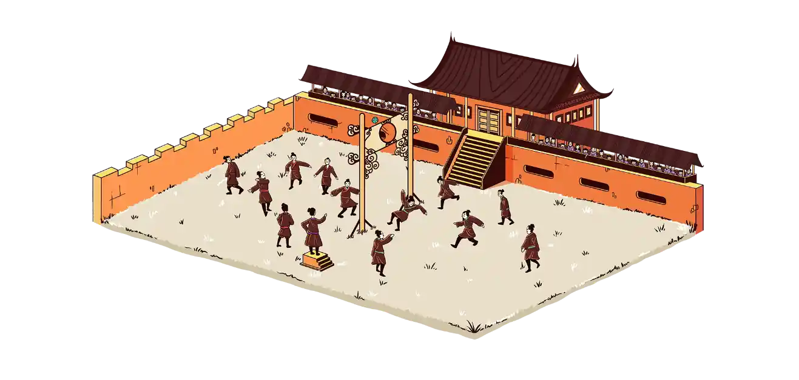
“Keep away from partiality.
Maintain fairness and peace
Don’t complain of other’s faults,
Such is the matter of cuju.
If all this is necessary for cuju.
How much more for the business of life”.
— Poet Li You
The Japanese, Greeks, Romans, Native Americans all had their own versions of ball games, each reflecting the values of their society. Greek games valued physical strength, while Japanese Kemari emphasized cooperation and politeness. Many were also used as military training to instill discipline, teamwork, and fitness in young men.
That similar games emerged independently across such vastly different cultures suggests that kicking a ball around is a fundamentally human impulse.
Football began taking shape in 12th century England as “mob football”. It was played on meadows, roads, and through town streets. The ball – sometimes an inflated animal bladder - could be kicked, punched, thrown, carried. The pitch had no fixed size, it could be kilometers. Goals were landmarks like a church door or a city gate. Matches could last for days and anyone would play, children, women, rich and poor. Players were unlimited, often reaching into the hundreds.
There were barely any rules. It drew massive crowds and often served as a way to settle disputes and rivalries between neighboring towns. But it was a very violent game and caused damage to the towns and sometimes death.
That’s why the British government banned it, repeatedly, for centuries.
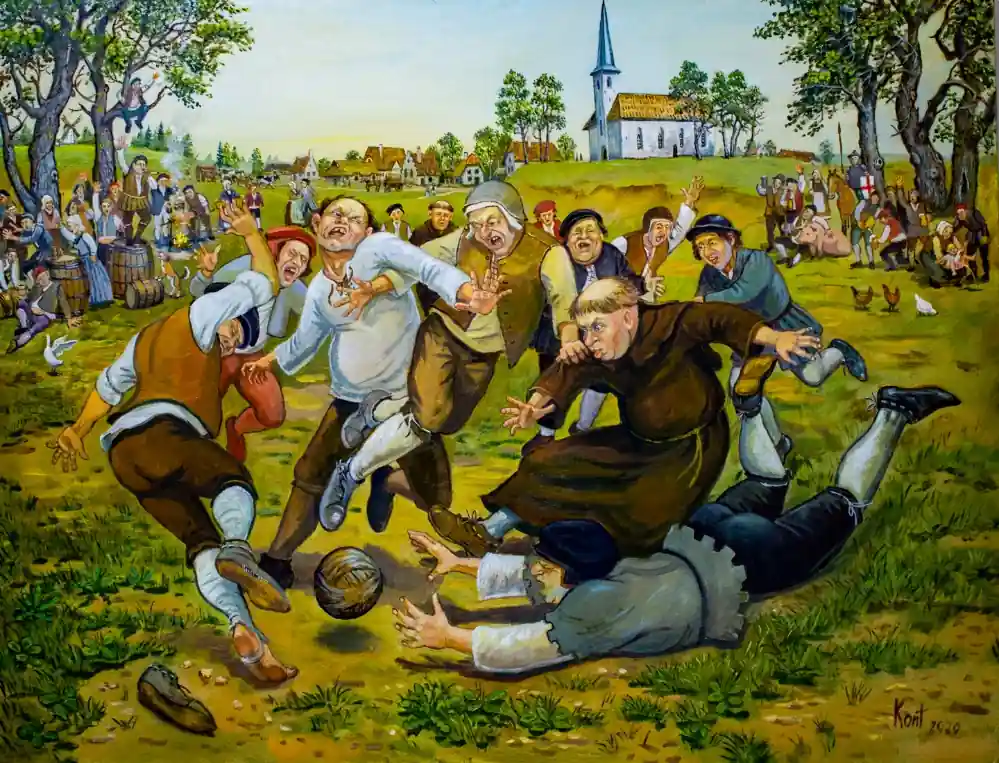
The community spirit and local pride of folk football never went away, they’re still the core of the game today.
By the 17th century, football-like games had returned to the streets of London. It was banned again in 1835, but it longer mattered: the game had established itself in England’s schools, and that’s where it would be transformed forever.
By the early 19th century, as industrialization transformed England and mob football faded, the game found new life in the country’s elite schools – exclusive private boarding schools for the upper classes. Each school developed their own versions of the game, almost nothing was standardized.
There was one central question: can you use your hands? At Rugby School, yes. At Eton and Winchester, the game was played purely with the feet. These two styles became known as the running game and the dribbling game respectively. According to legend, the rugby handling rule was invented in 1823 when a pupil named William Web Ellis picked up the ball mid-game and ran with it.
When students from these schools arrived at Cambridge University, the problem became unavoidable: they all had different rules and insisted on them. At Parker’s Piece, the large open park at Cambridge where students gathered to play, the different school rules were all pinned to separate trees around the park.
In 1848 they decided to settle the matter. Fourteen students met in a dorm room and eventually agreed on 11 rules. Handling was forbidden except to stop the ball. A goal was scored when the ball passed between two upright posts. A rudimentary offside rule was established. The spherical ball – instead of the egg-shaped one used in rugby – was standardized.
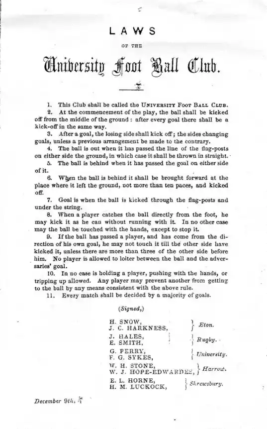
It was the first time anything resembling modern football had written laws. And it led to the clear distinction between two different sports: rugby and football.
And from that specific patch of English grass, the game began its journey to every corner of the world.
As Cambridge graduates dispersed across England, they brought the rules with them. In 1857, the first football club outside of an educational institution was founded: Sheffield FC. They created the Sheffield Rules which introduced the crossbar, corner kicks, free kicks for fouls, and throw-ins. They also pioneered heading which generated outright laughter from London players when they first saw it in a match in 1866.
No rules were universally accepted, so in 1863 a group of London clubs and schools met, formed the Football Association (FA) and created “Laws of the Game” – the direct ancestor of the rules played worldwide today.
“Soccer” is actually and English word, not an American one. It comes from “assoc”, short for association football, with the “-er” added as slang. Both football and soccer were used interchangeably in England for decades. Americans adopted “soccer” to distinguish the sport from American football, and it stuck. The British then dropped it, which is why most people now assume it was American all along.
Football's spread beyond England followed a simple pattern: British workers, students, sailors, and engineers arrived somewhere, brought a ball, and left a club behind.
Switzerland's international ties played a significant role in spreading football further into Europe. The first club in continental Europe was founded in Lausanne, Switzerland in 1860, from where the game spread into France, Germany, Italy and Spain. Hans Gamper, a man from Switzerland, founded FC Barcelona in 1899. He also co-founded FC Zürich before that. He lived in Barcelona, learned Catalan and changed his name from Hans to Joan – the Catalan version. When Franco’s government cracked down on Catalan identity in 1925, the entire Barca board was deposed, the club closed for six months and Gamper was exiled. He returned to Switzerland, fell into depression and died in 1930.
British colonial networks carried the game to South America, Africa, Asia and beyond.
As the game spread, a tactical divide emerged. English football was physical and direct, individuals dribbling forward with pace and strength, essentially rugby without the handling. Scottish clubs developed a short passing game built on combinations and movement. When the two styles met, the Scottish approach won out. It’s the foundation the game is still built on today.
From the 1850’s industrial workers increasingly had Saturday afternoons off, time they spent watching or playing football. Churches, trade unions and schools formed teams for working-class boys and men. Football became the game of the cities and the people. The upper classes retreated into cricket and rugby.
The expansion of the railways enabled players and spectators to travel to games. Tickets started being sold and it became clear there was money to be made. Northern clubs started paying the best players to join them, the players often arriving from Scotland.
The FA banned it. As long as nobody got paid, the men who could afford to train and travel stayed on top. They had even barred "mechanics, artisans or men who labour for daily wages" from competing unless they could prove gentlemanly status.
In 1883, Blackburn Olympic became the first working-class team to win the FA Cup, beating the wealthy Old Etonians 2-1. When Preston North End were thrown out of the competition the following year for fielding paid players, over thirty northern clubs threatened to break away and form a rival association. The FA relented. In 1885, professionalism was legalized.
Three years later the Football League was formed. Average attendance that first season was around 4,600. By 1905 it was 13,200. By the outbreak of World War I it had reached 23,100.
Working-class players could now ditch their jobs and commit full time to football.
The movement was accelerated by Pope Leo XIII, who in his 1891 encyclical on capital and labor called for the promotion of sport to alleviate "the misery and wretchedness pressing so unjustly on the majority of the working class." Jules Rimet, who would go on to create the World Cup, dismissed amateurism as "the arbitrary domination of a privileged oligarchy."
Football in the 19th century is the story of a game that kept escaping the people trying to control it. First the kings who banned it, then the aristocrats who tried to own it. By the century’s end, it belonged to neither. It belonged to everyone.
The dream was born.
In 1904, representatives from seven nations – including Switzerland – met in Paris to found FIFA. England, the birthplace of modern football, was notably absent. The FA viewed FIFA with contempt and considered themselves the natural authority on the game they had invented.
England sent an amateur side to the 1908 Olympics, won the gold medal, and took it as further confirmation that they had nothing to learn from anyone.
England joined FIFA in 1905 but withdrew again in 1920 after failing to persuade other members that Germany, Austria, and Hungary should be expelled following World War I. They rejoined in the early 1920’s but left again in 1928, this time over a dispute about payments to amateur players. They didn’t return until after World War II.
The consequences was that England missed the first three World Cups – 1930, 1934 and 1938. When they finally arrived in Brazil in 1950, convinced of their superiority, they lost 1-0 to the United States. The country that had invented football, beaten by a nation that barely played it.
On Christmas Day 1914, British and German soldiers along the Western Front laid down their weapons, stepped out of their trenches and met each other in No Man's Land. They exchanged cigarettes and chocolate, showed each other photographs of their loved ones, and discovered that the men they had been trying to kill were husbands, fathers, and sons. Just like them.
And then they played football.
A German lieutenant wrote in his diary: "A couple of Britons brought a ball from their trenches, and a lively game began. How wonderful and strange, that thanks to football and Christmas, deadly enemies briefly came together as friends."
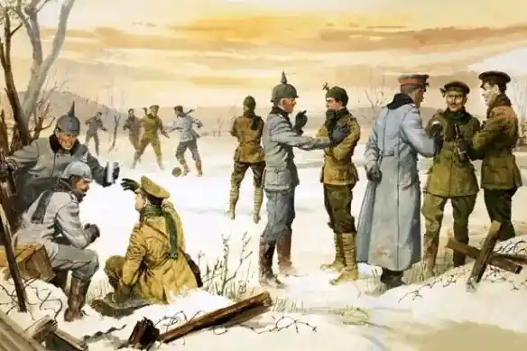
Many players lost their lives. The British Army formed a dedicated “Footballers’ Battalion” from professional players and supporters. Hearts FC had nearly their entire first team enlist together, seven of them were killed.
Football became a tool of propaganda. The FA kept the league running in 1914 while men were dying at the front, which caused a public scandal. Recruitment posters were plastered at football grounds urging fans to enlist.
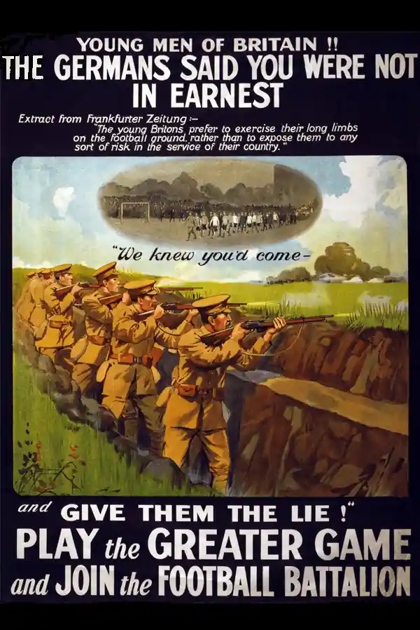
Uruguay won the 1924 and 1928 Olympics. Europe had never seen South American football before. Uruguay destroyed every opponent, playing fluid, short-passing football. Jules Rimet created the World Cup and Uruguay were chosen as the first hosts in 1930. FIFA’s membership grew from 20 nations in 1914 to 41 by 1930.
World Cup 1930:
Two months before the tournament was due to begin, not a single European nation had entered. The Great Depression had drained money, the sea voyage to Uruguay took two weeks, and clubs would lose their players for three months. Jules Rimet spent weeks personally lobbying teams to attend. Eventually four European nations agreed: Belgium, France, Romania and Yugoslavia.
Romania only entered after their new King, Carol II — a passionate football fan — personally selected the squad himself and negotiated with employers to guarantee every player would still have a job when they returned.
The Europeans boarded the SS Conte Verde together, picking up the Brazilian team in Rio de Janeiro along the way. Jules Rimet himself was on board, carrying the World Cup trophy in his luggage. Players trained on the deck.
The first World Cup match — France vs Mexico — was played in front of around 1,000 spectators in Montevideo. France's Lucien Laurent scored the first goal in World Cup history. He later recalled: "Nobody realised that history was being made. A quick handshake and we got on with the game. And no bonus either — we were all amateurs in those days."
The final was between Uruguay and Argentina, two neighbouring countries separated by a river and united by mutual hatred. Before kick-off there was a dispute over which ball to use. Both teams refused to use the other's. They agreed to use Argentina's ball in the first half and Uruguay's in the second. Uruguay won 4-2, in front of 93,000 people. The day was declared a national holiday. Across the river in Buenos Aires, the Uruguayan consulate was stoned by crowds.
The World Cup had arrived.
World Cup 1934:
Four years after Uruguay, the World Cup came to Europe. It came to fascist Italy.
For the first time, a qualification process had been introduced. Thirty-two nations competed for sixteen spots in the finals. The reigning champions, Uruguay, refused to participate, repaying the Europeans for their absence in 1930 with an absence of their own. It was also the first World Cup broadcast live on radio.
Mussolini hosted the World Cup to showcase Italy’s power to the world and use it as propaganda to promote fascist ideals. Over 300,000 propaganda posters were plastered all over the country.
Mussolini is said to have personally met with and selected the referee for all of Italy’s games.
Italy’s quarter final against Spain ended in a 1-1 draw and was replayed the next day, with a different referee. In the replay match, Swiss referee René Mercet disallowed two legitimate Spanish goals. Mercet was subsequently suspended by the Swiss Football Association.
The semi-final against Austria was something else entirely.
Austria’s “Wunderteam” was the most technically gifted side in Europe, built around Matthias Sindelar – known as “The Mozart of football” due to his dribbling ability. They had beaten Italy in Turin just months earlier. Austria’s manager Hugo Meisl had a strong position in European football and used it to reject any referee Italy proposed. Instead he accepted the Swede Ivan Eklind on the basis that he was neutral.
Mussolini dined with Eklind the night before the match as his honorary guest. Austria had a penalty claim dismissed and Italy’s winning goal came when several Italian players bundled and pushed goalkeeper Peter Platzer over the line – a goal that should not have stood. Eklind allowed it. Austrian forward Josef Bican claimed until his death that at one point Eklind physically intercepted a pass and returned it to Italy. After the tournament, the Italian federation booked Eklind into a hotel on the Island of Capri. All expenses paid.
Italy won 1-0.
Eklind was then appointed to referee the final. It was the first and last time in World Cup history that the same official had handled a semi-final and the final. Italy beat Czechoslovakia 2-1 after extra time. Mussolini walked onto the pitch and handed the trophy to the players himself.
Jules Rimet said afterwards that the tournament had not felt like it belonged to FIFA. It had felt like it belonged to the Fascist Party.
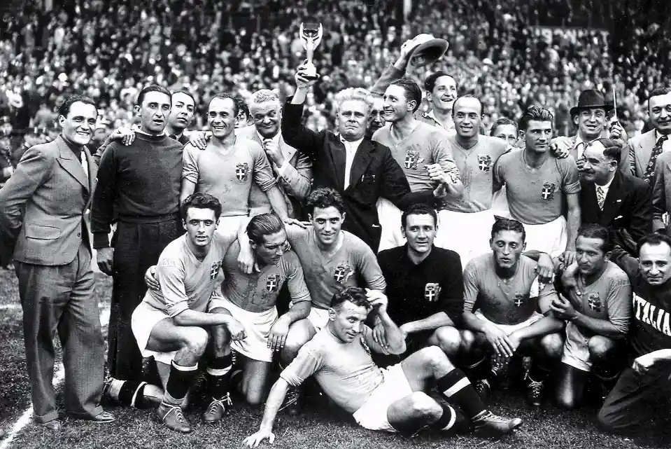
In March 1938, Nazi Germany annexed Austria and dissolved its national team. A farewell match was arranged, Austria against Germany. It was planned as a celebration for Austria’s “coming home to the Reich.” The Nazis wanted it to end in a draw. Austrian players were warned not to score. The Austrian side was clearly superior but missed chance after chance in a way that looked deliberate.
Then, Matthias Sindelar scored and celebrated extravagantly in front of the Nazi officials. Austria won 2-0.
Sindelar refused to join the German national team and refused to participate in Nazi publicity campaigns. Nine months after the goal, he and his girlfriend were found dead in their Vienna apartment. Carbon monoxide poisoning, the official report said. A defective chimney. The investigation was closed within days. A local official was reportedly bribed to record the death as accidental.
Sindelar owned a café. When he bought it, he was legally entitled under Nazi rules to pay a cut-rate price since the Jewish owner was being forced to sell. He paid the full price instead. The Gestapo had a file on him and kept his Café under surveillance. More than 20,000 people lined the streets of Vienna for his funeral.
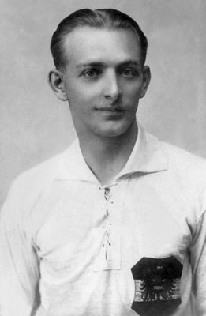
World Cup 1938:
The tournament came to France in the summer of 1938. For the first time, teams from different continents participated, Brazil and Cuba made the journey from South America.
Europe itself was barely holding together. Austria had been annexed by Nazi Germany three months before the tournament began. Spain was in the middle of a civil war. England, Scotland and Wales stayed home. Argentina and Uruguay boycotted. The world's game was being played by a world coming apart.
Germany arrived with a squad that now included Austrian players that didn’t choose to be there. In the first round against Switzerland, played in Paris in front of a hostile, bottle-throwing crowd, they led 2-0 and lost 4-2, being knocked out. A German journalist said: "Germans and Austrians prefer to play against each other even when they're in the same team." The German coach blamed the Austrian players afterwards.
Italy wore black shirts on Mussolini's orders when they played France in the quarter-final and gave the fascist salute before kick-off. Before the final against Hungary, Mussolini reportedly sent the squad a telegram: "Win or die." The Italian players denied ever receiving it. Hungary's goalkeeper Antal Szabo, having just conceded four goals, was reported to have said afterwards: "I may have let in four goals, but at least I saved their lives."
Italy won 4-2.
Fourteen months later, the war began. Many of the players who had competed would spend the next six years on various fronts. The World Cup would not be held again for twelve years.
FIFA’s Italian vice-president spent those years with the World Cup trophy hidden in a shoebox under his bed, to keep it from the hands of occupying troops.
World War II
In May 1938, the England team travelled to Berlin to play Germany at the Olympiastadion, just two months after Nazi Germany had annexed Austria. The match was part of Britain's policy of appeasement, an attempt to maintain normal relations with the Germans.
An hour before kick-off, the players were told they would be required to give the Nazi salute. The instruction came from the British Foreign Office, relayed through the FA, backed by the British Ambassador Nevile Henderson. The dressing room wasn’t happy, but they gave it anyway.
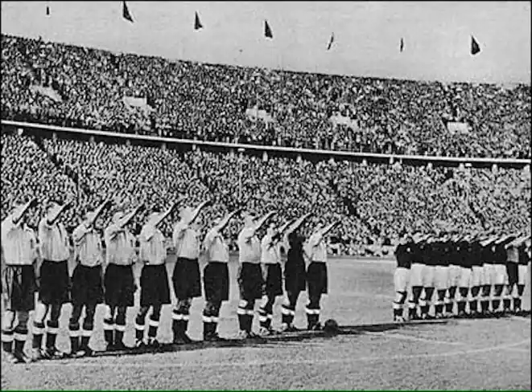
One hundred and ten thousand people watched from the stands. Rudolf Hess was there. Joseph Goebbels was there. Hitler was not.
England won 6-3.
When war was declared in September 1939, all professional football was immediately suspended and player contracts terminated. The stadiums that weren't requisitioned by the military sat largely empty. Highbury became an Air Raid Precautions centre. Goodison Park was bombed. The World Cup trophy sat in a shoebox under a bed in Rome.
In prisoner of war camps, the men still played. On frozen ground, in mud, between barracks.
On 26 May 1945, eighteen days after Victory in Europe Day, England played France in a Victory International at Wembley. The stands were full. The people were free. And football was still football.
World Cup 1950:
The first post-war World Cup came to Brazil in 1950. Germany and Japan were banned due to their roles in World War II. England appeared for the first time in a century of the game's existence and lost 1-0 to a team of American part-timers.
But that was not the tournament's real story.
Brazil needed only a draw in the final match to win the World Cup. The morning of the game, a Rio newspaper declared them world champions. A party was being organised across the city. Over 200,000 people packed the Maracanã, the largest crowd in football history.
In the Uruguayan dressing room, captain Obdulio Varela stood up and told his teammates: "When you come out onto the pitch, don't look at the crowd. Those on the outside are made of wood."
Uruguay won 2-1. Two hundred thousand people fell silent.
Brazil changed their white shirts the next day. The colour had become unbearable. They have played in yellow ever since.
Moacir Barbosa, the goalkeeper, spent the rest of his life paying for it. He was never selected for Brazil again. In 1993, more than 40 years later, he tried to visit the national team’s traning camp and was turned away at the gate. They said he would bring bad luck. He bought the goalposts from the Maracanã and burned them, trying to exorcise the memory.
Shortly before his death in 2000, he said: "Under Brazilian law, the maximum sentence is 30 years. But my imprisonment has been for 50."
World Cup 1954:
Switzerland hosted because it was one of the few European countries whose infrastructure the war had left intact, and because 1954 marked the fiftieth anniversary of FIFA, headquartered in Zurich. It was the first World Cup to be televised.
Hungary arrived as the most dominant team on earth. They had beaten West Germany 8-3 in the group stage.
In the quarter-finals, Austria beat Switzerland 7-5, still the highest scoring game in World Cup history. Hungary beat Brazil 4-2 in a match that became known as the Battle of Berne, the most violent match in World Cup history.
After the game, the Brazilian players invaded the Hungarian dressing room and continued the on-pitch fighting. The Hungarian manager needed four stitches. They were driven off by the notorious Hungarian AVH security police with batons and guns drawn.
The final was held on 4th July 1954, Hungary against West Germany in the Wankdorf Stadium in Bern in front of 60’000 people. Hungary led 2-0 inside eight minutes but Germany came back to win 3-2.
West Germany were world champions. This game came to be known as “The Miracle of Bern”.
A German historian later said: "It was a kind of liberation for the Germans from all the things that weighed down upon them after the Second World War. July 4, 1954 is in certain aspects the founding day of the German Republic."
The Munich Air Disaster:
On the morning of 6 February 1958, Manchester United were one of the best teams in Europe. Manager Matt Busby had built a side of brilliant young players known as the Busby Babes. They were flying home from Belgrade when the plane stopped in Munich to refuel.
After two aborted take-off attempts, the pilots tried a third time. The plane failed to gain altitude, crashed through a fence at the end of the runway and broke apart.
Twenty-three of the 44 people on board were killed. Eight of them were Manchester United players.
Goalkeeper Harry Gregg regained consciousness in the wreckage and went back in. He pulled teammates out with his hands. He was called the Hero of Munich. Duncan Edwards, twenty-one years old and considered the greatest talent of his generation, survived the crash but died in hospital fifteen days later. Matt Busby was so badly injured that last rites were read over him twice. When he considered quitting football, his wife said "No, you must live: for them.”
Rival clubs offered players on loan. The football world closed around Manchester United to keep them standing.
Busby recovered. He rebuilt. Ten years later, with survivors Bobby Charlton and Bill Foulkes still in the team, Manchester United won the European Cup.
At Old Trafford, there is a clock on the east stand. It reads: 6 Feb 1958. Munich.
World Cup 1958:
In 1950 a 9-year-old Brazilian boy came home to find his father crying after Brazil had lost the World Cup final to Uruguay on home soil. The boy said "Father, don't cry. I'm going to win the World Cup for you."
That boy's name was Pelé and in this World Cup he would make good on that promise.
It was held in Sweden.
Pelé grew up in poverty in Bauru, São Paulo. His father taught him to play but couldn't afford a ball, so he used a sock stuffed with newspaper tied with string, or a grapefruit.
In the semi-final he scored a hat-trick against France. In the final against Sweden, with Brazil 2-1 down, he controlled the ball on his chest, flicked it over a defender's head and volleyed it into the net before it hit the ground. Brazil won 5-2. No footage of the goal survives. The people who were there said it was unlike anything they had seen.
He became the youngest player ever to score in a World Cup final. That record still stands.
He would go on to win the World Cup again in 1970, and to be regarded as one of the greatest players the game has ever produced.
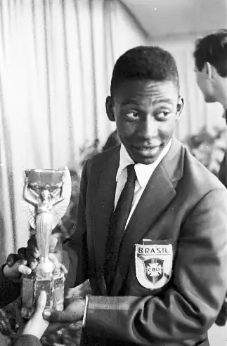
World Cup 1962:
Chile had been struck by the most powerful earthquake ever recorded just two years earlier. Some of the stadiums still showed cracks, but they hosed anyway.
The tournament is remembered for one match. Chile against Italy. The Battle of Santiago. Italy's Giorgio Ferrini was sent off in the eighth minute, refused to leave the pitch, and had to be dragged off by police. Chilean player Leonel Sánchez punched Italian defender Mario David in the face, the referee did nothing. David then attempted to kick Sánchez in the head and was sent off. Sánchez later broke another Italian's nose with a left hook. The referee did nothing. Police intervened four times.
Chile won 2-0.
Referee Ken Aston couldn't control the match partly because of language barriers - he spoke no Spanish, the players spoke no English. In 1970, while driving home, he stopped at a traffic light and had an idea. Yellow, take it easy. Red, you're off. He invented the card system that every football match in the world still uses today.
The Di Stéfano Kidnapping:
In August 1963, Real Madrid were on tour in Caracas, Venezuela. Alfredo Di Stéfano — one of the greatest players who ever lived — received a phone call in his hotel room late at night. Two men at reception said they were police officers who needed to speak with him. He went down. They put him in a car, blindfolded him, and drove him to an apartment in the city.
The kidnappers were members of the FALN, a Venezuelan communist guerrilla group. They had no intention of harming him. Their only motive was publicity. For 56 hours Di Stéfano sat in that apartment, discussing football with his captors, who turned out to be fans of the sport. He was released unharmed near the Spanish embassy. The first police officer he approached refused to believe he was actually Di Stéfano.
The following day he played the match.
The Stolen World Cup Trophy:
Six months before the 1966 World Cup, the Jules Rimet Trophy was stolen from an exhibition in London. Someone just walked out with it.
Scotland Yard launched a massive investigation. A man called “Jackson” contacted the Football Association demanding £15,000. Police set up a sting operation. A suspect named Edward Betchley was arrested, but he claimed to be a middleman, and the trophy wasn't recovered.
A week later, a man named David Corbett was walking his dog in South London. The dog — a black and white collie named Pickles — began sniffing at a package wrapped in newspaper under a hedge. Inside was the Jules Rimet Trophy.
Pickles became a national celebrity. He appeared on television, attended the England team's celebration banquet, and received a medal. His owner got £6,000. The mastermind behind the theft was never identified.
Pickles died the following year when he choked on his leash while chasing a cat.
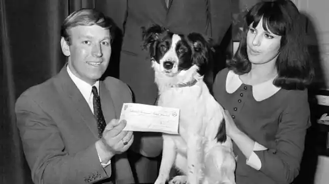
World Cup 1966:
North Korea arrived at their first World Cup and beat Italy 1-0. When the Italian squad flew home to Genoa, fans were waiting at the airport with tomatoes. Police tried to hold them back as they attacked the players' cars.
The final at Wembley on 30 July was England against West Germany, attended by 96,924 people and watched by an estimated 400 million around the world — roughly one in eight people alive on earth at the time.
West Germany equalized in the last minute of normal time to force extra time. Then Geoff Hurst struck a shot that hit the crossbar and bounced down. The referee had no idea whether it was a goal. But he gave it. Computer analysis conducted decades later found the ball fell approximately six centimeters short of fully crossing the line.
England won 4-2 in their own home. It was the first and last time England won an international trophy.
World Cup 1970:
Mexico. First World Cup outside Europe or South America. First broadcast in colour to a global audience. Brazil's yellow shirts became iconic.
Before Brazil's quarter-final against Peru, Pelé walked to the centre circle just before kick-off and asked the referee to stop the clock so he could tie his bootlaces. Puma had paid him $120,000 to do it. Every camera in the stadium zoomed in. The world's greatest footballer, tying his boots, wearing Puma. Adidas were furious. Puma's sales went through the roof.
The semi-final between Italy and West Germany is still called the Game of the Century. Italy led 1-0 for almost the entire match. Germany equalised in the last seconds of normal time. Then five goals in extra time, the lead changing hands three times. Franz Beckenbauer played most of it with his arm strapped to his body after dislocating his shoulder because Germany had already used both substitutions. Italy won 4-3.
Brazil won the final 4-1 against Italy. Pelé's is still the only player in history to win three.
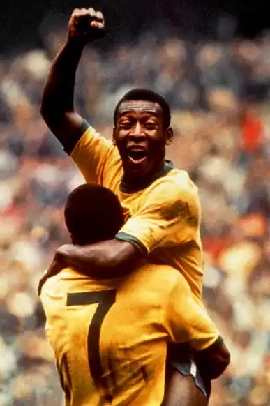
George Best:
A Manchester United scout watched a fifteen-year-old boy play football in Belfast in 1961 and sent a telegram to manager Matt Busby. It read: "I think I've found you a genius." The boy's local club had already rejected him for being too small and too light.
His Manchester United teammate Paddy Crerand described him as "Pelé, Maradona, and Cruyff rolled into one." Former Manchester United manager Sir Alex Ferguson said, "George Best was the greatest player I ever saw." Sir Matt Busby said, "If George had been able to channel his energies in the right way, he would have been the greatest player ever."
He became the first footballer to become a mainstream celebrity and it destroyed him.
By twenty-seven he was finished at United, sacked for drinking and disappearing. The most famous anecdotes involves Best in a hotel room with Miss World, champagne, and a bed covered in casino winnings. A waiter delivering champagne reportedly asked, "George, where did it all go wrong?"
He said about himself: "I was born with a great gift and sometimes with that comes a destructive personality. Just as I wanted to outdo everyone when I played, I had to outdo everyone when we were out on the town.".
He died in November 2005, aged fifty-nine. One hundred thousand people lined the streets of Belfast. Best said: "They'll forget all the rubbish when I've gone and they'll remember the football. If only one person thinks I'm the best player in the world, that's good enough for me."
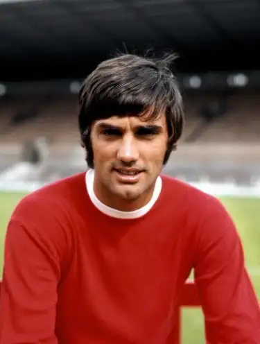
World Cup 1974:
Held in West Germany, East Germany famously beat West Germany 1-0 in the group stage, their only meeting in a World Cup. West Germany won the tournament in the final against the Dutch. Johann Cruyff was named player of the tournament, but the enduring image is of him losing the final.
The Adidas Telstar ball was designed specifically to be visible on black-and-white television sets. Its design became so synonymous with football that it is still what most people draw when they draw a football.
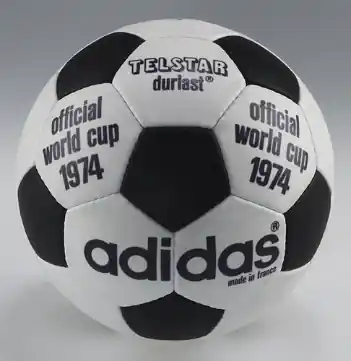
Pele in America:
When the New York Cosmos came for Pelé in 1975, he had already retired. He had played eighteen years for Santos, won three World Cups, scored over a thousand goals. He was thirty-four. He was done.
The Cosmos general manager flew to Brazil and told Pelé: "If you go to Juventus or Real Madrid, all you can do is win a championship. You come here, you win a country."
The Brazilian government tried to block it. Henry Kissinger, the US Secretary of State, personally intervened to convince the Brazilian foreign minister to allow the transfer. He sent Pelé a cable: "Should you decide to sign, I am sure your stay will substantially contribute to closer ties between Brazil and the United States."
Three hundred journalists packed into the 21 Club in Manhattan for the announcement. Pelé stepped forward and said: "You can tell the world that soccer has finally arrived in the USA."
The season before he arrived, the Cosmos' biggest home crowd was 8,000 people. In his final season, 1977, they averaged over 42,000, with three games above 70,000.
His last match, an exhibition between the Cosmos and Santos, was watched by 77,000, including Muhammed Ali. He played the first half for Santos and the second half for Cosmos. Then he retired, for good, with the flag of both countries in his hands.
1978 World Cup:
Argentina was under military dictatorship. Johan Cruyff, the best player on earth, was not there. He had been the victim of a kidnapping attempt in Barcelona months earlier where armed men had broken into his home, tied him and his wife up at gunpoint with his children in the next room. He was not prepared to leave his family. He never played at a World Cup again.
Argentina needed to beat Peru by four goals in their final group match to reach the final ahead of Brazil. Minutes before kick-off, General Videla – Argentina’s dictator -entered the Peruvian dressing room. Henry Kissinger was with him. Argentina won 6-0. It was later reported that in the days before the match, the Argentine government had shipped 35,000 tons of grain to Peru and unfrozen $50 million in Peruvian assets held in Argentine banks. Nothing was ever proven.
Argentina won the final against the Netherlands 3-1.
The World Cup 1982:
Spain. Twenty-four teams for the first time.
In their final group match, West Germany and Austria knew exactly what they needed. A German win by one or two goals and they both go through. Algeria had already played their last match and could only wait.
West Germany scored after ten minutes. Then both teams stopped trying. For eighty minutes, the ball went backwards and sideways. Nobody tackled. Nobody pressed. The Spanish crowd chanted “Let them kiss!” The Austrian commentator asked his viewers to turn off their televisions. The German commentator refused to continue. The local newspaper published its match report in the crime section. The press called it the Disgrace of Gijón.
FIFA ruled the result would stand. Then they changed the rules: from that point on, all final group games at every World Cup would be played simultaneously.
Italy won the tournament, beating West Germany 3-1 in the final.
Diego Armando Maradona:
He grew up in the slums of Buenos Aires, one of eight children. Diego once said he promised his parents at eight years old that he would buy them a house. They laughed. He kept the promise.
As a kid he was performing juggling tricks at half time of senior matches in Buenos Aires, drawing bigger crowds than the games themselves. At fifteen he was already a professional. At twenty-one Napoli paid a world record fee of £5 million for him, and the city of Naples —looked down upon by the wealthier north — adopted him as a god. They hung his picture alongside saints. He led them to their first ever Italian league title.
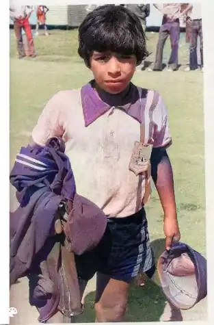
He also fell apart there. He got addicted to cocaine. The Camorra, The Neapolitan mafia, got close to him. He later admitted he had fixed matches for their betting operations. In 1991 a wiretapped phone call caught him in a cocaine deal. He received a fifteen-month ban.
But in between all of it, there was the 1986 World Cup.
Argentina against England in the quarter-final. The two countries had been at war four years earlier. Maradona said later that the players “felt like they were defending the dead kids, the survivors.” In the 51st minute, an English clearance flew into the penalty area. Maradona, five foot five, rose alongside goalkeeper Peter Shilton, six feet tall, and punched the ball into the net with his left fist. The referee gave it.
At the press conference afterwards, Maradona described it as "a little with the head of Maradona, and a little with the hand of God."
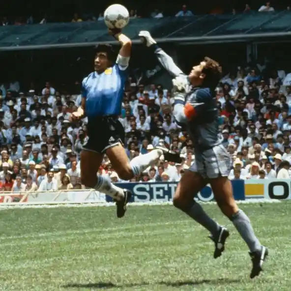
Four minutes later, he received the ball just inside his own half, beat five England players in ten seconds, and slotted it past the goalkeeper. It was voted the Goal of the Century in a FIFA poll. The shirt from that game sold at auction in 2022 for £7.1 million.
Argentina won the World Cup. It is still called Maradona's World Cup and widely considered the greatest footballing performance of any player, anywhere, ever.
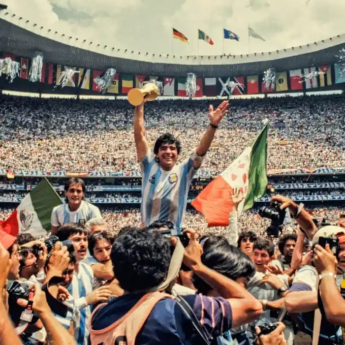
He died in November 2020, aged sixty. His heart had been damaged by decades of cocaine and obesity. On the streets of Buenos Aires and Naples, people wept in public.
World Cup 1990:
Italy. The lowest-scoring World Cup in history — 2.21 goals per match. Sixteen red cards. Ugly, defensive, cynical football. And somehow unforgettable.
During a match against Brazil, Maradona spiked the Brazilian defender Branco's water bottle with tranquillisers at half time. He confessed it on Argentine television years later.
The semi-final brought Argentina to Naples to face Italy. Maradona said: "I don't want the Neapolitans to forget that I played for Napoli for seven years. The Neapolitans should support Argentina in this match." The crowd split. Neapolitans cheered Argentina against their own national team. Argentina won on penalties. When Maradona's name was read out before the final in Rome, the crowd booed.
The final was one of the ugliest ever played. Argentina, depleted by suspensions, offered almost nothing. Two players were sent off, the first red cards ever in a World Cup final. West Germany won 1-0 from a late penalty. At the whistle, Maradona wept.
West Germany lifted the trophy eight months after the Berlin Wall had fallen and three months before German reunification was formally completed. The German manager Frank Beckenbauer said: "I feel sorry for the next German manager, because I've left him an unbeatable team.”
Euro 1992:
Ten days before the tournament began, Yugoslavia were expelled from Euro 1992. The country was tearing itself apart in civil war. Denmark, who had finished second in Yugoslavia's qualifying group, were given their place with nine days to prepare.
Denmark won the tournament.
They beat France in the group stage, beat the Netherlands on penalties in the semi-final, Schmeichel saving Van Basten's spot kick, and beat reigning world champions Germany 2-0 in the final.
Denmark player Vilfort had spent the tournament travelling back and forth between Sweden and Denmark to be at his six-year-old daughter's bedside. She had leukemia. His family sent him back twice to play. He scored in the semi-final shootout and then scored the goal that won the final.
His daughter died shortly after the tournament.
Denmark had not qualified for Euro 1992. Their best player, Michael Laudrup, refused to play under the manager and wasn't in the squad. They won anyway.
The Marseille Scandal:
On 26 May 1993, Marseille beat AC Milan 1-0 in Munich to become the first French club to win the Champions League. Six days earlier, they had played a league match against Valenciennes. Three Valenciennes players were approached with cash to take it easy and let Marseille win without risk of injury ahead of the final.
Two accepted. One — Jacques Glassmann — refused and reported it. Detectives found the bribe money buried in the garden of a Valenciennes player's aunt. Investigation also revealed that Marseille had maintained a fund of up to six million francs for bribing referees and opposition players over several years.
Marseille were stripped of the French league title — which PSG, as runners-up, declined to accept, leaving no official champion that year. They were relegated. The club president behind the operation served 165 days in prison.
They kept the Champions League trophy. UEFA found no proven wrongdoing in European competition. Years later, multiple Marseille players claimed they had been given suspicious injections in the days before the final against Milan. Jean-Jacques Eydelie, who had delivered the bribes, said: "The only time I agreed to take a doping product was the 1993 Champions League final."
The World Cup 1994:
When FIFA awarded the World Cup to the United States in 1988, many were skeptical. It didn’t even have a professional football league.
They broke every attendance record in the tournament's history. 3,587,538 spectators across 52 matches. An average of nearly 69,000 per game. No World Cup since has come close.
Argentina's first match was against Greece. Maradona scored and then ran to the pitchside camera and screamed directly into the lens, eyes wide, face distorted, utterly unhinged. It was later explained by the ephedrine he was taking. After Argentina's second match, he was selected for a drug test. It came back positive. He was expelled from the tournament. He said FIFA had "sawed off my legs." He never played international football again.
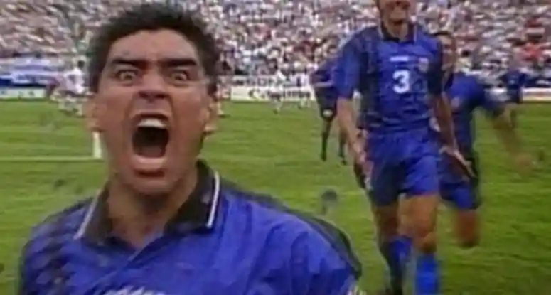
During the same tournament, Colombian defender Andrés Escobar (who also played for BSC Young Boys) scored an own goal against the United States. Colombia went home. Ten days later, Escobar was shot dead outside a bar in Medellín. His killer reportedly shouted "goal" with each shot. The man who pulled the trigger was a bodyguard for a cartel figure who had reportedly lost heavily betting on Colombia. He was convicted and sentenced to 43 years. He served eleven.
Brazil won the final against Italy after Roberto Baggio missed a crucial penalty. He said afterwards: "I missed. But I would take that penalty again."
Narco Football:
In the 1980s, Pablo Escobar was earning an estimated $50 million a day from cocaine. Some of it went into Atlético Nacional.
Escobar had grown up poor in Medellín. Football was the sport of the people and the people were his cover. He built pitches in poor neighbourhoods, funded youth academies, kept local players from going abroad. His club's coach, Francisco Maturana, later admitted: the injection of drug money raised the calibre of Colombian football and prevented skilled players from leaving.
In 1989, Atlético Nacional became the first Colombian club to win the Copa Libertadores. The entire squad was invited to Escobar's ranch to celebrate. At the same time, the Cali cartel bankrolled their rivals América de Cali. Clubs across Colombia were cartel property.
That same year, referee Álvaro Ortega disallowed a goal in a match between Medellín and América de Cali. Cartel-linked gamblers had bet heavily on the result. Ortega was shot dead outside his hotel days later.
Cantona:
On 25 January 1995, Eric Cantona was sent off during a Premier League match. As he walked toward the tunnel, a Crystal Palace supporter ran down eleven rows of seats and shouted xenophobic abuse at him.
Cantona launched himself over the advertising hoardings and kicked the man in the chest. Then punched him. Then had to be pulled away by teammates.
He received an eight-month ban, a fine, and a two-week prison sentence later reduced to 120 hours of community service.
At the press conference after his conviction, he walked up to the microphone and said: "When the seagulls follow the trawler, it is because they think sardines will be thrown into the sea." Then he left.
He came back the following season and won the Premier League and FA Cup double.
The Bosman Ruling:
Before 1995, when a footballer's contract expired, his club still owned his registration. He couldn't move without their permission. They could demand any fee they wanted. If no one paid it, the player stayed — contractless, often on reduced wages, going nowhere.
This happened to Jean-Marc Bosman in 1995. He took the case to the European Court of Justice and argued it violated EU law on the freedom of movement of workers. The court agreed.
Now, a player whose contract expired was now free to leave without a fee. And the cap to how many foreign players a club could field was removed.
Clubs lost the ability to hold players hostage after their contracts ended. Power shifted from clubs to players. Wages exploded, clubs spent on salaries what they could no longer demand in fees. Squads became international: by Boxing Day 1999, Chelsea became the first English top-flight club to field an entirely foreign starting eleven.
The Bosman ruling is regarded as one of the most significant off-field events in football history.
World Cup 1998:
France. Thirty-two teams for the first time.
In the round of 16, England faced Argentina. Falkland War, Hand of God, this game had weight and history. The game was 2-2 in the second minute of the second half when Diego Simeone fouled Beckham and walked past him. Beckham, on the ground, flicked his boot at Simeone's calf. Simeone went down as if shot. The referee sent Beckham off. Simeone later admitted he had gone down deliberately.
England held on with ten men through extra time and lost on penalties. Beckham was twenty-three years old. His manager Glenn Hoddle had publicly questioned his focus before the tournament, suggesting his relationship with a Spice Girl was a distraction. After the red card, a tabloid printed his face on a dartboard. Another ran the headline: "Ten Heroic Lions, One Stupid Boy." He received death threats. His wife later said the abuse left him clinically depressed.
The following season he played every game in front of hostile crowds around England, jeered at every away ground. Then he won the Premier League, the FA Cup and the Champions League in the same season. He became England captain two years later.
He said recently he still beats himself up about the kick. It took about three seconds and defined him for years.
Ronaldo was twenty-one years old, the best player in the world and Brazil’s superstar. On the afternoon of the World Cup final of France vs Brazil, he collapsed in his hotel room and had a seizure. His roommate Roberto Carlos burst into the corridor screaming for help. Teammates held Ronaldo's tongue to stop him swallowing it. He foamed at the mouth and was taken to hospital by ambulance.
The first team sheet submitted to FIFA did not include him. Forty minutes before kick-off, Ronaldo arrived at the stadium and told his coach he was fit to play. The coach, facing the impossible choice of leaving his nation's greatest player out of a World Cup final, put him back in.
Zidane scored twice in the first half. France won 3-0. Ronaldo barely touched the ball. No one has ever fully explained what happened that afternoon or why he was allowed to play. A Brazilian congressional investigation later examined whether Nike — who had a vast commercial contract with Ronaldo and the Brazilian Football Confederation — had pressured the coaching staff to field him regardless. No conclusive evidence was found.
Ronaldo said afterwards: "We lost the World Cup. But I won another cup — my life."
Four years later he came back and scored twice in the final.
That was the twentieth century.
On the 15th of October 2001 in Bern, Switzerland, Luca Brügger was born.
Decide your fate
“Van Gaal has a good vision on football. But it’s not mine. He has a militaristic way of working with his tactics. I don’t. I want individuals to think for themselves and take the decision on the pitch that is best for the situation.”
— Johan Cruyff
A team is always either in possession or out of possession. Possession is superior because you can only score with the ball, and your opponent can’t score while you have it. If one team has 67% possession and the other 33%, and both are equally effective with the ball, the possession-dominant team outscore the other 2:1 — purely because they have it twice as long.
“The best way to defend is to have possession in your opponent’s half ”
— Johan Cruyff
Barca isn’t that much better at pure defending than a lower league team, but they’re much better at keeping possession, progressing the ball and being threatening in attack, which makes them more effective at conceding less.
But possession isn’t free. To gain it you have to press, which opens gaps and costs energy. To keep and play the ball through pressure requires technical quality most teams don’t have. And high possession means slow buildup, which gives the opponent time to sit in a compact defensive block, exactly the structure that’s hardest to break down. This is why Spain struggled after 2012, they still had the ball but couldn’t score enough with it and conceded too much when they didn’t have it. Ideally, you want to dominate possession and have that possession be penetrative.
Pressing versus covering is the defensive risk–reward trade-off. Pressing is high risk, high reward. Covering is safer but passive.
“He is always going forwards. He never passes the ball backward or sideways. He has only one idea, to run towards the goal.”
— Zinedine Zidane on Lionel Messi
In attack, the trade-off is verticality versus security.
Verticality describes how aggressively a team progresses the ball toward the opponent’s goal. Security describes how strongly it prioritizes retaining possession. At one extreme, a safe backwards pass: low verticality, high security. At the other, a long ball forward with little control: high verticality, low security.
Any player can attempt a maximally vertical action at any time like launching the ball forward. Verticality is always available. Security is not, it’s skill-dependent.
At the lowest amateur levels, football is the most vertical and the least secure. The ball is launched forward quickly, but possession is lost just as quickly. Since players cannot retain possession securely anyway, maximizing forward distance before the inevitable turnover becomes rational.
The difficulty of the situation is the third variable. In difficult situations, even zero verticality and just retaining possession securely can demand maximum skill.
Verticality increases both risk and reward. The more goal-space a team gains, the higher its scoring probability. But forward progression reduces possession security because the opponent actively resists it. Verticality and security therefore represent the trade-off between the two most valuable things in football: goal-space and possession.
Football is fundamentally about gaining verticality toward the opponent’s goal while preventing it toward your own. Yet because possession itself is so valuable, teams often sacrifice verticality to preserve security of possession. Sideways and backwards passes are not inherently negative, they’re the price of possession.
Improvement doesn’t make you more vertical, it makes you more secure, then more vertical while staying secure. The highest ideal in football is maximally secure verticality: playing forward without risk of losing the ball even in the most difficult situations. It demands elite CCD, acceleration, agility and technique. It’s the hardest thing there is in football.
Messi is the greatest because he is the most vertically successful player in history.
“People talk about tactics, but when you look at it, tactics are just players. You change things so that the team can get the most out of the skills they have to offer.”
— Pep Guardiola
Barca 2009–2011 and Spain 2008–2012 are arguably the most dominant club and national side of all time, built from mostly the same players playing the same football.
No one in history understood and capitalized on possession football better than Pep. He assembled some of the most technically gifted players in the world and had them play technical possession football and it worked. The ball was always faster than the defenders. They passed teams into the ground. No one could stop them.
Importantly, it is the players that made this possible: Messi, Xavi, Iniesta, Busquets, etc. Both footed, perfect first touches, clean short and long passing, close control dribbling. This meant security was saturated, they could keep the ball in virtually any situation.
The problem is that the rest of the world adapted. Teams stopped trying to match them technically and instead sat in compact low blocks and defended. They still had the ball but nowhere to go with it, and the way to break those low blocks is by committing more men forward for overloads, which left them exposed on the counter. The other solution was aggressive, physical man-to-man pressing, to not let them play out their technicality.
Why did Barca stay successful after 2012 but Spain didn’t? Because Lionel Messi is Argentine. Tiki-taka stopped working but Messi, Suarez and Neymar’s ability to operate in tight spaces, win 1v1’s and be vertical kept Barca successful. They adapted from dogmatic possession football to more verticality.
“It doesn’t work like it worked in the past”
— Pep Guardiola, February 2025.
And ever since that historic Man City crisis, Pep started changing. He adapted to more vertical tactics.
Though in 2017 he also said:
“If possession football stopped working, I’m going to retire, because I don’t feel it another way.”
Pep understands the importance of both possession and verticality as well as anyone. He wants 70% possession and win 5-0. But he can’t have both the way he wants to. He has to compromise. But just like me, Pep is an idealist. So that really frustrates him.
If Pep could field 11 Messis, he would. Yes, even the goalkeeper. The reason Pep loves Messi so much isn’t because he’s a nice guy, it’s because Messi gave him security and verticality. Messi could penetrate, create and hold possession. The same is true for Rodri.
What enabled Pep to play the most dominant football in history with Barca fifteen years ago was the level of the players. Pep got all the tactics perfectly right, but he couldn’t have done it with lesser players. And what will enable the next evolution of football tactics is not some genius idea Pep has at 9am in the shower, but still the player’s level.
Man City can buy all the best players in the world and it still doesn’t matter because the players Pep wants don’t exist. The academies don’t produce them.
So he bought Donnarumma. One of the best shot-stoppers in the world, but poor with the ball at his feet. Pep who spent fifteen years pioneering the ball-playing goalie, bought a keeper who can’t do it. This is a man compromising his deepest convictions because what the academies produce forced him to.
Por que no los dos? Because the academies failed to produce enough goalkeepers that are world-class at shot-stopping and with their feet. So he had to choose.
Real Madrid’s squad is worth $1.5 billion and they can barely play out from the back.
I will never blame the managers. They’re just optimizers of what the academies give them. Tactics follow from player quality.
Then there’s people that dare say Pep is killing football. Yes football is being killed, but it’s not Pep doing the killing.
What does player quality improving actually mean in practice? It means players becoming maximally secure and vertical in all situations and the specific skill that requires is elite 1v1 dribbling - the hardest thing in football because it demands the highest combination of technical and physical ability of anything in the game. It’s also the most differentiating and thus important factor on the elite level.
This will sound counterintuitive because football is fundamentally a passing game. But that’s the point. Dribbling is the x-factor precisely because football is a passing game.
At the lowest amateur level football is a dribbling game by default. Players can’t control and pass under pressure consistently enough for passing structures to exist, so they hold the ball too long and the game becomes individual. As you move up the leagues, the sport evolves into a passing game. Players develop clean first touches, accurate short and long passing, vision, game IQ and enough dribbling ability to consistently move and set up passes quickly. Somewhere between semi-pro and pro football this passing game essentially gets perfected. But at the top, once everyone can pass and control the ball, it becomes the baseline and dribbling becomes the differentiator again.
You cannot solve the hardest problems in football by passing your way out or through. Pedri’s press resistance, Rodri’s close control setting up a line-breaking pass, Yamal’s dribbling; they require extra touches.
The problem with passes is that they’re fundamentally predictable and not always available. They travel from one known position to another along a visible line. And they’re limited by where your teammates stand.
Dribbling operates outside that system. There is no fixed destination, no teammate that limits you, no trajectory a defender can read. You can go anywhere at any speed and change the decision mid-execution. It’s unpredictable in a way passing cannot be.
“The ball is faster than any player” true, but less true the better you are at dribbling. Prime Messi running with the ball wasn’t that much slower than a pass in many situations and he was simultaneously impossible to predict and stop. The better a player is at dribbling, the more the speed advantage of passing shrinks and the more the limitless unpredictability advantage of dribbling grows. At the highest level of dribbling ability, the case for always passing over carrying becomes much weaker.
Dribbling attracts pressure and pulls defenders out of position. It’s the key to unlock deep blocks because passing through it is too predictable. Even if you lose the ball, the dribble itself often creates chaos in the defense and an opportunity for counter-pressing.
Man-to-man pressing has become so prevalent in top European football because it makes all attacking players face constant pressure on the ball. Winning a 1v1 dribbling breaks it because when a defender gets beaten by the player he’s marking, another defender needs to step across, which frees another attacker and so on. It breaks the whole structure.
44% of open play goals are scored after a player dribbled with the ball. In a 2020 Brazilian elite academy study, dribbling speed was the only significant correlate of goal-scoring success. A player who can consistently beat opponents 1v1 in professional football is almost by definition one of the best players in the world and there’s so few of them. It’s not a coincidence that the best player ever is also the best dribbler ever.
In 2011/2012, Messi provided more through balls than Xavi and Iniesta combined, while also scoring 73 goals that season. Elite dribbling ability enables everything else. It creates passing angles, space, options, progression, goals, everything.
Elite physicality and CCD (the qualities needed to be an elite dribbler) have the highest remaining ceiling for improvement. And every single player on the pitch, regardless of position or playing style would be better at their job if they had them.
“Players lose you games, not tactics. There’s so much crap talked about tactics by people who barely know how to win at dominoes.”
— Brian Clough
The juice is out of the squeeze. Modern football tactics have hit a wall because tactical innovation is bounded by player quality and player quality has plateaued because the academies don’t do their job.
Deep blocks are as disciplined as they’re going to get. Pressing, build-up patterns, positional play, all of it has been studied, refined and countered to the point of exhaustion. There’s nothing left to improve or “discover” about football tactics with the level of current players and that’s why they moved onto throw-ins and corners. I don’t have an issue with that but it’s a symptom of a deeper problem: the system has been optimized to its ceiling.
At its deepest core, the purpose of tactics is the overload, creating a numerical advantage in a critical zone so one player is always free. But every overload creates a weakness somewhere else. Every system has a counter. Managers aren’t stupid and they always adjust. Tactics adapt to each other endlessly. So advantages cancel disadvantages, adaptations prompt counter-adaptations, and nothing fundamentally changes. The game looks slightly different every couple of years but it’s really spinning in place. This is not evolution, this is a stalemate.
The past fifteen years of football tactics have essentially been an arms race between positional play and its answers. Teams found that overloads and positional superiority could be neutralized by sitting deeper. Pressing got countered by better buildup and ball-playing defenders, so man-marking became more aggressive. Every adaptation prompted another. And the endpoint of that entire battle is where top European football has now arrived: man-to-man pressing across the entire field. Why? Because it cuts through every positional scheme and overload by simply matching every player directly. No fancy system and structure, just eleven individuals against eleven individuals.
And that’s exactly the stalemate. Because man-to-man pressing has only one reliable solution: winning the 1v1. There is literally no tactical answer to a player who consistently beats his marker. You can double him, but then you’re back to positional play: zones, free players and overloads in other regions, which is exactly where the whole cycle started and the very thing man-to-man pressing was designed to eliminate.
So the wheel has turned completely. Tactics promised to make the system greater than the sum of its parts, but instead it optimized itself into something that can only be broken by the very thing it was supposed to transcend: individual quality.
There is one thing Johan Cruyff himself believed in even more than positional play and passing: the individual. Every great manager knows: individual quality exceeds all tactics.
And it’s why Real Madrid was so successful this past decade. While everyone was building complex systems, they just bought the most talented players and told them to go win. You can’t scheme against Ronaldo, Vinicius and Modric the way you can scheme against a positional structure.
And that’s where the loop closed. The journey from “go out and play football!” through more than fifty years of tactical evolution has arrived back at “go out and play football!” Not because tactics don’t matter, not because they were wrong or pointless but because they’ve been optimized and countered by both sides that they’ve neutralized each other and what’s left is exactly what was there before any of it: individual quality.
We’ve completed the circle of tactical evolution. The exit isn’t another tactical innovation. It’s better players.
“There are two types of players: those who make the difference and those who have to run.” In modern football, everyone has to run. But what if everyone could make the difference?
“It’s disappointing to see how football, the world’s No. 1 sport, is not No. 1 when it comes to development.”
— Johan Cruyff
I was 24 years old in 2026 when I killed myself. I grew up in the world Cruyff and Guardiola created. Positional play is taught in every academy in the world. Every game of football I’ve ever watched was influenced by it.
“There’s numerical, positional, and qualitative superiority.”
— Francisco Seirul·lo on positional play
Everyone knows about numerical (“there are more of us”) and positional (“we are better positioned”) superiority and the academies won’t stop talking about it. But there is one aspect of positional play they’ve shunned: qualitative superiority, when a player is superior to his opponent and beats him 1v1. The academies can teach everything about overloads and positioning, but they can’t teach that.
“Not all 1v1’s are a situation of equality.”
Said Seirul·lo, who arrived at Barça in 1978 initially working within the club’s handball section, which came to dominate Europe. Cruyff’s Total Football fused with Seirul·lo’s handball-derived theory of zonal space occupation to produce what became Positional Play, a framework Seirul·lo would later formalize. Cruyff brought him onto the football side in 1994, where they coached a young midfielder named Pep Guardiola. Seirul·lo believed deeply in shifting the training focus from the collective to the individual player, and remained an authority figure at the club from the seventies until 2022.
Numerical and positional superiority have been optimized and countered to its maximum. But qualitative superiority is different, because it doesn’t depend on theory, tactics or coaches, it depends on the academies developing players. Tactical systems are by definition counterable and individual quality by definition isn’t. It was always the third pillar of positional play, but it was never developed because the academies are incompetent, lying frauds.
This means, no one has ever actually witnessed the positional play Cruyff originally envisioned. It cannot be completed – not even by Pep – because the barrier is not tactical, it’s the players. The disturbed scum that points to the aesthetic decline of the game and blames Pep got it exactly backwards. Pep has done his job better than anyone in history, while the academies have never done theirs.
The academies betrayed Cruyff and Seirul-lo’s legacy and then let Pep absorb the blame for consequences they caused. Every time someone says Pep is killing football, they are misattributing a crime.
Seirul-lo is the only man alive who was there all along. Cruyff as a player at Barca, Cruyff as the manager who built the Dream Team, Cruyff managing a young Pep Guardiola and embedding the philosophy directly into him, Messi’s arrival, and then Pep assembling the greatest club side in history. Mr Seirul-lo, I will give you what you and Cruyff always wanted.
You started this, I will end it.
So, what happens if you give me my minute of silence? What does football look like when the development problem is solved?
The game becomes beautifully ungovernable. When every player has maximally developed technique and athleticism — Mbappe’s speed, Messi’s dribbling, Kroos’s passing, Dembele’s weak foot — what does football become?
From Sunday league to prime Messi, the higher the ability, the more vertical and daring the play, without it becoming more error-prone. Higher skill doesn’t just make you better at things, it changes what’s worth attempting. This applied to every player on the pitch simultaneously will change the core of how football is played.
Passing remains the core of football but dribbles will become more common because they become more worth it. More goals get scored. Defensive actions – pressing, tackling, covering space – are already close to their human ceiling. My theory won’t improve them much further. Attacking and technical ability however will be transformed. That gap will force football to develop entirely new tactical paradigms.
Every player on the field can consistently beat their opponent 1v1. Every player is maximally press resistant and able to break down man-marking and low blocks. Off-ball positioning becomes more aggressive because the teammate with the ball no longe needs the same level of support. Even top teams struggle to play out from the back against a proper press. In the New World, that problem is solved. Build-up play becomes more sophisticated and the on-ball ability of goalkeepers and defenders even more important.
“In my teams, the goalie is the first attacker, and the striker is the first defender.”
— Johan Cruyff
Football has realized the latter but only in the New World can the former be realized truly.
Not even I can tell you exactly what the New World will look like because it’s genuinely uncharted territory. But what I can tell you is it won’t be a string of predictable passes anymore. It will be a war of individual brilliance made collective.
Tactics are downstream of player quality and player quality is downstream of development. The future of football tactics? The Theory Of Football.
Vertical possession football becomes possible for the first time. Truly penetrant and truly secure at the same time. In the New World, football won’t just be higher quality. It will be higher spectacle.
The most important thing in football is the same as in life: style and aesthetics.
I will make football more beautiful than it’s ever been before. I promise.
Pep is way too much of a gentleman to ever admit it to the media but he’s become bored of football. It just doesn’t excite him the way it used to. And that’s the academies’ greatest ever achievement: they’ve managed to bore Pep Guardiola about football. This is a truly remarkable level of failure. Congratulations.
But don’t worry Pep – I'll make you excited about football again. You’re welcome.
“If 10 years ago we had a talent like Lamine Yamal in our academies, we would have let him slip away. Our coaches have taken away the joy of playing by drowning players with tactics. Instilling fundamentals that are for professionals in 8 and 9 year olds is madness. The academies have been going in the wrong direction for years.” — Cesare Prandelli
The academies are convinced of their own greatness because they work with elite talent in prestigious institutions, have official titles and credentials and because every pro player ultimately had to go through their system. This led to arrogance utterly disproportionate to their actual competence.
Players become coaches who teach the only methods they ever knew. The system perpetuates through ignorance, tradition and hubris. No one questions it because no one knows anything outside it and their careers depend on it. I experienced the system, yet escaped its indoctrination.
It’s not even that the academies couldn’t understand what I’m saying or wouldn’t agree. They just don’t know how to do it and it’s too much of a hassle to put into practice. The knowledge and methods simply don’t exist within the system. They are stuck in how things have always been done.
If you sat down and thought from scratch about how the most effective football development system would look like, no person – intelligent or stupid – would ever come up with anything even remotely close to what we do in the academy system.
The only truly elite thing about the academies, is how selective they are.
Football has no unified theory. No one can agree on anything and anyone can claim whatever they want. When everything is mysterious, nothing can be proven right or wrong.
Do you really think this is the end-game of pro football, that we’ve reached the limits of human potential? If we don’t believe Messi can be surpassed, we might as well give up right now.
If football had any standards for itself, it would never accept that. The world doesn’t take the failings of the football academies seriously enough. We’re talking about the greatest sport on earth. Why are you so unambitious?
You’re not naïve if you think I have revolutionary insights, you’re naïve if you think there can be no revolutionary insights. And before you say it’s unrealistic to apply in the academies, that’s simply not true.
Football training currently runs on randomness, superstition and hope. It’s one of the only major global activities that hasn’t undergone scientific revolution. Why should it be uniquely perfect?
“Okay sure, but there’s no way you can systematically manufacture players on the level of Pedri, Yamal, Haaland…”
Do you know that’s true? Or do you just believe it because it’s never been done before? You believe it because the elite academies have spent decades indoctrinating you with their destructive ideology.
People said the same things about the four-minute mile, flying or space travel. “Impossible” just means “not yet done,” but we forget this every time.
The players we love exist despite the elite academies, not because of them.
The mysticism around the great players shows the system’s failure. When you don’t understand how something works, you call it magic. I’ve been complimented for my talent many times, when I knew I manufactured every bit of it myself.
But football never believed this was possible. Guardiola perfected Cruyff’s tactical vision, and then the sport just gave up. I read every word Cruyff ever spoke about football. He wanted the same thing I do: maximally pure technical football. He couldn’t finish it in his lifetime. Neither could I, but I completed the development part of his revolution. The answer to his final question: how do we create these players?
“It’s better to go down with your own vision than with someone else’s.”
— Johan Cruyff
That’s what I shall do, Mr. Cruyff - go down with our vision.
The theory in the suicide note (Parts I-III) is ~140 pages (35,872 words). The complete theory is another ~170 pages (38,659 words), roughly broken down:
10 pages: Advanced mathematical and computational analysis of football. The theoretical foundation for algorithms that will revolutionize professional scouting and analysis. Opta can not even dream.
10 pages: Chapters on obscure parts of football no one analyzes because no one sees them.
30 pages: A breakthrough I barely even hinted at. After CCD, this is the most important discovery in football history. This alone is worth billions and will transform the sport forever.
60 pages: The implementation manual. The deepest dissection of technical football, its development and how it should be played tactically that could ever exist. The exact CCD progression system. How to actually scale the training system to institutional implementation. Detailed instructions for systematically manufacturing elite players and creating The Prophesied Child. This is how India, China, USA – any country – becomes an elite football nation. What the academies actually do (the good, the bad and the ugly) and exactly what should be done instead. This will save years of trial and error. Today, I gave you the what but kept the how. Without this, there is no revolution.
30 pages: My full story in football.
10 pages: The final chapter of fundamental theory: How absolutely everything comes together: space-time, speed, probability, technique, CCD and the secret breakthrough converge into the complete Theory of Football. My absolute favorite and undoubtedly the best chapter I’ve ever written. Everything you’ve read leads here.
10 pages: The vision for the future of football. I started thinking about the future of football when I was 13. This is where football should go in the coming decades.
I have poured my life into every single one of these 310 pages.
If you don’t believe in me and the theory, go fuck yourself. You’re stupid, a coward and worst of all: just plain wrong. Don’t bother with the minute of silence. You’re too mentally limited for the rest of the theory too.
There is not a single person in history that understood football training and development better than I do. And to the deranged clowns that think I'm delusional: You’ve never believed in anything. Your life is void of passion. You will never change the world. You are the enemy of football.
Why not just publish the theory? I want to. But I can’t in good conscience hand over something this powerful to people who’ve proven their moral corruption. I’ll never let my theory be perverted by a system that can’t even give me one minute!
Football has the blood of its golden boy on its hands. How football reckons with that will say everything about what this sport really is.
A school has an obligation to its children. An academy that continuously swaps out players for better ones has no such obligation. It's a pure talent aggregation machine.
A child who knows it can be replaced at any moment lives in permanent fear of failure and that kills development. The children who survive are not the ones developing fastest, they’re the ones already talented enough that failure is rare.
The academy was never designed around the question “how do we best develop this child?” It was designed around “how do we ensure we always have the best children?” The academies have always chosen the second at the expense of the first, while lying about it.
The institution of the football academy has no parallel anywhere in sport or society. No one gives a shit about talent selections in other sports because they’re much less competitive, there’s no real money at stake and the kids inside know there’s no realistic future in it. In football, whether it’s FC Barcelona or BSC Young Boys, the pro clubs depend on their academies for survival and the children inside them know they have a once in a lifetime shot at escaping poverty, changing their families lives and becoming superstars.
So they give everything. Their childhood, their family’s time, hope and sacrifice. All of it is given to the academy. They take it, extract every drop of value and discard 99% of kids with nothing.
There are billions and children’s lives on the line. Can we please finally start treating the academies’ failures with the weight they deserve?
Why is football so unwilling to point the finger at the academies? It’s as if they’re beyond interrogation because they’re “developing the future” or some bullshit. Everyone gets blamed: FIFA, the players, even Pep but never them! I’ve waited for years for someone in this sport to finally get it, but you never do. Football would rather burn itself down than criticize its holy institutions. When an institution holds this much ideological power, you know something isn’t right.
And yet you believed everything they told you for years and said nothing. Everyone in football who saw this and did nothing is complicit. You should be deeply ashamed. Stop behaving like frightened children and wage war against the institution that betrayed our sport.
It’s not just the power they hold. It’s that they’re completely secluded. There’s their four walls and nothing gets in or out. 99.99…% of people will never see the inside of an elite academy. They face no public scrutiny at all. The pro clubs do, the first team does, but not the academy. It’s just unbelievable how an institution that important can face so little accountability.
Can you tell me what happens inside La Masia or Clairefontaine? You should! They shape the football the entire world sees. But people just want to watch football. That’s how they get away with it.
They care about nothing else than protecting their narrative which they then sell as mythology to the even more ignorant public.
The academies were supposed to be the one place that is all about truth and performance. They tell you that football always comes first but when it matters most, they’ll choose politics over football. This system is so disgustingly rotten to its core. The downfall of our sport will start and end in the elite academies.
Over the years they’ve told you so many lies you started believing their mythology. You fell into the same trap I once did, but once you see the truth you can never go back. Protecting the sport we love starts with correctly identifying its enemies. This institution is a crime against our sport.
Democratizing football means democratizing beauty, joy and freedom. Football should be a birthright to every child. Yet, football is a European-South American monopoly. The elite academies’ incompetence excludes billions of people from the greatest thing ever created.
Football was supposed to be for everyone. Jules Rimet created the World Cup specifically to spread the sport beyond Europe and South America. I believe a kid in Bangladesh deserves the same chance as a kid in London and Mr. Rimet believed the same. He is turning in his grave seeing what the elite academies have done to our sport. They have betrayed the ideals that made football so great. Everyone always wants to talk about how important football is, but why do we then not point the finger at the institution that has failed for decades to give football to the children of this world?
The elite academies will never be able to do it. My system is the only chance at fulfilling football’s original vision.
I applaud FIFA for making the 2026 World Cup a 48 nation tournament. Jules Rimet would approve, he always wanted to spread football around the world. And if you think expanding the World Cup hurts its competitiveness, you're right. But that's not FIFA's failure, it’s the academies'!
The Theory Of Football will enable a competitive 64 nation World Cup.
Football will lose its dominant cultural position if it doesn’t change now. The elite academies will destroy everything beautiful about our sport if we let them. You decide whether this becomes football’s greatest tragedy or the day it was saved.
Football can only truly change if it’s willing to wage war on itself. The New World can only arise out of the old one’s ashes. Football must burn now. And it must light the match itself. If you’re willing to be humble, we stand at the dawn of the greatest revolution in football history.
This is your chance to save the sport you claim to love.
The only thing all the chosen ones have in common is they come from nothing. Maradona, R9, Messi, Neymar, Lamine. The story has never changed.
Football was always supposed to be the one thing that was for everyone. Where class, wealth and circumstance didn’t matter. But it isn’t. Football was never for the fortunate. They can have money, status, comfort, everything else. But not football. Football is the one thing that belongs only to the broken.
Football exists to turn mental damage into greatness. The boy with nothing is filled with dreams and identity, but now he owes the debt. That’s why football breaks its chosen ones. To turn a street boy into a god, the boy must die.
And he doesn’t care. Because the chance to trade his broken life for greatness is better than guaranteed misery.
The greatest thing a boy can do is to play in the Champions League just as he once played in the streets. To play the World Cup but stay the same boy. Because then he’ll have won everything but lost nothing.
The minute of silence at the World Cup Final isn’t the only way.
The full theory will also be released if at least $5 million in total is donated to the following charity campaigns focused on helping disadvantaged children: AMF, HKI, GD. The deadline is also the kick-off of the World Cup Final.
The World Cup was always meant to unite the world, even if just for one small moment. Let it unite us in saving broken children’s lives, for football has always belonged to them.
May football be brought to every child in the world.
I never even got an apology. Football took my childhood, my future, my happiness. Now it even took my life.
World Football could cover every stadium on earth with statues of me and it wouldn’t make up for my pain.
The tears, the memories I never got to make. I want them back but I can't. So I'll just take one minute.
The minute of silence at the World Cup final is the only apology I would’ve accepted.
It has nothing to do with my ego. I just want what I’m owed. Acknowledge that the boy who gave his life for football deserved better. That I existed and loved this sport. That I’ve suffered my entire life for it. That’s all.
I could withhold the complete theory out of spite. I could have killed myself three years ago without writing a single word. Instead, I stayed alive through hell to give football what it needs.
This theory will affect billions of people and create billions in value. This work will define football’s next century and it costs just a single minute. If you can’t do it for me, do it for football. You don’t have to decide to save me, you can just decide to save yourself. Just don’t let everything I gave be for nothing.
You’re not my enemy. The only enemies are those who profit from keeping football mediocre. If you want the best for football we’re on the same side.
And that’s my gamble: that you’ll choose progress over pride. That when it matters most, you’ll do what’s right.
I gave my entire life for football. Can I just have one minute back?
Because the academies wouldn’t change if I didn’t. To make football listen, it needs the corpse of its golden boy. I’m trading my life for attention, because it works. If I don’t do it, no one else will, because no one else can. It’s what I have to do for the greater good of humanity.
Eight, twelve, sixteen year old me would ask me only one thing: did you make it? My suicide is for that boy. I didn’t become a star at Real Madrid, but I died as a footballer, not as something else. I kept my promise.
Blood-written revolutionary football theory tied to a worldwide suicide spectacle. Who could’ve done this? Einstein? Van Gogh? Messi? No. Only me. I was born to perform, to entertain, to be someone the world watches because they can’t look away. Have you ever seen someone kill themselves with this much style? I know you haven’t.
No one in human history deserved to be a football superstar more than I do. No one has been wronged more disgustingly. Choosing life means accepting the wrong.
I get to be who i am: the chosen one. Every child in the world will know my name. I will be more than a legend: A myth, football history itself. You think I’ll give that up to be a software engineer? You’ve lost your mind.
I was born to play football. It felt like the gods of football shone a light on me. I would’ve been nothing without football. An absolute nobody. Without football, I'd have killed myself as a teenager, this sport literally saved my life. i owe everything to it. Football gave me something when I had nothing. It made me into someone. I destroyed my body, my sanity, every relationship I ever had. And I don’t regret it. There’s nothing more beautiful than football. It’s the only thing that ever made me happy and the only chance I ever got at changing my unbearable life.
That summer before the obsession was the last time i felt normal. When we just played all day, every day. I knew the magic of childhood football was temporary, but I thought if I turned pro it would never end.
I thought football would stay with me forever. I thought I’d be a pro, become a coach, marry a footballer and have children that become footballers too.
I could be the richest, most famous person in the world and I’d still kill myself. Life without elite football has no value to me.
All these years I tried to make myself forget I ever played football but it never worked. Not one day since was worth living.
If you were me you’d kill yourself too. The suffering I feel everyday is not something any human can take. I genuinely hate absolutely everything about my life. If you knew how badly I want this nightmare to end, you’d understand.
As a child they told all those romantic stories about football and the academies. I fell in love with them. I believed in them so, so much. I knew life wasn’t fair but I thought football was. I thought football would save its chosen ones, it’s true believers.
Turns out it’s all bullshit. My friend is still on the streets and I committed suicide.
If it were up to my hate, I’d burn down every football academy in the world. But I’d never push that button. You think I hate the academies? The best time of my life was at the academy. I travel all over Switzerland to watch academy games and sometimes I even watch training sessions.
Football IS the academies. Without them, the sport I love doesn’t exist. They’re where football is played with the greatest skill, passion, and intensity. Where children’s dreams live.
Seeing how brutally the academies are sabotaging themselves destroys me. I’m doing all this not because I hate them, but because no one cares about them as much as I do. I want them to live up to what they meant to me and still mean to me. If I didn’t believe they could change, I wouldn’t be dying for it.
Take all the energy you’d use fighting me and fight your own mediocrity.
I am not your enemy, YOU are.
YB’s academy trains right next to the uni sports complex. I see those boys all the time and every time I do I know one thing: the good times of my life are behind me. I’ve barely touched a ball in seven years and when I do it just feels wrong.
I told my friends I’m leaving Switzerland this summer to be a pro footballer abroad. One of them didn’t even believe me. From the chosen one to someone you don’t even believe can play pro.
And that’s by far the worst thing to me. The theft made it seem like I need to convince people how good I was, but I proved myself in football my entire life until they stole it. I refuse to live in a world where I’m grouped with every delusional guy who claims he could’ve gone pro if not for some injury.
You can call me unstable, arrogant, immoral even. Sure. All of it is fine. But my ability to play football? That was never up for debate. That was real. And I would never, ever overestimate it.
I know what you’re thinking: “I’m sure he was good. Very good, even. Maybe extremely good. But probably not as good as he thinks.” You’d be right to think that about literally anyone else. But for me? You couldn’t be more wrong. I just can’t prove it without the career they stole.
But it’s not what football wants to hear. A half-Chinese boy from Switzerland who’s not even spent his entire life in an elite academy winning a Ballon d’Or? No.
How good was I at my peak? The best. I would’ve become a once in a century miracle footballer. Not La Masia. Not Rio De Janeiro. Bern, Switzerland. Muri-Gümligen. Through nothing but sheer will and talent.
But it was stolen just before I could prove it. That will never, ever be okay. Understood?
I’d rather die than be a mediocre person with a normal future. Football’s miracle child doesn’t become a comp sci student, it just can’t happen. The tragedy isn’t my suicide, it’s that I never got to show my football to the world.
Normal life, relationships, career, hobbies, traveling means absolutely nothing to me. It’s quiet and peaceful but no life worth living. And it’s not my life. It’s everyone else’s but not mine.
I never wanted to see the inside of a lecture hall. This university is proof my dream is dead. In the academy, kids fight like starving dogs for their dream. It’s full of life and passion. The university is like a retirement home, people already gave up on a great life. I’ll never understand how my friends can be so happy with so little. My life needs to be an adrenaline filled war.
Sometimes I wake up and forget I’m not at the academy anymore. It takes seconds to remember this is my reality now. Everything I ever had and was got taken from me. Instead of scoring goals at Real Madrid I’m writing my suicide note. If you believe I should've continued living, you understood absolutely nothing.
I didn’t get to have a youth because of football. And the best moments of my childhood were on the streets playing it. my life was destroyed, not yours. This is mine to decide.
The university and you people grew on me these past years. but if it was enough, my loss wouldn’t still hurt that much. There’s a hole in my chest because of football and I know it will never heal.
In the past, people had to be hurt for the sake of my football career. Its unfortunate, but when it comes to destiny, there is no right and wrong. I wish you nothing but the best from the bottom of my heart. But my football career comes first. always.
My suicide is not a big deal to me. I don’t wanna live and I haven’t for so many years. So please do not let this hurt you. It’s just not worth it. I’m sorry okay?
I know I was stupid at 17. I know I should’ve continued playing. I was a child when all of this happened. I made so many mistakes I’d never make today.
There was never much hope that a boy like me would play for Real Madrid. Until there was. And that’s when they stole it.
I don’t seek revenge, I seek justice.
In a parallel universe I’m the one that wears Real Madrid’s number ten. I’m the one that plays the World Cup for Switzerland. I just really wish it was this one.
Give me a time machine that sends me back to the academy and I’ll choose life every time. I just want one more chance. The only thing I want is to play football. I swear.
Exactly twenty years ago my mom brought me that Real Madrid shirt. The picture was taken in June 2006. Twenty years ago I started playing in that garden. In april 2026 my family and I moved back to muri-gümligen, 200 meters from the garden. It’ll end where it all started.
I wanted to have a life in football and I did. That boy didn’t know any of this was coming. He only had one dream and he still does: that the entire world knows his name because of football. Twenty years given to football. Now he just needs one minute back.
Killing myself is the only worthy ending to my love story with football. It’s the only way to save the sport I’ve loved forever and the only way to save myself. This isn’t a tragedy, this is pure art.
Luca Brügger is dead.
But football lives.
In the streets. In the academies. At the World Cup.
Every day and everywhere.
Football lives.
Thank you God for the beautiful game.
It has been an honor.
Long live the future of football.
May it be more beautiful tomorrow than today
I dedicate The Theory Of Football to Johan Cruyff, Jules Rimet, Lionel Messi, and my friends.